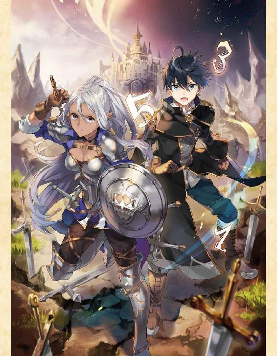

| 算数で読み解く異世界魔法２ | |
| 扇屋悠 | |
| TOブックス (2017) | |
宿敵・鈴木との戦いから早六年。タカハは敵国の神秘使いたちを次々に倒して国一番の魔法使いとなり、険悪だった家族とも少しずつ距離を縮めていた。そんな矢先、彼の姉・ラフィアが鈴木に連れ去られてしまい、エルフの女騎士と共に救出へ向かう。タカハは（実は）大好きな姉を取り戻せるのか？ 強大な敵を前に、限界突破の魔法を放て！ 完璧な計算を越えた想いが絆を繋ぐスイートホーム・ファンタジー！

Illustration えいひ
Design BEE-PEE
プロローグ：『ぶちかますがよい』と人形は笑った。
視界を流れる夜の森は、黒い毛並みの狼の群れのように見えた。
耳を揺らす風切り音と自分の荒い息づかいが、聞こえる音の全て。
僕は走っていた。
それも、前世の常識と比べればとんでもないスピードで。
「時速で......二倍した十七キロくらい？」
十七という数字を区切りとして使い始めて違和感がなくなったのは、もうずいぶん前だ。今では口が勝手にそういう言葉を使っている。
時速三十四キロといえば、短距離走のスピード。それを僕は数十分以上維持していた。僕の身体能力がそこまで優れているというわけではなくて、その速度の理由は──魔法だ。
『風の七番』。移動に風の加護を得る補助魔法。常に追い風を受ける状態といえばわかりやすいだろうか。それが展開されている。森の中を移動する最速の方法がこれだと気付いてから、僕はこの単位魔法を愛用していた。
そんなわけで、僕は風に背中をぐいぐいと押し込まれつつ、夜の森を疾走中。
目的地は、まだ遠い。
慣れというのはすごいもので、一足飛びに茂みを飛び越えるこの動作も、速度を殺さず枝をかいくぐる仕草も、僕ほとんど無意識にこなせるようになっていた。体力も十分についたし、前世の記憶と比べれば、この世界で十五年目を迎える僕はずいぶんと野生児になったと思う。
『......本当にやるのじゃな？』
聞き慣れたしゃがれ声が僕の右肩のあたりから響いたのは、そのときだった。
『やつは二つ名持ち。指名級の難敵じゃ。危険な挑戦であることは間違いないぞ』
「やるよ。もう決めたんだ。......ゲルフまでそんなこと言うの？」
僕は野戦用ローブの右肩にくくりつけた布製の人形に視線を落とした。まるで応えるように、ふっ、と不敵な笑い声が響く。『保護者として一応はな』
僕が走る振動に合わせて、不安げに人形が首を揺らしている。その人形から声がする。
『すでに双方入り乱れた戦域に突入しておるはずじゃ。気を引き締めよ』
「ん」
前方になにか気配のようなものを感じて、僕は走るペースを緩めた。
「──噂をすれば、だね」
通り過ぎるだけの風景に過ぎなかった夜の森が、輪郭を取り戻していく。風切り音が消える。
そして、──別の音が近づいてきた。
「......逃がすな......ッ！」「......右だ......！」「追え......！」「いいぞ......！ やつは手負い......！」
切迫しているが、どこか興奮した声。獲物を追い立てる狩人のような声だ。続けて、がちゃがちゃと鎧を揺らす複数の音が急速に大きくなってくる。
手近な木の影に身を隠すこと数秒──
僕の視界に姿を見せたのは、金属製の兜を深くかぶった『魔法の国』の騎士だった。
「あの騎士、......まさか武器をもってないのか？」
ときおり後ろを振り返りながら走る騎士の腰には、空の鞘だけがある。武器を失ったことに同情はできるけれど、思い切り敵兵に背を向けて逃げるのはあまりいい手とは思えない。
助ける義理はないけれど、単純にそこは通り道だった。
「参ったな......、けど仕方ないか」
僕は一つ息をつくと、マナを知覚し、援護のための呪文を決めた。
「〝────火─三の法─〟」
最初の二節──単位魔法は『火の三番』。大人の身長サイズの大火球を生み出す、火属性屈指の高火力魔法。これが六マナ。
「〝──今─眼前に──〟」
続く二節、発動位置と時間を決める修飾節がそれぞれ二マナずつ。
六＋二＋二。
「〝────ゆえに対価は十〟」
詠唱の終了と同時に、周囲を漂っていた十粒のマナが僕の心臓の隣のあたりにある回路を通り過ぎて──次の瞬間、予兆も予備動作もなく、僕の目の前に巨大な火球が出現した。
騎士が逃げてきた方向へ視線を向ける。目測で三十メートルほどの距離に、黒い鎧とかがり火の炎がいくつか見えた。
──さっさと終わらせよう。
僕は内心で呟いて、容赦なく大火球をその地点に投射した。
大火球は敵兵たちが居たあたりへと疾走し、橙色の炎柱を夜の森に刻む。
「魔法だ......！」「散開して包囲しろ！」「まだ体力が残っていたとはな......！」
橙の光にさらされ、黒鉄の鎧の兵士たちが森の中へ展開していくのが見えた。一般兵の部隊、規模は十人ってところだろう。動きがスムーズだから、優秀な小隊長が率いているのかもしれない。さて、どう仕留めるか──と考えを巡らせたときだった。
「ご助勢、感謝します！」
振り返ると、かすかに息を上げ、さきほどの騎士が立っていた。
身長は僕と同じくらいで、男にしてはやや小柄。声のトーンも高いから、まだ若い従騎士かもしれない。所属を示すコートは黒色騎士団のものだった。
「ええと......」
だが、何よりも印象的なのは、その顔をすっぽりと覆う兜だった。
円柱状のそれは......たしか、グレートヘルムっていうんだっけ？
大層な名前とは裏腹に、まるでバケツをかぶってるようにしか見えない。武器も持ってないし、胡散臭い騎士だな──というのが率直な印象だった。
だから、「武器は？」と問いかける声が棘っぽくなってしまった。
バケツ騎士は申し訳なさそうに首をすくめる。
「少し荒っぽく使ったところ、折れてしまったのです。途端、この有様で......」
じゃあなんで魔法で反撃しないんだろう、と思うけれど、言っている時間はなさそうだった。
「これを」と言って、僕は腰から一般的な鉄製の中剣を抜いた。「騎士様にとっては粗末な剣でしょうが、僕たち奴隷にとっては高級品です。折らないでください」
「命の恩人の剣。乱暴に扱わないとお約束しましょう。──前衛は、私が」
「ちょっと待って......！」
さっきまで全力で逃げてたのに前衛なんてできるのかよ、と思うけれど以下略。
黒鉄の敵兵の気配が周囲に濃厚に拡散していた。
『戦闘か？ 神秘使いは？』と右肩の人形が訝しむような声で言う。
「いない。一般兵だけ。すぐに終わらせるよ。〝火─十の法────〟」
突発的な遭遇戦は、そうして始まった。
敵国『鉄器の国』の黒鎧の兵士は剣や槍で武装しただけの単なる兵士にすぎないから、正直、僕の敵ではない。問題は人数差と不意打ちだけで、そこに気をつけていれば危険はほとんどないだろう。あのバケツ騎士が戦力外でもたぶん問題ない。
──と、考えていたから、
「あのバケツ、......やるじゃん」
ときおり木立の間から姿を見せるバケツ騎士は、決して僕の射線に立たなかった。それだけなら臆病者にだってできるけれど、バケツ騎士がただ逃げ回っているだけではないと気付いたのは、敵兵を半分くらい倒したあとだった。
──僕が魔法を撃ちやすい位置に敵兵を集めてるんだ。
倒せる兵士を前にしても、途中で剣を止め、立ち位置を優先しているのは、そういう意図があるに違いなかった。
かと言って、バケツ騎士は剣技に劣るわけでは決してない。森の中から影のように滑り出てきて敵を仕留める剣撃には躊躇いがなく、的確だった。
まぶたの裏側にいくつかの数字が踊る。僕の両目は戦況を追いかけつつも、バケツ騎士の身体能力を勝手にパラメータ化していく。人間なら誰もが持っている数字。それを決めようとするのは、相変わらずの僕の癖だった。
結果──剣術は十点満点で九点以上、実戦の勘と連携能力はほぼ十点満点。
共闘しているから採点が甘くなっているというわけではない。むしろ逆だ。命をかけた戦いなのだから、味方の評価にも僕は手を抜かない。本当に何度見ても、バケツ騎士の立ち回りは圧倒的だった。
そこに僕の魔法が加わることで、信じられないスピードで敵兵が倒されていく。僕はただ自分のいいように魔法を撃っているだけなのに、バケツ騎士の立ち回りがそうさせるのだ。
認めよう。──これほどの使い手を僕は見たことがない。
気に入った音楽を聞いているときのような高揚感が僕を包んでいく。面白いように次々と敵兵が倒されていき──、だが、心地よいセッションはあっけなく終わりを迎えた。
僕のそばに戻ってきたバケツ騎士は涼やかな声で、「では魔法士殿、トドメを」と告げた。
その役割分担を知っていたかのように、僕は炎槍の呪文を完成させる。
「〝──ゆえに対価は十二〟」
僕の視界、右上方に生み出されたのは、文字通りの炎の槍。加速した炎の槍が最後の二人をまとめて薙ぎ払った。
「うわあああッ！」「や、やめ──！」
断末魔すら焼き尽くした光が消え、闇を取り戻した森の中で音を聞くこと数秒──周囲に動くものの気配はなさそうだった。僕は一息をつき、すぐ背後にいる騎士に声をかける。
「......敵兵は残っていないと思います、騎士様」
返事はない。
「騎士様？............え？」
振り返ったところで僕は呆然とする。
先ほどまで隣に立っていたバケツ騎士の姿がどこにもなかったのだ。
「は？ あの人、どこに行った？」
『どうしたのじゃ？』
「騎士様を一人助けたんだよ。その騎士様がどこにもいないけど」
考えられる可能性の筆頭は見間違い......だけど、それはあり得ない。あのバケツ騎士の支援があったから、スムーズに敵兵を撃破できたのだ。あるいはこの先になにか別の任務があって急いでいた、とか？......いや。だとしても僕に声をかけない理由にはならないか。
『ところで......わしの剣は返してもらったのじゃろうな？』
「あ」
周囲を見渡しても、鋼鉄の煌めきはおろか、それを収めていた鞘すら見当たらない。どんな理由にせよバケツ騎士が持ち去ったのは間違いないだろう。
「......もういいや。行こう」
『ま、待たぬか！ 鋼鉄製の剣じゃぞ？』
「騎士様にとられたんじゃどうしようもないよ」
吐き捨てるような自分の声とは裏腹に、僕はそれほど腹を立てていなかった。
バケツ騎士の剣さばきがまぶたの裏側に今も焼き付いている。
苛烈な剣の軌跡と、ダンスのように優美な立ち回り。
彼のように優れた剣士に使われた方が、剣にとっては幸せなのかもしれない。剣術に関していえば、僕は護身用としての使い方しか分からない。
『むう、この場は諦める他ないか。持ち去ったのが騎士様なら、返してもらえるじゃろう』
「そうだね」
バケツ騎士とゲルフの剣のことをさっぱりと忘れると、僕は風の加護を受けた疾走を再開した。
深い夜の森を抜け、視界が開けると、そこは戦場だった。
小さな谷を見下ろす高台に僕は立っている。左手に隊列を組みながら魔法を放つ味方がいて、右手側には弓矢で応戦する黒鉄の鎧の部隊がある。
その中央に僕は今回の標的を見つけた。
「あいつか」
黒い鎧の兵士たちの中で、白い法衣を身にまとったその男はよく目立った。
その小柄な男は痩せている。上半身の法衣はぶかぶかで、浮かび上がった鎖骨や、貧相な二の腕がよく見えた。目の大きな顔立ちは幼い印象。だけれど、肌や髪に年齢相応の艶はなく、目の下の隈や猫背と相まって、げっそりとやつれている。
僕が意識を奪われたのは、男がひどく痩せていたことではない。
その男は、戦闘中であるにもかかわらず──ものすごい勢いで食べ続けていたのだ。
パン、ハム、チーズと常人の一食分を口に放り込み、数度の咀嚼の後、水筒で栓をするように流し込む。その反復。一瞬たりともとまらないその食餌行為と体格とのアンバランスが、どこまでも不気味だった。......てか気持ち悪い。
「めっちゃ食べてるんだけど」
『うむ、間違いなかろう。指名級神秘使い、通称［大食い］じゃ。ええと......』
がさごそ、とページを繰る音がする。
『騎士団の報告書によれば、魔法を吸い込み、腹に貯め、吐き出す、というやつに固有の神秘［飽食の腹］を操る。矢や剣さえも吸い込むことができるようじゃ。生半可な魔法では決して有効打とはならぬじゃろう』
『......』
『聞いておるのか、タカハ』
「聞いてない。予備知識は入れたくないから」
『少しは他人を頼ればいいものを......』
人形は呆れ混じりのため息をついた。
『まあよい。必要なことは都度助言するゆえ、いつもどおり、勝手にせよ』
「うん」
数秒かけて、僕は呼吸を落ち着かせる。
敵国、『鉄器の国』が誇る一騎当千の異能戦士、それが神秘使いだ。中でも『魔法の国』が二つ名を認定した危険な神秘使いをとくに指名級と呼ぶ。そんな彼らを討ち果たすことは魔法使いにとっての大きな名誉だった。
今日の僕の狙いは『大食い』──あの男だ。
これから僕はあの男を倒す。つまり......殺す。最近ではもう、その程度の事実には動揺しなくなった。そのくらい、この世界の僕にとって、戦いと死の匂いはすぐそばにある。
自分の身体に意識を向ける。
移動補助の『風の七番』は効果時間が終了。
残存回路は満タンの三百六十五マナ分。
若干の疲労あり。
だけど、コンディションは極めて良好。
「よし」
一つ息を吐き出し、僕はブーツで高台の端を蹴った。獲物を狙う獣のように俊敏に、だが足音を殺して、僕は谷底へ駆け下りる。
すぐに、僕は味方に発見された。
「あれは......!?」「黒のローブと黒い髪！」「大魔法使いだ！」「タカハじゃないか......！」「タカハが来てくれたぞ！」「これで勝てる！」
まだ勝てるかどうか分からないけど──、と僕は内心で呟きながら、魔法使いたちの隊列に合流した。小部隊の指揮をとっていた騎士もまた、驚きに目を見開いて僕を見る。
「救援要請を送ったのはつい先刻だぞ!? 転移座もなしにどうやってここまで!?」
「もちろん、走って来たんですよ」
僕はかすかに顎を引いて、大きな声で言った。
「──僕が神秘使いを討ちます。みなさんは後方の本隊に合流してください」
「恩に着る！」
「「「おおおおお────ッ！！！」」」
僕は魔法使いたちと入れ替わるように最前列へ躍り出た。視界が一気に開ける。
『どうやら敵も気付いたようじゃな』
人形から聞こえた声のとおり、黒の鎧の兵士たちが左右に分かれ、げっそりと痩せた神秘使い──『大食い』が姿を見せた。互いの距離は百メートルほど。すさまじい勢いで手に持っていた巨大な干し肉を飲み下した法衣の男は、やつれた頬を歪め、嗤う。
「クククッ、君が二代目かい？ こうして暴れていれば君に会えると聞いてね、わざわざこんな辺境まで出てきたんだ。少しは粘ってくれよ？ その方が美味しくなるからさ」
「一つだけ言っておく、神秘使い。僕はその呼び名が大っ嫌いだ」
売り言葉に買い言葉を返しながら、僕はマナを知覚し、回路を開く。
初手の呪文は決めてある。
「ああ！ 本当に若いね！ 立ち上がったばかりの小鹿のような反発だ！ ソテーにしようか？ それともグリル？ 僕の前に跪いて涙を流し、許しを請う君が見えるよ！」
べろり、と『大食い』は舌なめずりをして僕を見た。
「その涙がどんな味か、今から楽しみだ」
......本格的に気持ち悪いんだけど......。
背中の全面を埋め尽くした鳥肌に押されるように、僕は最初の詠唱を開始した。
「〝火─十の法─今─彼方に〟」
『火の十番』、別名、押し包む爆裂は、発動起点を中心に中規模の爆発を引き起こす単位魔法だ。その対価は十二マナ、かなりの重量級魔法。
発動時間を今に指定、二マナ。
発動起点を遠方に指定、三マナ。
「〝ゆえに対価は──十七〟」
予備動作も、演出も、そして、身構える時間さえもない。『大食い』の立っていた地点を起点として、小さな家くらいなら破壊できそうな威力の爆発が唐突に生み出された。
これがこの世界の魔法だ。火力も、発動位置も、発動時間も、自由に変化させることができる論述的な呪文。それを組み立てる作業はパズルに似ていて、僕は嫌いじゃない。
これは、ターゲットが遠方にいて、味方を巻き込むリスクがない場合の最大火力呪文。
普通の兵士なら、小隊クラスを殲滅できる。
二つ名を持たない神秘使いなら、これで決着がつくことも多い。
だが、敵は指名級だ。そう容易くはいかないだろう。
僕は爆炎の残渣に目をこらした。
人間の肉体を容易く挽き肉に変えるほどの火力を受けた神秘使いは──
「いきなりご挨拶じゃないか！」
一瞬前と全く変わらない姿勢で、そこに立っていた。
「おかげで腹五分ってところかな？ 礼儀も知らない蛮族にしては上等な前菜だったよ！」
「......持続的、防御系の神秘が常時展開」
これで間違いないだろう。『聖句』を言う時間は与えなかったし、男が盾のようなものを持っているということもない。見たことのない神秘だ。こいつの固有なのかもしれない。二つ名持ちの神秘使いはその能力の性状を知ることが攻略の第一歩となる。
『身構えよ！ やつには次があるぞ！』
人形からの声のとおりに、『大食い』は口を思い切り開いた。
「これなら、とくに加工しなくて大丈夫そうだ、ねえええええええ──!!」
「──!?」
僕はとっさに身を横に投げる。そうしなければ間に合わなかったかもしれない。一瞬前まで僕の身体があった場所を、爆裂波が通り過ぎていく。
術者である僕は見間違えなかった。
その正体は、僕がさきほど放ったばかりの魔法だ。
──魔法を吸い込み、腹に貯め、吐き出す、という固有の神秘。
マジで吐いたのか......。
「礼儀とか言う前にさ、鏡でも見たら？ 下品な人が映ってると思うから。──〝土─七の法─二秒後─眼前に ゆえに対価は十三〟」
「ははっ、蛮族の地にテーブルマナーもクソもないから、ねええええええ──!!」
顎の関節が外れそうな勢いで口を開く『大食い』。その口元に純白の──神秘の光が散り、次の瞬間、鋭い数本の槍が機銃のように連射された。
槍、四本──ッ。
目で追えたのはそこまで。
殺意の宿った四つの穂先を僕は勘を頼りに回避する。被弾は、なさそう。どうやら腹の中に武器を貯めておけるらしい。攻守揃った異能だ。
同時に──僕は反撃の詠唱を終了した。
「〝土─七の法─回り込む一つ─今─眼前に ゆえに対価は十三〟」
『土の七番』。巨大な岩塊を生み出す土属性屈指の高威力単位魔法。先行した詠唱もほぼ同内容だ。合計二発の撃ち出す岩塊が僕の目の前の地面から解き放たれる。
だが、その二発はただ単に発動時間を合わせただけじゃない。二詠唱目には軌道をねじ曲げる修飾節を加えてある。
結果──
一つの岩塊は直進し、突進。
もう一つの岩塊は『大食い』の視界の斜め上から鋭角に襲いかかる。
互いが互いの死角を潰すように交錯する軌跡の岩塊を回避するのは難しい。たぶん僕の運動能力じゃムリだ。並の神秘使いを幾人も仕留めてきた決殺の二連唱は──
「──あれ？ その程度？」
ばきり、ごきり、と。
音が聞こえそうなその二度の顎の動きだけで、飲み込まれた。
「────」
『大食い』は唇を歪め、首をかしげる。
「興ざめだなあ。ちなみに長引けば長引くほど不利ってのは分かってるよね？ だったら今のが全力？ おっかしいなあ。それにしては、君──弱すぎじゃない？」
黒鎧の兵士たちが歓声を上げる。
僕の後ろにいる魔法使いたちが動揺する。
言葉の応酬はときに戦場の雰囲気を掌握し、局所的な戦況を傾けることだってある。『大食い』はそれを理解し、その上であえて言葉を紡いでいるのだろう。
そんな『大食い』の言葉を──僕は聞いていなかった。
「......爆発は呑み込む。岩塊も食べられた。火属性の最高火力と土属性の最大威力の単位魔法をぶつけて、それでも突破できない防御能力──ね」
それだけ聞けば、絶望的な戦いだ。敵はたぶん、腹の中に大量の武器を持っている。距離を詰めて連射されれば、防御魔法の回転が追いつかず、いつか倒されてしまう。
だが──勝利へのヒントは、今の攻防の中に一つあった。
敵は、僕の魔法を受けても、立っている位置を変えていない。自分よりもはるかに重い物体を受け止めて、反動が生じないはずはないのだ。
てことは、答えは一つ。
敵の神秘をより正確に表現するなら『攻撃を一時的に異空間に格納する能力』だ。しかもその異空間には、動いているという状態すら保存される──
「あ」
ふと気付いた。
二発とも食べられたんだから、二発続けて撃ち返されるに決まってる。
「......もしかして、ちょっと、ヤバい？」
「死、ねええええええ────!!」
絶叫と同時に『大食い』の口元から岩塊が二連射された。僕が放った魔法。運動エネルギーを保ったままの岩塊が一瞬で僕との距離をゼロにする。
一つは僕をめがけて、直進。
もう一つは僕の前上方から鋭角に襲いかかる。
「〝土─七の法─今─眼前に ゆえに対価は十〟!!」
なんとか一撃目を避けきったその間に、僕は同じ魔法を詠唱し、前に放つ。僕の魔法が『大食い』に奪われた二発目と正面衝突し、すさまじい破砕音が谷底に響き渡った。
破砕された岩石の破片がこめかみのあたりをかすめ飛んでいく。ぬるりと頬を熱が伝った。
頭から血が引いているのに、心臓は狂ったようにビートを刻んでいく。
ちりちりと焼け付くようなこめかみを僕は強くぬぐう。
『手数がつり合わぬ......！ これでは押し切られるぞ！』
「分かってる」
『大食い』は一つのアクションで二つの手数をこなす。防御と攻撃が両立してる。しかも、やつの神秘は恐らく持続系。毎回『聖句』の宣言が必要なタイプじゃないから隙もほとんどない。攻防が揃った、強力な能力だ。
「クククッ、攻撃しなければいい、とでも思ったのかな？ 攻撃しなければ僕がいつか弾切れになる、とでも？ 残念だぁ！ 実に残念だよ！ その考え方は浅はかすぎる、ねえええええ──ッ!!」
『大食い』は立て続けに剣や槍を吐き出した。長剣、大剣、曲刀、短剣、直槍、三叉槍、騎兵槍──機銃のようなそれらが後退しようとしていた魔法使いたちに襲いかかる。やっぱりやつは胃袋の中に大量の武器を隠し持っているらしい。
『ええい！ 何か手は──!?』
「当たり前だけど、あるよ」
『......なに？』
敵は吸い込んだものを連射してる。それが最大のヒントだ。
「能力の性状が分かった時点で、異能バトルなんて終わりなんだ。まして君の神秘は弱点もはっきりしてる。じゃあ──本気でいくよ」
「本気？ はっ。冗談だろう？ 魔法使い一人の火力の上限は決まっているじゃあないか。さっきの爆発の魔法が君一人の限界だろう？」
──『十七の原則』。
魔法があって、月が二つあるこの異世界の普遍語には、十七までの数字しか存在しない。だから、開幕の挨拶代わりに唱えた『火の十番』が魔法使いの攻撃力の限界となる。この上限はもちろん敵にも知られていて、戦闘の駆け引きに利用されることも多い。
だが、
「そう思ってくれてるなら安心だ」
「は？」
「言葉の意味が分かんない？ だったら要約してあげるよ。これから君は死ぬってこと」
「......ガキっぽい煽り文句だけは一級品だ、ねえええええ────ッ!!」
掃射される剣と槍。それを吐き出し続けたまま、しびれを切らした『大食い』は距離を詰めてきた。すさまじい速度で連射されるその武器の嵐を必死にかいくぐりながら、僕は頭の中の本を開く。無数の単位魔法と修飾節の知識を収めた、僕だけの魔法書だ。
どの魔法にしようか。
そう問いかけて、魔法書はあっさりと仕事を放棄した。
──煮るなり焼くなり好きにすればいい、と。
「〝火──三の法────〟」
単位魔法は『火の三番』。
大火球を生み出す火属性の中級魔法、六マナ。
「〝────十二個──〟」
魔法の数を定める三節目に十二という数字を挿入。十二倍魔法。
「〝──今──眼前に──〟」
ほぼ至近とも言える距離に接近した『大食い』の吐き出した槍の一本が、ついに僕の足をとらえた。冷酷な鉄塊が皮膚を引き裂く灼熱のような感覚に耐えながら、僕は呪文の最終節を刻む。
『ぶちかますがよい』
人形から聞こえるしゃがれた声は、かすかに笑っていた。
「〝──ゆえに対価は 百二十〟」
次の瞬間、僕の周囲を取り巻くように、十二個の大火球が生み出された。
「────え？」
橙色の火球に、呆然とした『大食い』の顔が照らし上げられる。
「なん、で......？」
『十七の原則』──詠唱の対価の上限は十七であると定める絶対の原則。
だが、それが絶対だったのは過去の話だ。
僕には、前世の記憶がある。魔法があって、騎士がいて、奴隷がいる、このファンタジー世界に転生する前の記憶が。その記憶の最後、僕はこの世界の魔法を司る存在から、ある能力を受け取っていた。
──『対訳』。
願うだけですべての言葉を理解し、操ることができる、精霊の祝福。これによって、僕は生まれながらにして七つの系統すべての魔法言語を使いこなせる。
だが、祝福はそれだけではなかった。
願うだけですべての言葉を操ることができるのなら──十七より大きい数字もまた、操ることができる。その発音を口にすることができるのは、世界でただ一人、僕だけだ。
十二倍にコピーされた大火球を従えながら、僕は笑う。
「君は無限に大きな胃袋を持ってる。けど、口の大きさは変えられないだろ？」
あらゆる魔法攻撃を飲み込むだけでなく、大量の剣や槍を溜め込む能力。
その弱点は一度に通過できる物の数にある。
数度の攻撃を見て僕は確信していた。『大食い』が同時に能力を通過させることができる物体は最大で四つ。だから、剣や槍を連続して吐き出さなければならなかった。
「ひっ！ や、やめろ──!!」
打ち破る方法は一つだ。
──一瞬のずれのない同時に、敵の吸収を上回る個数の魔法をぶつければいい。
「悪いけどやめないよ。『暁の大魔法使い』に敗北は許されないからね」
倍数魔法によってコピーされた十二個の大火球は、完ぺきな規範で律された軍隊のように整然と、やせ細った神秘使いに襲いかかった。
「クソが！ 全部喰ってやる！ 喰ってやる──ッ!!」

橙の熱量が一つ、二つ、三つと飲み込まれ、かき消え──、四発目がついに白い法衣を焼いた。
あとは、早かった。
残りの八つの火球が同時に着弾し、炎の柱が立ち上がる。絶叫と男のシルエットすらも焼き尽くした炎の柱が消え、後に残っていたのは、すさまじい防御性能を誇る白い法衣の切れ端だけだった。
「「「......おおおおおおお──ッ!!」」」
一拍遅れて、谷底に魔法使いたちの声が響く。立て続けに僕の頭上を様々な攻撃魔法が飛び越していく。司令官にして一騎当千の武将でもある神秘使いを失った敵軍はその反転に対応できていない。
戦況は逆転するだろう。
僕が手を貸さなくとも、神秘使いを失った部隊に魔法使いたちが遅れをとることはない。
『ついに、成し遂げたのじゃな。これであやつの討伐数をお主は上回ったこととなる』
人形から聞こえるしゃがれた声は、ほくほくと嬉しげだった。
『よくやったぞ、タカハ。......さあ、合流地点まで帰還せよ』
「そう、だね......」
しゃがれた声の指示は理解できた。納得もした。
だが、──身体は言うことを聞かなかった。
踏み出した右脚が一気に脱力し、僕の視界はぐらりと傾く。
とっさに腕を突き出してかばったものの、倒れ込んだ右半身が痛い。いや、もっと痛いのは脚だ。じくり、と沸き立つような痛みに視線を向ければ、ローブにどす黒い色が滲んでいる。血が引いているような寒気を感じる。
『タカハ......？ どうした？ 応えよ！』
「大丈夫......。ちょっと、ケガ、しちゃっただけ......」
全身が鉛のように重かった。
まぶたが鋼鉄の扉のように落ちてくる。
「......大丈夫か!?」「手分けをして運べ──！」「回復魔法の使い手は──!?」
抱えてくれた魔法使いたちの張りつめた声を聞きながら、僕は、ゆっくりと、意識を手放した。
第一章：「私はたしかに神の声を聞いた」と神秘使いが言った。
そこは、窓から差し照らす光さえも荘厳な聖堂だった。
天井に描かれた巨大な絵は神の降臨を祈る聖職者たちの苦難の道のりを描いている。
──ミシア教。
大陸の最大国である『鉄器の国』の根幹を成す一神教。
その信仰の中心点である大聖堂では、厳かに、一つの儀式が執り行われようとしていた。
「──以上をもって、『ミシアの使徒』たる戦導士エィムを新たな枢機卿に選出する」
響くのは、重厚な声。
幾重にも法衣を着重ねた老人のその言葉に、参列者たちの間を静かなどよめきが駆け抜けた。
ある者は嫉妬し、ある者は後悔し、またある者は歓喜をする、抑えきれない心が少しだけはみ出した声。悲喜入り交じったそれを一身に引き受けるのは、
「ありがとうございます、教皇猊下」
──平伏する、一人の男だった。
戦導士エィムはまだ若い。真冬の氷と同じ色をした瞳は切れ長で、肩にまで届く金の長髪と相まって、涼やかな印象を他者に植え付ける。怜悧に整った顔立ちには表情と呼べるものはない。その全身を覆うのは金糸で縁取られた純白の法衣。
神が削り出した彫像のように均整のとれた肉体をかがめ、戦導士は平伏している。
だから、その式典の参列者たちに気付くことができるはずもなかった。
──男の瞳に宿った、狂気じみた光を。
「しかしながら、そのお言葉は間違いです」
言いつつ、男は『ミシア教』の最高執権者である教皇を見上げた。
対する教皇の眉が戸惑いに揺れる。これから位階を手渡されようとしている者が否定の言葉を口にするなど、前代未聞だった。それ以前に、許しを得ずに教皇を直視することは認められない──
「間違い、だと？」
教皇の言葉を受け、男の美麗な唇が怪しく弧を描く。誰の目にも明らかな嘲笑。その不敬を男は無視した。そんな些末なことはどうでもいい。もう、どうでもよくなった。今日までの日々は、彼にとってあまりにも長すぎたのだから。
天井の絵も、教皇の言葉も、理解に苦しむ。
俺が唯一信じるのは、ただ、己のみだ。
「ええ。間違いです。なぜなら──俺がなるのは、教皇なんですから」
「貴様──ッ!?」
教皇が玉座を蹴って立ち上がる。
同時。
戦導士エィムは──鈴木は、異能を解き放つための聖句をつむいだ。
「──『熾天の片翼』」
一瞬で、その背から右上に向かって輝く光の翼が形成される。三枚のそれらは獲物を狙う肉食獣のように屈曲した後、瞬時にトップスピードに達して、教皇に襲いかかった。
あまりにも明白に翻された反旗に、大聖堂に詰めかけた参列者たちは動くことすらできない。
ただ一人──教皇を除いては。
「その振る舞いの代価、命一つで足りると思うなよ？」
老人とは思えない機敏な動きで後退しつつ、教皇は聖句を発した。
「『信徒の残影』」
その後退の軌跡に、影が次々と残されていく。ほぼ一瞬で生み出された影は三つ。そのそれぞれが立ち上がり、教皇そのものと同じ存在感で凝結する。光の翼が教皇の立ち位置を直撃したのはまさにその瞬間だった。大聖堂を揺さぶるような神々しい爆発音が響き──
法衣に汚れの一つさえつけない堂々とした立ち姿で、教皇はそこに立っていた。
そんな教皇に、鈴木は不敵な笑みを向ける。
「さすがだよ。神秘の使い方くらいは覚えていらっしゃったようだ」
「──」
皮肉にも表情を変えず、教皇は歩む。その一歩ごとに影が次々と残され、すぐに数体が存在感を獲得して立ち上がっていく。鈴木の翼の二撃目は地面すれすれを横向きに薙いだ。が、影の部隊が光の暴威を受け止め、四散する。
......押し切れない、か。
鈴木は冷静な判断を下し、聖句を重ねた。
「──『奇跡の剣』」
しゃらり、と涼やかな音。抜かれた宝石剣に純白の光の大剣が宿る。光の翼と剣を携え、純白の法衣を身にまとうその姿は、天界からの御遣い以外のなにものでもない。
神秘の二重行使。本来ならば新たな神秘の展開と同時に先行する神秘はたち消える。神秘使いたちにとっての常識であるその事実を打ち破れるのは『ミシアの使徒』の異名を持つ鈴木ただ一人だった。
「これならどうだ？」
右上から光刃による縦断。
左上から光翼による横断。
大聖堂の壁画よりも鮮烈な輝く十字が空間に刻まれ、高く澄んだ爆発音とともに、その光が収束した後には──
「結論としては明白だ。──早まったな、小僧？」
凄絶な笑みを浮かべた教皇が立っている。
老人は無傷のまま、上座から鈴木を見下ろしていた。
「......」
鈴木はようやく、切れ長の瞳を細めた。
一秒よりも短い時間で教皇の影は着々と生み出され続けている。持続系の神秘。今もなお生み出され続ける影の生成量は、『剣』と『翼』の二重神秘をもってしても上回ることはできない。
「貴様がなにを勘違いしたのかは知らぬ。が、異端者の処断など日常茶飯事だ。その不敬を冥府で悔いるがいい」
傲然と言い放ちながら、教皇は腰に下げた武器を抜いた。華美な装飾が施された法衣と比べればあまりにもみすぼらしい片手サイズのメイス。だが、『鉄器の国』の国民は全員が説話として知っている。それは、教皇が若き信徒だったころ、異端の血を吸わせ続けた誅伐の武装だという事実を。
瞬間──十数体にまで増えたすべての影の右手にも、メイスが握られている。
『信徒の残影』。
自らの分け身を無数に生み出す、教皇の秘儀。
「これが我が神秘の力。あらゆる力を使えるだけの貴様には到達できぬ境地よ」
形勢は明らかに老練の教皇に優位であるようだった。そして、この大聖堂にいるのは二人の男だけではない。教皇に従い、その威光をあまねく国中に広めるために尽くす枢機卿や大司教たちが控えている。彼らもまた神秘使いだ。鈴木は教皇を速やかに討ち果たすしかない。
老教皇と若き神秘使い。
油断があったとするなら──それは教皇の側にこそだった。
「実に残念だ。俺に勝算がないとお考えになるとは」
「その勝算の全てを余が潰したのだろう？」
「可能性という言葉も知らないのか？ あなたはいつの俺を見ている？ 俺の上限をなぜ決めつけているんだ？」
「笑わせる。貴様にどのような可能性が残されているというのだ」
「言ったのはあなただろう？ 俺はあらゆる力を使える」
鈴木は淡々と語り、その最後に聖句を紡いだ。
「──『信徒の残影』」
それは、聞き間違いようもなく、教皇の聖句と同一のものだった。
「馬鹿なッ!?」
老人の戸惑いの理由は二つある。この国で使いこなせるのは己だけだと確信していた神秘を、目の前の男がいとも容易くトレースしたこと。そして、その発動を経てもなお、男の翼と剣が立ち消えなかったこと。
「二重にできることを三重にできないと考えるのは、想像力不足だな」
鈴木はただ、歩む。その一歩ごとに影が次々と生み出されていく。黒き片翼と黒き光刃を持った影が──
軍勢同士の衝突と決着は一瞬だった。
「ぐ......っ」
影には本人の力量が還元される。
教皇の全ての影は、まるで必然のように、鈴木の影の一撃のもとに存在を消滅させられた。
「──蹂躙しろ」
「貴様あああ──ッ！！！」
十数体の影が老人の身体を、その悲鳴と血しぶきさえも、あえなく押しつぶした。
「ふむ......。やはり慣れていないな。持続時間が足りないか」
ゆっくりと崩壊していく影の軍勢と人であったはずの赤黒いなにかからあっさりと視線を外し、鈴木は振り返る。
──凍りついた大聖堂に。
「今しがた死亡した前教皇への忠誠を残す者はいるか？」
前教皇のもと、『ミシア教』の教典が並び立てる美辞麗句の影で甘い汁を啜り続けてきた神秘使いたちは、動けば命はないと言わんばかりに身を強張らせている。
抗う勇気も野望も持ち合わせていない、戸惑い、すがるような、いくつもの視線。
強者への服従をすでに決定した軟弱な意思。
（......反吐が出る）
鈴木は表情一つ変えず、冷酷に言い放った。
「では、隣の人間を一人殺せ。それができた者に、新教皇たる俺に仕えることを認めよう」
どよめきがかき消え、静寂は一瞬。
荘厳なる大聖堂の中で、神秘の光と鮮血の花が咲き乱れた。
鈴木はその様を満足げに見つめる。殺す人間は半分以下まで減るだろう、と考えながら──
『──エィム様』
鈴木の脳裏に女の声が響いたのはその瞬間だった。
「どうだ？」
『は。聖典庁、法官庁、議会塔、すべて制圧に成功しました。残すは大聖堂のみです』
「制圧は成功した。援護は不要──」
『万一のことがあってはいけません。これより向かいます』
「いや。不要だと──」
『防御神秘を厳重に展開し、今しばらくお待ちください、エィム様』
ぶつり、と脳裏に響く声は途切れた。
鈴木は嘆息をもらしつつ、視線を下方に投げる。老人たちが法衣を振り乱しながら醜い殺し合いを続けていた。
中には冷静さを取り戻し、徒党を組んで鈴木に襲いかかってくる者や、儀式のために封印された扉を内側から破壊しようとする一団もある。鈴木は眉一つ動かさず、そんな彼らに神秘による一撃を放ち続ける。虫を潰す方がまだ気分がいいな、と内心で呟いた。
──そのときだった。
儀式のために封鎖されていた鋼鉄の扉が外側から引き裂かれたのは。
「「おお......！」」
立ち込める土煙の中がゆっくりと晴れていく。
扉のあった場所に立っていたのは、純白の法衣を着た一人の神秘使いだった。
「『聖槍の乙女』！」「ハーミリア......！」「信仰の守り手よ！」「聖女が来た！」
純白の布地に金糸で装飾が施された法衣と、対照的な炎髪。右手の巨大なランスと左手の巨大なシールドが異様な存在感を放つその神秘使いは──少女だった。あどけなさを残す顔立ちの中で、翡翠色の目元だけが引き絞られている。
少女の深緑の瞳が、鈴木をまっすぐに貫いた。
二人の神秘使いは電撃のような視線を交わす。
「......」
「......」
封印扉の周囲にいた老人たちが自分よりもはるかに小柄なハーミリアにすがるような声をかけた。
「『ミシアの使徒』が教皇猊下のお命を奪ったのだ！」「『乙女』よ！ かの逆賊に誅伐を！」「神聖なるミシア神の御前にその力を示せ！ ハーミリア！」
「──皆様、どうかご安心ください」
その声に応え、ハーミリアが見せたのは、無邪気な笑みだった。
天使が立ち上がった赤子を前に見せる期待と興奮の笑顔。
あるいは、生まれて初めて信仰の甘美を知った、少女の微笑。
「皆様の魂が正しく神のおそばにたどりつけるよう、ハーミリアは命が燃え尽きるその日まで、お祈りをいたしますから」
大聖堂は三度、凍りつく。
「ですから、全員まとめて──お命を頂戴しますね？」
どっ、と誰かの胸元に巨大なランスが突き立てられる鈍い音が、ハーミリアの返答そのものだった。時計は砕け、砂は落ち始める。悲嘆と狼狽が聖堂を埋め尽くして、ハーミリアを救援と信じ駆け寄った老人たちは我先にと扉から離れようとする──が。
「『敬虔の瞳』」
聖句と同時に、ハーミリアの右目に純白の光が宿った。
ランスとシールドの重さをものともせず、『乙女』は踊る。踊り続ける。見る者を例外なく惹きつけるそのステップにはわずかずつ欠点があった。彼女を飾るのは鮮血の花で、彼女の相手をつとめるのは肥え太った老人たちで、そのステップはいささか力強いという欠点が。
「なぜだ!? ハーミリアよ！ その瞳を濁らせたか！ 刮目しなさい！」
加速した突きの一撃で数人の人間を串刺しにして、眉一つ動かさずにそれを引き抜く『乙女』は、その言葉に足を止めた。おそらく、それは少女にとっての気まぐれでしかない一瞬。
「この身も、この心も、魂さえも、私はエィム様に捧げたから、です」
「『ミシアの使徒』は反逆の異端者だぞ！ だれよりも君は教義に忠実だったはず！」
「教義に忠実であることは今でも変わりません。同じく、私は一つ、気付いてしまったのです。この力はただ教義を守るためだけにあるのではない、と」
「それが、あの男ということか......ッ」
「ええ！ 私はお仕えしたいのです！ 真にミシア神の言葉を体現するお方に！ エィム様に！」
ハーミリアの頬が、瞳が、次第に熱を帯びていく。
「エィム様は仰いました。教皇と元老院の皆様はすでに神座に到達できるほどの善行をこの世界で積まれた。だから、こうしてお送りするべきなのです。病や老いに命を奪われるよりも前に、我らがしかるべきときにお命を頂戴する。これこそがミシア神への忠誠の証となります！」
「狂っている！ 狂っているぞ！ お前はすでに道を誤っている！」
「なぜでしょう？」
こくり、と信仰の少女は首をかしげ、
「教義はミシア神に祈ることと同様に、ミシア神のために人を殺めることを教えていますよ？」
無邪気な笑みを貼り付けたまま老人たちを虐殺する『乙女』に、鈴木は声をかける。
「......適当に残しておけ。放送を始める」
「承知しました、エィム様。足を断つにとどめます」
「任せる。──『天衣の糸』」
鈴木のかすかな呟きとともに、純白の光が鈴木の法衣を包んだ。光が消えると、法衣からは飛び散った血痕や臓腑の汚れが全てかき消え、それはまるで織られたばかりのような神々しい白さを取り戻している。
悠然と、鈴木は玉座に至る階段を上る。
光の片翼が、光の大剣が、その足取りを照らし上げる。
──後に、鈴木のこの反乱に加担した神秘使いたちは皆、口をそろえて語った。
『あの日、あのとき、あの大聖堂に、たしかにミシア神の御使いがいた』──と。
洗練された優美な仕草で振り返り、鈴木は玉座に腰を沈める。
深く息をつくと、顔を上げ、声を張った。
「──私は、たしかにミシア神の声を聞いた」
怜悧な美貌をどこか苦しげに歪め、鈴木は訴えかけるように語る。その視線と言葉は虚空に向けられているようで、そうではない。空に絵を描き、風に声を乗せる──大聖堂の玉座には、言葉を国中に伝達するための神秘が幾重にもかけられているのだ。
「『鉄器の国』は美しい国だ。強い国だ。大陸に覇権を唱える、信仰の国だ。──いいや、民の誰もが気付いていることだろう。その栄光は過去の話である、と」
鈴木は握った右の拳を胸に添えるように触れさせる。
「戦導師としてこの白き法衣を授かったあの日より、私は様々な外敵と戦ってきた。黒い鉄の鎧に身を包み、聖戦に身を捧げる民たちと多くの言葉を交わしてきた。──私は知っている。誰もが嘆いていることを。誰もが苦しんでいることを。そう──『鉄器の国』は貧しくなった。弱くなった......！ むやみに戦線を広げるあまり、国中が疲弊していることを教皇は理解していなかった。教義の影で甘い汁をすする老人たちがいた」
怜悧な男の顔立ちが、そこで、苦しげに歪む。
「......彼らは私にとって、誰もが敬うべき聖者たちだった。しかし、彼らの瞳がどこに向けられているのか、私には理解することができなかった。信仰と、自らの中に生まれた疑問の狭間で、私は押しつぶされた。苦悩と絶望の日々の中で私にできたのは、祈ること。ただ、それだけだった」
一拍の間。
「そして──私は、たしかにミシア神の声を聞いた」
鈴木は両腕を広げ、天に掲げる。
「『我らの真の敵に目を向けよ。その果てに救いを見い出せ。その道を阻むすべての小石を踏み越えて──』。神はたしかに、私にこう告げたのだ」
一拍。
「我らの真の敵とはなにか？ 熱砂の中で異教を奉ずる『砂漠の国』だろうか。自己を利することにしか意味を見出だせない『蒼海の国』だろうか。小さな天然の要害から足を踏み出そうとしない『山脈の国』だろうか。──違う。誰もが知っているはずだ。聖典にも繰り返し登場するかの邪教の徒。我らの聖地を不当に占拠し、おぞましい邪法を操る者たちが国を作っている。──魔法使いたちの国だ」
鈴木は毅然と立ち上がり、光の剣を突き上げた。
「これより、私は全軍をもって『魔法の国』を攻略する──！ かの邪教の国を我らの手中に収め、ミシア神の威光をあまねくこの大陸に広めるために──！」
大聖堂の中を沈黙が埋め尽くした。
「......あぁ......」とハーミリアがどこか艶めかしい吐息をつく。
次の瞬間、それは始まった。
最初はかすかな音だった。虫の羽ばたきのようなかすかな音。次第にそれは正体を現し、大聖堂を揺さぶるような大きな音に変わっていく。重ねられ、連鎖していくそれは──声だ。聖都の民たちが新たなる教皇を称える声だった。
鈴木はかすかに腕を震わせながら、大上段に掲げた剣を振り抜く。
「────聖なる開戦を、教皇たるこの私が、命じる」
凄惨な血の墓所と化した大聖堂を一歩出れば、聖都の美しい街並みを見渡せる回廊がある。
クーデターの直後だというのに、聖都を覆う空はあまりにも晴れやかだった。街の中には混乱もほとんど見られない。用意には数年をかけたのだから当然だった。
そんな回廊を進む足音は、二つ。
「首尾はどうだ？」
先ほどとは打って変わって平板な口調で、鈴木はハーミリアに問いかける。
巨大なランスを背負った炎髪の少女はかすかに表情を曇らせ、
「先ほどのエィム様のお言葉が国民たちの心を動かしたのは間違いありません。西部には前教皇の影響力が多く残っていますが、その他の地方は間もなく掌握が完了するものと──」
「痛みを無意識に避けるのは悪い癖だな、ハーミリア」
びくり、と少女の肩が震える。横目で一瞬だけ向けられた鈴木の瞳は、何一つの感情を宿していない。冬に凍てつく湖よりもなお冷え切ったアイスブルーの瞳を見て、
......私はもう『聖槍の乙女』などではないのかもしれません。とハーミリアは内心で呟いた。
（だって、エィム様に出会ったあの日から、瞳を向けられるだけで、甘い痺れが背筋を走るのですから──）
「俺が何を訊きたかったのか、本当に分からないのか？」
「いいえ。分かっています。分かっていました。にもかかわらず、エィム様のお言葉の通り、私は痛みを避けたのです。エィム様が『首尾』とおっしゃったのは、『魔法の国』の王都の件です」
「そうだ」
「......率直にご報告するならば、芳しくありません」
今度は、ハーミリアは顔を伏せていた。お怒りかもしれない。その怒りは──さすがに怖い。
「かの国は首都である王都に国としてのすべての機能を集中させています。その分、その防衛機構も堅牢です。長大な防壁や守備隊は我らにとってそれほど問題となりませんが、最大の問題は──」
「『魔導器』だな？」
「はい。第二次戦争において、王都を完全包囲した我が軍を撃退した戦略兵器です。確認できたもので三つ。それを突破できる糸口は......掴めていません。申し訳ありません」
「それも悪い癖だな、ハーミリア」
「──ッ！」
先ほどよりも大きく肩が震えた。それは、新たなる教皇が手を置いたからにほかならない。
視界に映るのは、戦場で剣を振るっているのが信じられないくらい、ほっそりとした長い指。ハーミリアの頬が熱を帯び、全身の感覚が肩に収束する。法衣ごしに手のひらの熱を感じるのと同時に、自分の法衣に染み付いていた他人の血がひどく汚らわしいものに見えた。
「お前は手を尽くしている。ならば、謝罪の言葉など不要だ」
「は、はいっ」申し訳ありません、と言いかけて、それを飲み込む。「分かりました、エィム様」
「──待て」
どこか驚いたようなその口調に思わず顔を上げると、鈴木がハーミリアの右腕を見つめていた。
「怪我をしているのか？」
（怪我......）
（ああ......）
先ほどの乱戦の中で、神秘の発動時間が終了するタイミングを狙われ、上腕を切りつけられたのだった。あの老人はずっとその機をうかがっていたに違いないけれど、失態だった。
「応急処置はほどこしてあります。戦闘にも影響はありません」
「なぜ言わない？」
「......え？」
「お前は、その右腕の価値を理解していないのか？」
「価値、ですか。......戦闘には支障ありませんので、後ほど配下の神秘使いに治療してもらいます」
「理解していない。いいから見せろ。直接触れた方が確実に治せる」
「え、エィム様!?」
抵抗する時間はなかった。腰から小ぶりな宝石剣を抜いた鈴木は躊躇いなくハーミリアの法衣の右腕を切り裂いた。
「『快癒の光』」
聖句と同時に鈴木の細い指先に純白の光が宿り、その指先が傷をなぞっていく。
「......ぁ......」
その部位にじくりと滲む痛みに加えて、日だまりのような心地よい熱を感じる。ハーミリアは立っているのも難しいほどの快感に全身を震わせた。
「お前の力も、お前の右腕も、すべては俺にとって必要なものだ。その状態を万全に保つことをなによりも優先しろ」
「は、はい......！」
「失血が多かった。ふらついているように見えるが？」
「いえ！ 問題ありません！」
（むしろ体調はこれまでになく絶好調です──！）
その高揚感の中で、ハーミリアは報告しようか迷っていた案件を一つ思い出した。
「......エィム様。神秘使いの一人が興味深い予見をしているようです」
「予見だと......？」
「私と同じく、普遍系ではなく固有系の神秘使いです。『啓示の虚像』──未来を占う程度の神秘は多数ありますが、あの少女の予見ほどに正確なものは多くありません。彼女が今回の聖戦に関して一つの予見を得たとの報告が上がっています」
「......」
鈴木はハーミリアの瞳を覗き込むようにして見た後、背を向けた。
「お、お気に召しませんでしたかっ？」
「当たり前だ。未来を予見するなど、冗談でも聞きたくない話だ。とはいえ、そうだな──お前という例もあるか」
「はい。私の『敬虔の瞳』は彼女の神秘によく似ているかもしれません」
鈴木は指先を顎に触れさせ、しばらく考えた後に言った。
「その予見とやら、聞くだけ聞こう。なにも手がなければ、強引に突破するしかなかったんだ。予言に従うくらいのことはしても、結果は変わらない」
「はっ。では、ご案内します。こちらへ」
回廊を曲がり、水路のめぐらされた美しい中庭を横切る。大聖堂を中心としたこの聖堂庭園には、信仰の象徴としてのすべての機能が集約されている。聖典を収めた蔵書宮や、一般参列者に開かれた表聖堂などが、美しく白い壁面の色を反射させていた。他国に置き換えるなら、王宮、あるいは宮殿といったところだろうか。
そんな聖堂庭園の片隅に、小さな塔があった。
「......もとは星見の神秘使いに与えられた観測塔だったのですが、数年前に使い手が死去してからは、予見系の神秘使いたちを集めていたようです」
「前教皇の考えそうなことだな。自らの実力を磨く努力を怠り、確約される未来を求める」
「しかし、皮肉なことに、この塔の神秘使いたちのほとんどが今日のエィム様の勝利を予見していました」
「ははっ」
鈴木がかすかに肩を揺らした。その微笑にどうしようもなく惹きつけられる自分を自覚して、ハーミリアは顔を背けることしかできなかった。
塔の扉の前には、黒鎧の兵士が二人立っていた。ハーミリアの合図でその扉が開かれ、兵士の一人が薄暗い塔の中を進む。壁に沿って張り巡らされた螺旋階段を上ること、しばし。
「こちらです」
黒鎧の兵士が扉を引いた。薄暗い部屋の中にはぼんやりとした光が波のように拡散している。
「水？」と鈴木の声が揺れる。
その小さな部屋は、床面積のほとんどを巨大な水鏡が占めている。
「......エィム、様......ようこそ......」
その水鏡の向こうで、白い法衣を身にまとった小柄な影がさらに身を小さく縮こませていた。
フードが垂れているせいで、その顔立ちははっきりとしないが、かすれる声を聞く限り、まだ少女だろう。ハーミリアも直接会うのは初めてだった。
「挨拶はいい。お前の能力を見せろ」
「......はい......」
小柄な影が顔を上げた。フードがずれ、年若い人間の少女の顔立ちがあらわになる。印象に残らないその顔立ちに水鏡の波紋が反射した。
「では......──」
その反射が、ゆっくりと揺れ始めた。
ハーミリアは視線を水鏡に向ける。風が入り込まず、だれも身動きをしていないというのに、水鏡はゆっくりと波紋を大きくしていく。
（......まるで、心臓の拍動のよう）
次第に波紋の中心点は分裂をして、その波動のリズムを少しずつ早くしていく。結果として、水鏡全体が小刻みに振動を始めた。
「──『啓示の虚像』」
少女の聖句と同時に指先のあたりから純白の光が伸び、水鏡に散る。振動によって光は増幅され、すでに鈴木とハーミリアの顔を下方から照らし上げるほどの光量に達しようとしていた。
水鏡はしばらく純白の光に染まっていた。
それが徐々に光量を失い、代わりに一つの色を帯びる。
「......緑色、ですね」
「よく見ろ。これは森だ」
振動が収束すると──水鏡の中には、ぼんやりとした映像が投影されていた。
深い森の木々が揺れている。美しい深緑の中に、木組みの家がぽつぽつと立っている。村のようだ。狩猟用の弓や槍で武装した屈強な男たちが画面の右手前から右奥に向かって走っていき、家の窓から小さな子どもたちが彼らに声援を送る。広場の方では、年若い少女たちが集まって獣の毛皮を処理し、他愛もない冗談に笑みを交わしていた。さらに広場の奥手では──
「......魔法か」
「そのようです」
ローブ姿の少年が火球を生み出し、何かを言う。別の大人たちがそれに声をかける。
（『魔法の国』のどこかの小村、ということでしょう──）
内心でそう呟いて、ハーミリアの胸の底が冷え込んだ。エィム様はそれほど気が長い人ではない。これまでのところ、この虚像がエィム様にとって価値のあるものとは思えなかった。
「こんなものを俺に見せて────」
身構えた続きの言葉は、ハーミリアを襲わなかった。そっと顔を鈴木に向ける。結果、動揺したのは──ハーミリアの方だった。
どれほど過酷な戦場でも眉一つ動かさない冷血無慈悲な『ミシアの使徒』が、目を見開き、表情を凍りつかせていたのだ。
慌てて視線を水鏡に戻す。水鏡に映し出されていたのは、一人の少女と一人の少年だった。同時に、水鏡を見下ろしていた兵士たちがどよめく。
「おぞましい......」「人と獣の混じり物がいる......」
二人は広場の方へ向けて歩いている。ベージュ色の髪の兎人族の少女が大げさな身振りでなにかを話すのを、黒髪の人間の少年が仕方なしに付き合っている、といった雰囲気だ。
人族、つまり、人と獣の混じり者。
彼らは過去に神に背いた愚かなる者を祖先にしている。ミシア教徒にとっての敵だ。ハーミリアも不快な感覚に眉をひそめた。
「............あ」
そこで、ハーミリアの視線は少年に釘付けになった。
彼が身にまとう深い黒のローブ、そして、その背に負われている太陽をモチーフにした杖は──
「......『灰の少年』。『暁の大魔法使い』の真の後継者と噂される少年、ですか......」
ハーミリアはぎりりと自分の奥歯が軋むのを感じた。
数年前、信じられないことに、まだ九歳だったこの少年は、戦場において『ミシアの使徒』を撃退した。この少年がいなければ、『ミシアの使徒』の輝かしい戦績には一点の汚れもなかったはずだ。エィム様が怒りに我を忘れてもなんら不思議ではない。
「──そっち......じゃない......」
唐突に、水鏡をどこか虚ろな瞳で見下ろす人間の少女が言った。
「......女の子の、方......。男の子は......偶然、映った......だけ......」
「この娘がどうした？」
鈴木は素早く問いかけた。その口調には、砂漠で水を求める旅人のような乾きがある。
「......鍵......」と予見の神秘使いが答える。「この娘は......王都を開く......鍵、に──」
唐突に、人間の少女が身体を震わせた。黒鉄の兵士たちが白目をむき出しにした少女に駆け寄ったときには、すでに少女は意識を失い、深い昏睡に落ちていた。上半身だけがびくり、びくり、と震え続けている。振動が水鏡にも波紋を広げ、映像がかき消えていく。
「起きたらもう一つ占わせろ。その鍵とやらはどこで拾えるんだ？」
「......エィム様？」
水鏡から反射する光が鈴木の頬にまだらの影を落とす。形のいい唇が新月のような弧を描き、細められる。
笑顔だった。
どこまでの冷酷な『ミシアの使徒』の微笑だった。
ハーミリアの頬に熱が灯る。なんと神々しい表情をなさるのでしょうか──
「この娘はたしかに使えそうだと言っているんだよ。余興としてなら、悪くない」
第二章：「まあ、平均点って感じかな？」と僕は肩をすくめた。
窓から差し込む光の色は透明に近い白で、小鳥の鳴き声が穏やかに聞こえてくる。
ぼんやりとした視界の真ん中で何かが揺れていた。
白いそれは朝の風にゆらり、ゆらり、と踊っている。最初は白いカーテンの一部のようにも見えた。けど、たぶん違うと僕はすぐに直感した。
「............すぅ......」
僕はまばたきを何度か繰り返す。視界全体に徐々にピントが合ってきた。
柔らかい毛布をかけられているらしくて、全身が温かい。右の頬には枕の感触があった。横向きに寝かされているようだ。
「......すぅ......。......すぅ......」
白い物体は規則的な音とともに揺れ続けている。その白い何かが二つで一セットで、繰り返される音が吐息だと気付いたとき、僕はその正体を推測した。
身を起こし──かけて断念。
「......痛」
両腕、背中、腹、両足。全身の至るところから痛みの信号が発せられて、思わず顔をしかめる。筋肉痛に加えて、打ち身が体中に広がっているようだ。少し体を動かすだけでも結構つらい。
でも、揺れる白い何かの正体に見当がついたところだ。それを確かめないわけにはいかなかった。
僕はベッドの上を芋虫のように這って、縁まで移動する。
「......すぅ......。......すぅ......」
そこにいたのは──うつらうつらしている一人の少女だった。
毛布にくるまって、壁に背を預けて、少女は眠り続けている。窓から差し込む朝日が少女の長いベージュ色の髪に光の粒を散らしていた。そんな彼女の寝息に合わせて、頭の真上に伸びるうさみみが揺れている。
やっぱりそうだ。さきほどの白っぽい何かの正体はこれだ。
魔法や神秘──僕の常識をことごとく無視する異能が存在するこの世界。うさみみの少女の一人や二人いたりしても違和感はないけれど、率直に、どうやって進化してきたんだろう、とは思う。
「......ラフィア」
僕は少女の名を呼んだ。ぴくりと一瞬だけ耳が揺れた。しかし、少女は目覚めない。
二つ疑問があった。
ラフィアはなぜこんなところで眠っているのか。
もう一つは、きっちりとした性格のこの少女がなぜ朝日の昇った後も眠り続けているのか──
「ラフィアってば」
この兎人族の少女は僕の義理の姉にあたる。僕もラフィアも、拾い子として同じ日に拾われた。拾い親の老魔法使いゲルフはわずかにラフィアの方を先に見つけたらしく、それを理由にラフィアは自分が姉であると強く主張していた。起きているときのラフィアは......そういう意味で、ちょっとめんどくさい。
仕事がない日もきっちり時間通り起こされるし、関係のない村人の手伝いに僕をよく巻き込むはラフィアだ。間食にも文句を言ってくるし、口調も注意してくるし......。こうして挙げてみるとキリがない。
「............すぅ......」
そんなラフィアだから、今朝の状況は僕にとって大いなる謎だった。
寝坊とか、ありえないと思うんだけど......。
僕はたしかめるようにもう一度窓の外を見る。太陽は朝を通り越し、昼に向かおうとしていた。
こくり、こくりと揺れる首筋を僕は見る。閉じ合わされたまつげが差し込む朝日に輝き、白い頬の輪郭や目鼻立ちは整っている。この世界の住人は基本的に洋風の顔立ちをしているから、僕の目にはとても可愛らしく見える。村人たちの話をまとめる限り、十五歳になったラフィアはその中でも群を抜いて優れた容姿の持ち主であるようだ。
とはいえ、ずっと一緒に暮らしていると、そういう容姿のありがたみは消滅していく。やっぱり問題になるのはお小言が多い性格の方。
「こうなったら......学術的研究に挑戦するしかないな」
テキトーな言い訳を呟いた僕は、身を起こすと、毛布の中から手を伸ばし、少女のうさみみにそっと触れた。
「............ん......？」
ぴくん、と耳が一度だけ跳ねる。手のひらにかえってくる感触は温かい植物の新芽、という表現がぴったり。手触りは柔らかくしなやかなのに、はっきりと熱が循環している。この不思議な感触こそが異世界の神秘。
「............あ」
そこで、見開かれた青い瞳と目が合った。
ぱっちりと開かれたラフィアの瞳は大きくて、輝いている。一対の大きな宝石のようだ。
「......タカハ？」
宝石は輝きの角度を変えて僕を見つめる。
「本当に......？ タカハ？ 起きた？」
ちょっと間の抜けた表情で、戸惑いを隠そうともしない少女に僕は苦笑を返す。
「なに言ってんだよ。そんなの見れば分か──」
「──ッ」
その先の言葉は、続かなかった。
「............ええと......」
状況だけ見れば──がばっと毛布を跳ね飛ばしたラフィアが僕を抱きしめている。ベージュ色の髪が首に当たってくすぐったい。少女の体温と甘い匂いに僕は包まれる。
たとえ家族だとしても、過剰な密着具合だった。
でも、「離れて」とは言えなかった。
ラフィアの呼吸の端っこが震えていたからだ。
「......心配......っ、したんだから......！」
「......心配？」
「怪我してたし、ずっと意識が戻らなくて......わたし......っ、タカハがこのまま起きないんじゃないかって、思って......っ......」
「心外だな。僕が神秘使いなんかにやられるはずないだろ？」
「やられちゃってるでしょ、ばかっ」
ラフィアはさっと身を引いた。瞳をわずかに赤く腫らしたまま、少女は笑みを浮かべる。
「どこか痛むところはない？」
「大丈夫」
「記憶がなくなってたりしない？ 喉は渇いてる？」
「どっちも大丈夫。それより──」
「そうだ！ お腹も空いてるよね？ ご飯作ってくるから」
「......まあ、空腹ではあるけど──」
「あ！ タカハに言っておくことがあったんだ」
この噛み合わない会話モードに突入するとラフィアは止まらない。立ち上がり、てきぱきと自分を包んでいた毛布を畳んだ兎人族の少女は、再び僕に向き直った。
「タカハ、数日間は絶対安静です」
「......絶対安静？ なんで？」
言いながら、僕はベッドの真ん中に押し戻された。
「右足、骨折しているから。回復魔法は使わないで自然に治るのを待つんだって」
「それで痛いのか......」
僕は毛布の中に手を伸ばして自分の右足に触れた。ごわごわした包帯の下に添え木が当てられていて、関節がガッチリとロックされているが分かった。
「惜しかったな。あと少しで、ノーダメージだったんだけど」
「あのね」
ラフィアは人差し指を立てて僕の鼻先に向けた。
「タカハはたしかに強い魔法使いなのかもしれないけど、身体は一つなの。気を抜けばケガだってするし、次は本当に神秘使いに負けちゃうかもしれないでしょう？ 戦いなんだから絶対なんてありません。これに懲りたらしばらくはおとなしく休んでて。いい？」
真っすぐな青い瞳を真っすぐに見つめ返し、僕は言った。
「うーん、......それは無理」
「え？」
毛布を跳ね上げる。打ち身と筋肉痛にもだいぶ慣れてきて、動かすのに支障はなさそうだった。
寝間着に着替えさせられた全身をチェックする。身体を少しでも動かそうとするたびに、筋肉そのものから届くような鈍痛が走るけれど、裏を返せばそのくらいだ。
反省。......たしかに、少し無茶だったか。
風の加護を得て移動することで、僕は僕自身を超えて速く走ることができる。そんな急激な変化に肉体の防御力はもちろんついてこない。敵の攻撃を避けるために身を投げ出すだけで、全身が打ち身になるのは必然だ。
右足はどうだろう。
僕はそっと右足を持ち上げてみた。痛みは全然ない。添え木が合理的な配置で僕の足を固定しているのだろう。この村の回復魔法の使い手であるゾリンさんは優れた治療者だ。
「ちょ、ちょっと......！ タカハ！」
ようやくフリーズ状態から復帰したのか、ラフィアが大慌てで僕の肩を掴んだ。
「寝てなくちゃダメだってゾリンさんが言ってたんだから！」
「一日ベッドで横になってるだけで筋肉がどんどん弱っていくんだ。もとの状態に戻すのには時間がかかりすぎる。ゾリンさんに歩き回っていいか、聞きに行ってくるよ」
「そもそも歩いちゃダメって言ってるの！」
「じゃあ、こうしよう。交換条件。僕はラフィアの言うとおりに寝てるから、ラフィアがゾリンさんのところに聞きに行ってきて」
「うん。分かった」
ラフィアは僕に背を向け──かけたところで、何かに気付いた様子で耳を立てた。
「今の話、何かがおかしい！」
「成長したね、ラフィア」
「もう！」と声を荒げてから、ラフィアは盛大なため息をついた。「仕方ないなあ......。後で聞いてきてあげるから」
「え？ いいの？」
ラフィアは少しじとっとした目で僕を恨みがましく見た。
「そもそも、タカハのわがままなんて今に始まったことじゃないし」
「うん。僕、お腹が空いた。干し肉を食べたい」
ラフィアはかすかに吹き出して、僕のこめかみのあたりを軽く小突いた。
「『大魔法使い』になったからってタカハはまだ子どもなんだよ？ 偉くなった人は、調子に乗っちゃダメなの」
雲のない青空のような正論に、僕は肩をすくめた。ラフィアはわりと頑固で──よく言えば意思が強くて、見た目がなかなか魅力的で、こういうお説教にことかかない。これで彼女が王女様だったりすれば、なかなかいい国になるんじゃないだろうか。
残念ながらその空想は空想でしかない。
──僕たちの身分は奴隷と呼ばれるものだからだ。
この『魔法の国』は王家を筆頭とする貴族が統制している。貴族たちが抱える実効戦力が騎士団であり、残りの国民たちは例外なく奴隷と呼ばれていた。
封建時代の農奴がイメージとしては近いと思う。奴隷という単語から連想される一般的なイメージとは違って、僕たちは普段の生活を縛られていない。ただ、いくつかの義務があって、それが徴税と招集だ。
徴税は食糧の何割かを税として収めること。
招集は戦争への強制動員のことを指す。
僕が生きる『魔法の国』はここ数十年、絶えず敵国『鉄器の国』の侵攻にさらされていた。『鉄器の国』には、ミシア教という名前の一神教があって、その聖典の中に『魔法使いは邪悪！ 倒せ！』みたいな話が出てくるらしい。それが理由でこの戦争はだらだらと続いているのだ。本当に邪悪な隣人を持ったものだとつくづく思う。
ここピータ村は国境線からとても遠いから、普段は戦争の気配を実感することはないのだけれど、招集がかかれば奴隷たちはその戦場に連れて行かれることになる。
「『大魔法使い』なんて肩書き、通過点に過ぎないよ」
『大魔法使い』とは、招集の場で優れた武勲を収めた魔法奴隷に騎士団から送られる称号だ。本来、魔法奴隷たちは騎士団の指揮のもとに作戦を実行する。けれど、『大魔法使い』は騎士団とは独立して動くことを許されるし、作戦会議でも意見を求められることがある。いわば、騎士団がパートナーとして認定した熟練の魔法奴隷ということだ。
国中を見渡しても数人しか持っていないその称号を、まだ成人すらしていない僕が授けられるのは明らかに異例のことだった。
「今回の戦いで、僕は十二人の神秘使いを倒した。『瀑布の大魔法使い』が持っていた討伐数の記録をこれで超えたことになる。しかも、あの人はもう戦場に立てないからね。僕の記録がしばらく破られることは──」
「はいはい」とラフィアは僕の言葉を遮った。「自慢話はいいから。今はゆっくり休んでて」
「自慢？ 僕は客観的な事実を言ってるだけでしょ？」
「ご飯作ってくるね」
なにが面白いのか、ふふっと笑ったラフィアはあっさり僕に背を向けて、階段を下りていった。
「......」
自慢と受け止められるのは、あまりいい気分ではない。
でも、僕、事実を言っただけだよな......？
共通の認識にずれがあるから、たぶん自慢に聞こえるのだろう。
僕は魔法を使える奴隷、魔法奴隷だ。
対して、ラフィアは魔法のない、肉体奴隷。
魔法奴隷であれば出身地に住み続けることができるけれど、それよりも一段待遇が劣る肉体奴隷は都に連行され、強制的に働かされる。ラフィアは成人した後、そうなることが決まっている。魔法使いになるための『儀式』に失敗してしまったラフィアを待つのはそういう未来だ。
僕はそれを認められなくて戦い続けてきた。
「『暁の大魔法使い』か......」
それは、今の僕の二つ名。
同時に、僕を拾った老魔法使いゲルフが若かりしころに騎士団から授かった称号だ。
僕はその称号を継承した。実際にそれを受け取ったのは、たった十四のときだった。
そのくらい、僕の戦場での活躍は圧倒的だった。
敵国、『鉄器の国』で恐れるべきものは、大量の兵士でも、優れた製鉄技術でもない。神秘使いたちだ。『大食い』ほどに強力な神秘使いはあまり多くないけれど、やつらは平気で魔法を弾くバリアとしか言いようのない技を使ってくる。遠距離から魔法を撃っているだけではどうにもならないから、中距離から駆け引きの中でそのバリアの向こうに魔法を届かせる必要がある。人数をぶつけるよりも質の高い一人の魔法使いが立ち向かった方がいい場合がほとんどなのだ。
幼い頃から老魔法使いの指導のもとで魔法の鍛錬を続けてきた僕は、そういう活躍の機会を決して無駄にしなかった。招集には自ら進んで顔を出し、神秘使いと出会ったなら、そんな彼らを倒し続けてきた。昨日の『大食い』が、五倍した十七人──八十五人目の神秘使いだった。これは国の中で過去最高の数字らしい。
断言できる。
僕が誰よりも魔法を一番うまく使いこなせる、と。
『対訳』という反則じみた能力のこともそうだけれど、実戦の経験や応用も僕は知り尽くしている。騎士たちにも頼りにされている。戦場に行けば、驚嘆と歓喜とともに迎え入れられる。魔法奴隷の出身としては最上の身分にたどり着いたといってもいい。
それでも、僕はもっと強くなる。
僕は火属性をとくに好んで使っていて、その性質に関してはかなり深い部分まで理解できた。これからは他の属性の単位魔法をもっと使ってみたいし、使ったことのない修飾節も試してみたい。やれることはまだ無数にあるのだ。
『強くなってどうするの？』とラフィアは言うかもしれない。
でも、理由なんてない。僕は戦争で活躍するのが好きだ。魔法を唱えているときが一番気分がいい。そのついでに、騎士や他の魔法使いたちに認められるなら、それは願ってもないことだと思う。僕は、僕が戦いたいから戦場に行く。
──いつか、もう薄らいだ記憶の彼方で。
僕は、挫折した。
僕が一番すぐれていると思っていた数学の世界で、僕は絶対的な天才と戦って、才能の差を見せつけられ、そこに背を向けた。それが、僕の前世の最後。
何の因果か分からないけど、僕は反則的な力をもらって転生した。最強になるなという方が無理だと思わせるような、圧倒的な力。すべての魔法言語を難なく読み解く精霊の祝福。
僕はずっと、この力を願っていた。
それさえあれば──僕は他に何も要らない。
「........................あのさ」
多少、皮肉っぽい口調になってしまったのは、仕方がないと思う。
「うーん......。これはーさすがにー......」
僕の隣で床に座っている猫人族の少女も、同じ感想を抱いたようだ。
僕を見たマルムは、こくこく、と茶色の髪を揺らして頷いた。
マルムは僕と同い年でこの村出身の猫人族の少女だ。ショートカットより少し長い茶色の髪は、毛先に向かって自然とカーブをしていて、ボブカットのように見える。同じ色の瞳はいつも眠そうに細められているけれど、驚いたときなんかはぱっちりと大きく開かれるのが面白い。
今日のマルムは、鳥の羽をあしらったベレー帽のような帽子を被っていた、そのせいで、まるで商人の見習いのように見える。制服なのかもしれない。
「行きすぎというか、なんというか」
「......やりすぎー、みたいなー......？」
「だよね、マルム」
マルムは帽子の下の瞳をいたずらっぽく細め、ラフィアを見た。
僕もそれに続く。
「な、なにか文句がある？」
結託した僕たちを相手に、ラフィアがテーブルの向こう側で取り乱した。
「文句っていうかさ。これ、どう見ても作りすぎでしょ？」
僕たちが取り囲むテーブルの上には、この世界の食事の基準と照らし合わせると信じられないくらいに大量の料理が並んでいた。
野草と木の実のサラダが二皿。最近王都で開発されたという木の実を焼いたパンのような料理。伝統的な木の実の焼き菓子。煮込んだ木の実。蒸した木の実。木の実、木の実、木の実──と並んで、最後に干し肉料理が一皿。
僕は干し肉料理に照準を合わせておいて、再びテーブルの上を俯瞰した。
どっからどう見ても作りすぎだ。十人前くらいはある。
「まあ......しょうがないよー......。ラフィアは、タカハが起きてきて......嬉しいんだもんねー？」
「それって料理を作りすぎる理由にはならなくない？」
「だってー......くすくす......ラフィアってばー、タカハが運ばれてきてからー......ずっとねー、ベッドのそばで、心臓の音を聞いたりして......─」
看病をしてくれていたらしい。......迷惑をかけてしまったな、と思う。心臓の音を聞くという観察方法はいまいち理解しがたいけれど、ラフィアなりの全力投球だったのだろう。
「きょ、今日はみんな来てくれるからっ！」
マルムの言葉尻を踏みつけるように、なぜか顔を赤くしたラフィアが大声で言った。
「ずーっと戦場にいるタカハは知らないかもしれないけど、今年の狩猟団は大豊作だったんだから！ 余裕があるんです！ あと、これは二食分っ！」
「へー、そーなんだ。......あ。この新作おいしいよ」
「......ん！ ほんとだ......！」
「こらぁぁっ！ みんなが揃うまで待ちなさいっ！」
最近王都で開発されたというパンのような料理は、木の実の香りやざらざらした食感が残っていたけれど、そのぶんクルミを焼き上げたようななんとも言えない香ばしさがあって、美味しい。気に入った。とても気に入りました。一口かじったところでラフィアにとられてしまったけれど。
「いい？ まだ食べちゃダメだからね？」
僕たちに鋭い視線で釘を指し、ラフィアは家の扉を出ていった。
「僕は前々から思ってたんだけど、姉さんっていうより、お母さんキャラだよね」
「ふふっ」と、マルムは肩を揺らして笑った。「長女って感じー」
「ねえマルム、あの干し肉美味しそうじゃない？」
「私もー......狙ってたー......」
残された僕とマルムは悪い笑みを交換すると、あっさりラフィアの言いつけを無視した。
一口サイズに切った干し肉をぽりぽりと食べる。
......これは。
優秀なおつまみになることは間違いないと思わせるような、そんな味だった。若干血の臭みが残っているのは、若い狩猟団員が血抜きに失敗したからだろう。それすらも美味しく感じるのは、身体がたんぱく質を欲しているからだろうか。
「そうは言うけどさ、マルムだって長女だったでしょ？」
「んー、お兄ちゃんがいるしー......それにー、今は......違うよー？」
マルムは身じろぎをして僕に向き直った。
茶色の瞳がまっすぐに僕に向けられる。
「おかえりなさい。──タカハ兄さま」
言葉の内容と声のトーンは裏腹だった。兄と言っておきながら敬う様子はまったくなく、それどころか、からかうような雰囲気さえある。
「......ニヤニヤしながら言うのをやめなさい」
「はーい。兄さま」
マルムもまた僕やラフィアと同じ十五歳だ。九歳の儀式のあと、すらっと背が伸びたせいで、全体の印象はスレンダーだ。髪の毛と同じ茶色のしっぽをゆらゆらと揺らしながら、眠そうな目で僕を見上げ続ける。
「なんだかしっくりこないよね。タカハと私が家族だなんて」
マルムは僕の家のテーブルにひじをついて、その上にシャープな形の顎を乗せた。
「まあ......とってつけたような話だしね」
僕の目の前でニヤニヤしながら首をかしげるマルムは──戦争で両親を失った孤児だ。
この世界には戦争がある。前世で言うなら、会社に行くのと同じような感覚で、大人たちは招集の義務に応え、子どもたちは来るべき日に向けて家長から魔法を継承している。
必然──親を亡くす子どもが後を絶たない。
マルムもその一人だった。僕たちが九歳の頃、マルムのお父さんは命を落としている。お母さんは流行り病で亡くなっていて、お兄さんは都に出ているから、マルムの家はマルム一人になってしまった。
家長がマルム、となれば、家の管理や招集の持ち回りを一人でこなし、村人たちの会議にも出席しないといけなくなってしまう。九歳の女の子に、それは現実的じゃない。だから、ピータ村では仲のいい家長同士によって血縁関係すらない家が統合されることがよくあった。
「ラフィアが姉さんで、タカハが兄さん。ソフィばあさまがお母さんか......」
くくっ、とマルムは喉を鳴らした。「すごい家族構成だね」
「僕もまさかマルムが妹になるとは思いもしなかったよ」
「兄さま」
「ちょ......っ」
目で見て確かめるまでもなかった。
右腕に絡みつく柔らかい感触と少女の体温。
眠そうな目のまま、いつの間にかテーブルを回り込んだマルムが僕の腕に手を絡めていた。
「マルム、毛づくろいしてほしいな、兄さまに」
近くで見ると、マルムの目は大きくて、深く澄んでいる。
「毛づくろい......？」
「そう。どうしても自分では手が届かないところがあってね」
「そういうことは、ラフィアに頼みなさい」
小悪魔の微笑としっぽがゆらゆら。
からかわれていると理解するのにそう時間はかからない。もともとマルムには接触過剰な傾向があったけれど、最近はますます加速している。僕が軽く額を小突くと、マルムはぺろりと舌を出した。
「......ん？」
そこで、僕はある異常に気付いた。
どこかで何かが焦げているような匂いが──マルムの方からしたのだ。
「マルム。毛づくろいはしないけど、ちょっと動かないで」
僕は匂いのもとを探るべく、すんすんと鼻を鳴らした。
「た、タカハ......っ？」
ぴくんと身じろぎしたマルムの服は高原を渡る風の匂いがした。帽子からは僕が知らない香辛料のような、華やかで食欲をそそる匂いがする。その中に──小さなささくれのように、火薬の匂いが混じっていた。
なるほど。
「マルムが商品として扱ってるのか。でも火薬なんてこの国にはないよね。てことは──......マルム？」
「な、なにー......？」
「......顔が、真っ赤だよ？」
本当に、茹でたタコのようだった。ぶわっと音が聞こえそうな勢いで、マルムの顔が赤くなっている。マルムは慌てて自分の頬に右手を触れさせた。それが想像以上に熱かったのか、マルムは瞬時に顔をわずかに背けた。
「だ、だってー！ タカハがいきなりー......匂いを嗅ぐからー......！」
それはつまり......恥ずかしかった、ってこと？
「相手に密着して、腕を絡めて、『毛づくろいをしてください兄さま』ってからかうのよりはマシだと思うけど？」
「うぅ......。口喧嘩はー、勝てそうにないなー......。商隊の中では、こうじゃないんだけどー......」
言って、少し落ち着いたのか、マルムは再び僕に向きなおった。
手のひらをうちわにして、火照った顔にぱたぱたと風を送っている。
「で、でもっ......なんで匂いをかいだのー？」
「気になったことがあったんだよ。──マルム、火薬を扱ってる？」
「え......？......あ......」
マルムは少しだけ表情を引き締めて、自分の服の匂いを嗅いだ。
「ほんとだー......。ちょっと、火薬の匂いがついてるねー......」
「いい匂いだったよ──うわっ！」
瞬間、僕は視界を奪われた。目元を何かに覆われている。それは頭の位置を変えてもついてきた。わさわさしたブラシのような感触と、芯のあたりをかよっている確かな熱を感じる。
「......しっぽ？」
「こ、こういう風にも......使えるからー......」
第三の腕みたいな感じなのだろうか。そう考えると便利だなと僕は思った。ほしい。
暗闇に閉ざされた視界の向こうで、んんっ、とマルムが咳払いをする。
「いい匂いとか......そういうことを言うのはー、よくないと、思うよー？」
「思ったことを僕は思った通りに言うから。あまり気にしないで」
「そ、そっちの方が問題だと思うんだけどー......」
「問題？」
どこか前提ですれ違っているような気がするけれど、......まあいいか。
「商人見習いの方は順調？」と僕は話題を変えることにした。
問いかけに、そわそわ、と僕の目元を覆っているしっぽがざわめく。
「......楽しいよー。この前は、『蒼海の国』に行ってきたんだー......。北端の港街に行っただけなんだけど......、すごく綺麗な街でー、料理もとっても美味しくてー......たくさんの物があってー」
「念願が叶ったわけだ」
「全部、タカハのおかげー......。数学のおかげだよー？」
ふいにしっぽが離れた。暗闇に慣れて開ききった瞳孔に、昼の太陽の光は眩しい。
ポーチから取り出したボロボロの革の手帳を手に持ち、こちらに笑顔を向けているマルムも、いつもより何割か増して輝いて見えた。
マルムは手帳を僕の方に向けて、ページを繰る。最近のページには取り引きをまとめた数字が細かく几帳面な文字で書かれていた。
「方程式、幾何、確率、複式簿記......全部ー......商人の仕事に、とても役立つからー......。何度も言っちゃうんだけど......ありがとー」
「お礼は必要ないよ。マルムがこんなに数学に興味を持ってくれるとは思ってなかったし、優秀な生徒を教えるのは楽しかったから」
──貴族、騎士、奴隷という支配の矢印が引かれているこの国にあって、『商人』という存在はやや特殊な立ち位置にある。
村と都市を交易し、物々交換によって生計を立てている彼らは、『大魔法使い』と同じように騎士団に認定されることで『商人』を名乗ることができる。
その認定の基準は筆記試験と迎え入れてくれる商隊からの推薦状だ。
幼い頃から村を訪ねてくる商人たちと良好な関係を築いていたマルムは、当然のようにその両方を突破した。ピータ村では、実に二倍した十七年ぶりの商人だった。始めて数年は『見習い』という肩書がつくらしいのだけれど、入団を認められたのは大きな商隊であるようで、海を挟んだ商人たちの国にもときどき派遣されているらしい。もちろん普段はこの村にはいなくて、こうして再会できたのは本当に偶然なんだとか。
「それにー......タカハの考えだした十進法も、商人たちの間ではー、広まってるしー」
「......まあ、そういうことにしておいて」
数学を授けるにあたって、僕はマルムに前世で一般的だった十進法の知識を授けていた。この世界の数体系はまどろっこしすぎると思ったからだ。
その途中で、前世の記憶のことを話してみたところ、
『うーん......、タカハらしくない冗談だと思うよー？ 前世を覚えてる人に、タカハは会ったことがあるー？』
眠そうに見せかけて、意外にも頭の回転が早いのがこの少女の持ち味だ。僕は説得する努力を放棄していた。前世の記憶があるだなんて、僕自身も他の人を納得させられる気がしない。
だから、とんでもない話なのだけれど、十進法は僕が編み出したということになっている。
「ええとー......火薬、だよねー？」
僕はマルムがページを繰る音をしばし待つ。
「......最近、仕入れてるんだ。ちょっと、待ってねー......やっぱりー、騎士団からの注文が多い、かなー......」
「......戦争で使ってるのか」
火球も、爆発も、たった数節の言葉で引き起こせるのが、魔法使い。そんな魔法使いが国民のほとんどを占めるこの国において、火薬はそれほど発展していなかった。その分野で先進的なのは商人たちの国である『蒼海の国』だ。
「火薬は......詠唱をしなくていいし......罠にしたりできるからー......」
......なるほど。
戦域の地図を見せて行き先を自分で決めたり、あるいは騎士団の要請を受けたりして、僕は基本的に単独で行動している。だから、一般的な戦場の様子についてはあまり詳しくない。
「最近ではー......肉体奴隷の人も、招集されてる、からー......」
「......え？」
マルムはぱちりと目を瞬かせた。
『知らなかったの？』と顔に書いてある。
それは寝耳に水のような話だった。肉体奴隷とは、要するに魔法使いではないこの国の国民のこと。彼らは魔法もない上に、武術の素養なんかも基本的にはない。戦場に連れ出してなにをさせようというのだろう──
「ああ。だから、火薬か」
「......たぶん、それも、あると思うんだー」
つまり、魔法奴隷で手が足りなくなっているということ。戦況は過酷さを増しているようだ。
九歳から今日まで、脇目も振らずに戦い続けてきた僕は、ふと疑問に思う。
そもそもこの戦争はどこに向かうのだろう──？ いったいいつ終わるんだ？
戦線は膠着している。でも、『魔法の国』の中は確実に疲弊している。敵国はどうなのだろう......？ この厳しいバランスはいつまで保つ──？
そう考えたとき──家の扉が開いた。
「どうぞー！ 上がってくださーい！」
ラフィアが明るい声で扉の外の誰かに声をかける。それを合図にしたかのように、部屋の中にたくさんの村人たちが入ってきた。
「あ！ タカハくんだー！」「いよっ！ 大魔法使い殿！」「またひとり神秘使いを倒したんだってなあ！」「指名級の相手なんでしょー？ 騎士様ウワサしてたよー！」「さすがはゲルフ様の弟子だ」「今度ぼくにも魔法を教えてください！」
「え、ええと......」
いきなりたくさんの村人たちに話しかけられて、僕は戸惑う。彼らになんとか返事をしているその間に、村人たちは順に、ラフィアの作った料理を外に運び出していった。気付いたときにはテーブルにはなにも残っていない。その最後に、少しだけ不機嫌そうなラフィアが声をかけてきた。
「タカハ。ゾリンさんが『歩くだけならいい』って」
「あ、本当に聞いてきてくれたんだ」
「弟くんのやりたいことを応援するのは、姉としての義務ですから」
ラフィアは見るからに不満そうな顔をしながらも、てきぱきと僕の隣に腰をかがめた。
「わたしの肩、使って」
ラフィアの言葉には有無を言わせない強さがあった。なんとなく逆らうことができず、僕はその肩を借りて立ち上がる。華奢な肩だった。だから、体重をかけるのに抵抗感をおぼえていると、
「ここまで来てなんで遠慮してるのよ？」
それを指摘された。
......じゃあまあ、遠慮なく。
「しょうがないなー......タカハ兄さまはー」
からかうような口調で言って、すぐに反対側からマルムが支えてくれる。
僕はギプスで固められた足を引きずるようにして、家の扉を出た。
森の中にあるピータ村は秋の穏やかな太陽に照らされている。森の中には紅葉する木々ももちろんあって、ピータ村は美しい模様の絨毯に取り囲まれているように見えた。
二人に支えられながら、ゆっくりと村の広場へ続く坂道を下る。
広場の大きな切り株を使ったテーブルにはラフィアの作った料理がすでに並べられていて、運び出した村人たちがそのテーブルを囲んでいた。
「......む。目が覚めたか」
「ああ、良かった。無事で何よりだよ、タカハ」
僕はすぐに、真っ黒いローブ姿の老人と、真っ白いティーガの老婆に迎え入れられる。
「ただいま。ゲルフ、ソフィばあちゃん。二人とも元気そうだね」
にっこり笑ってくれたソフィばあちゃんとは対照的に、黒いローブの老魔法使いは僕の言葉が気に入らなかったのか、表情を歪めた。
「当たり前じゃ。一昨日もしゃべっておったじゃろう。忘れてしまったのか？」
「忘れちゃったよ。コメントがたまにしか役に立たないから」
先日の『大食い』戦。
人形越しに神秘使いに関するさまざまな助言を与えてくれていたのは、ゲルフだ。
今、ゲルフは若い魔法使いたちに協力する形で、魔法に関する様々な応用方法の研究に携わっているらしい。手渡された人形には『遠見』と『伝令』の魔法が幾重にもかけられていて、ゲルフはあの人形を通して僕の戦いを見ていたのだ。
ゲルフは、ふん、と鼻を鳴らして言った。
「見ていて肝が冷えっぱなしの戦いじゃったな。わしがお主ならば、もう二手は早くやつを倒しておる」
「ほんとにちゃんと見てた？ 二手早くって言えば開幕の一撃でしょ？ ほんといいよね、後ろで高みの見物してればいい人はさ。僕もさっさと隠居したいよ」
「いつでもすればよいぞ。『大魔法使い』の称号はそっくり返してもらうがな」
「ったくあんたたちは......。そのくらいにしな」
呆れきったソフィばあちゃんの声に、僕は反論の矛をおろした。
ソフィばあちゃんはため息混じりにゲルフを小突く。
「いくつになって意地を張ってるんだか。みっともないよ。素直にお帰りって言えば済む話だろう？」
「い、いや。ソフィ、そうは言うがな」
「なにさ、そんなことも言えないってのかい？」
ずい、とソフィばあちゃんに詰め寄られ、観念した様子でゲルフは僕を見た。
「......よく戻ったな。タカハ。無事でなによりじゃ」
「......ゲルフも。お手伝いありがとう」
僕たちはなんとも言えない微妙な空気にお互い肩をすくめる。村人たちがちぐはぐな会話にどっと笑った。こういうのを一般的には公開処刑というのだろう。
いたたまれなくて、僕は、ところで、と切り出した。
「今日のこれは、どういう集まりなの？」
村人たちはすでにテーブルを囲み、料理を取り分けている。全部で十人くらいだ。
だが、着席しているのはなんというか、統一感に欠けるメンバーだった。
年長者としてはゲルフ、ソフィばあちゃん、狩猟団を引退したばかりのグラムじいさん。次いで、村一番の回復魔法の使い手であるゾリンさん。そこから一気に年齢層は下がり、成人して少し脂が乗った年齢の若者が数名。で、僕とラフィア、マルムが最年少だ。
「まあ、さしずめ、決起集会とでもいうところかな。お主、ソフィ、マルムをのぞいて、ここにおる者たちはこたびの招集に参戦する」
「............え？」
招集。
それは僕たち魔法奴隷に課せられた義務だ。
......それは僕も分かっているんだけど、
「招集って、この前も出したばっかりって言ってなかった？」
「一巡月のうちに二度目の招集じゃな」
信じられない頻度だ。
以前は半年に一度くらいだったのに......。
「前回の面々は幸い、全員が無事に帰還することができた。そういう考慮もあるのかもしれぬ」
僕は集まった面々を順繰りに見る。全員、一様に覚悟を決めた表情をしていた。その中の一人に僕は思わず声をかける。
「ゾリンさんまで行くんですか？」
ゾリンさんは僕の足を治療してくれた村一番の回復魔法の使い手だ。今はここにいない僕の同い年の少年、プロパの父親でもある。気さくな人で、僕が水属性の回復魔法をある程度使えるようになったのはゾリンさんの丁寧な指導のおかげだ。そんなゾリンさんは、狩猟団で負傷者がいつ出てもいいように、招集の持ち回りからは外れていた。
妖精種の癒し手は年齢より若く見える顔立ちに穏やかな微笑を浮かべた。
「うん。私は狩猟術が使えるわけではないからね。これ以上狩猟団員を連れ出されてしまえば、村の死活問題にもなる。回復魔法の使い手だからと言って持ち回りを免除されていい状況ではないと思って、今回は私の方から志願したんだよ」
「かわりに私が大慌てで回復魔法を教わったのさ」
ソフィばあちゃんがニコニコとした笑顔で言った。
「勉強なんて、ずいぶん久しぶりだったね」
「その節はご迷惑をおかけします、ソフィ様」
「気にすることはないよ。私は獣も獲れなければ、戦場でも足を引っ張っちまうだろうからね。村で怪我人を治す真似だけでもさせてもらえればありがたいのさ」
この森の中の小さな村では、誰もが助け合って生きている。八十人全員に生きていくための仕事が割り当てられているのだ。
僕は思わず、自分の右足を見ていた。
村人たちがこうして戦場に向かわなければならないのに、動けない自分が悔しい。僕が動けたからといって何も変わらないことはよく分かっているのだけれど、──それでも、胸の底が焦げるようなもどかしさがあった。
「むろん、タカハの一人分は引かれておるよ」
そんな僕の表情から何かを察したのか、ゲルフが言った。
「もとは八人招集されるはずだったのじゃ。それが一人減らされて、七人」
「......七？」
ゲルフ、グラムじいさん、ゾリンさん、ミィコさん、アルトさん、プラムさん。
最後の一人は──
「......」
「ん？ どうしたの、タカハ？」
木の実料理を盛った皿を傾け、取り分けているラフィアが僕の視線に気付いて首をかしげた。
言われてみれば、テーブルのそば──他のメンバーの杖や背負袋が固めて置かれている一角に、ラフィアの愛用する革鎧と狩猟用の大弓が置かれている。
──最近ではー......肉体奴隷の人も、招集されてる、からー......。
マルムの言葉が脳裏をよぎる。どうやら、僕の勘違いってわけではなさそうだ。
「分かってる？ 遠足じゃないんだよ？」
胸を張ったラフィアは衝撃の事実を口にした。
「当たり前だよ。わたしは招集、三回目ですから」
「............嘘でしょ？」
僕は詳しい話を聞き出すことにした。去年の暮れ、人手がどうしても足りなかったとき、ラフィアが招集に名乗り出たのが初めだったらしい。なんでも、そのときにラフィアは自らの耳のよさを活かして偵察兵として活躍したんだとか。もともと狩猟団で森の中を走ることには慣れていたことも大きかったようだ。
「......」
......でもさあ。
「さすがに、迷惑なんじゃないの？」
「それが、騎士ジークもお認めになっていることでな。その最初の招集の折、ラフィアが敵部隊の奇襲を未然に防いだという功績を騎士ジークは高く評価しておる」
「ふっふーん」と胸を張るラフィア。
森の中で敵を見つけられるほどの耳のよさ。それは戦場では大いに役立つだろう。そもそも、敵兵に近づかれることもほとんどなさそうだ。騎士からしてみれば、たしかに、ラフィアを連れて行った方が作戦にバリエーションが出るのかもしれない。
「おとーさんもタカハも戦ってる。わたしより歳の小さい村人を行かせるわけにはいかないから」
真剣な口調でさっぱりと言い切ったラフィアの瞳は、決然としていた。
そういうことなら、僕に止めることはできない。
ラフィアが決めたことなのだから。
「では、みな揃ったな。食べよう」
ゲルフの言葉が合図になった。村人たちは感謝を食事に捧げてから、スプーンを手に取る。僕もそれにならって、だが、そこで手は止まってしまった。
僕が九歳のときから、『鉄器の国』との戦争によって十人の村人が命を落としている。八十人のうちの、十人だ。ものすごい数だと思う。七人の招集ともなれば、この中のだれか一人が命を落としてしまうとしても、まったく不思議じゃない。
そのくらい危険な場所に、みんなは向かう。
安全なこのピータ村から、僕は見送る。
だから、なのだろうか。
旅立つ村人たちの声は妙に明るく聞こえた。
「ではではみなさんお待ちかね！ 今日のメインディッシュは！ なんとぉ！ ラフィアが去年始めて獲った獣の肉で作った干し肉です！」
緑色の珍しい髪をした人間の少女がおどけた大声で言い、ラフィアははにかんだ。
「ちょうど蔵から出せる時期だったから、持ってきちゃいました。どんな味になったか楽しみだったんです。美味しいといいんだけど」
笑顔を絶やさず、若干照れている様子のラフィアに、わいわいと賑やかな雰囲気に包まれるテーブル。ゲルフもソフィばあちゃんも、楽しげに目を細めてその様子を眺めている。
メインディッシュは干し肉か。この世界で干し肉といえば、なかなかの高級品だ。塩を使って加工する作業のわりには食べられる量が多くない。冬の間の保存食か、それ以上を作ろうとすれば嗜好品として分類されてしまうのだ。美味しいからみんな作ろうとするけど。うん、本当にあれは美味しくて──
......干し肉？
「ええと。あれ......？」
ラフィアがきょろきょろとテーブルを見回す。
「置いてきちゃったのかな？」
テーブルの上に、その皿はない。村人たちも同じように探している。
そこに例外があるとすれば──隅っこでスプーンを持っている僕とマルムだった。
ごくり、とマルムが唾を飲み込む音が聞こえて、僕は確信した。
──食べてしまった。
さっきマルムと話しながらスナック感覚で食べたあれが、それだ。
ラフィアが去年から楽しみにしていた、干し肉だ。
「別のお皿に取り分けてたんだけど......」
もちろん、干し肉の皿はどこにもない。先ほどぽりぽりと美味しく全部を食べてしまった僕たちが家の中にこっそり隠したからだ。
ふう、と僕は息を吐き出す。
──戦いの基本は、素早く、的確に。
撤退も立派な戦略というのはきっと間違いじゃない。
僕は「んんっ」とひときわ大きな咳払いをしてテーブルの注目を集めてから、淡々と言った。
「......そうだね、まず第一印象としては、血抜きがちょっと甘い。少し生臭さが残ってたよ。でも、悪い点はそのくらいだったかな。塩の加減はちょうど良かったし、旨味も十分にあった。僕は美味しいと思う。けど、他の人のものと比べたら、まあ、平均点って感じかな？」
「......ああっ！」
口をぱくぱくとさせていたラフィアは、そこで、絶叫した。
「タカハああああ──ッ!! 食べたの──!?」
「うん。美味しかったから、つい」
「つい、じゃないよ──ッ！」
ラフィアは僕の肩に両手をかけて前後に揺さぶった。け、結構力が強いな......。

「......そん、なに、怒る......？」
「怒るよ！ もう！ わたしだって食べてみたかったのに......」
ラフィアはぷいと僕から顔を背けた。これはさすがにやりすぎたのかもしれない。来年の干し肉の仕込みは僕も手伝った方がよさそうだ......。
僕たちの言い合いが収束するころ、メインディッシュが抜きになってやや不満げな村人たちも食事を終えた。
「さて、そろそろ騎士ジークとの打ち合わせの時刻じゃが──」
「......あ」と一番最初に気がついたのは、耳がいいラフィアだった。
「噂をすれば、じゃな」
ゲルフはそう言って、視線を村の入口に向ける。
穏やかな森の野鳥の鳴き声に混じって、歩む蹄の音が徐々に近づいてくることに、僕も気付いた。
姿を見せた騎士は──二騎だった。
前を進んでくるのは緑コートを身にまとった犬人族の騎士。
騎士ジーク。
ピータ村を含む、ムーンホーク領北方の八村を管轄する正騎士だ。職務に忠実なエリート警官のように体格がよく、険しい表情をしている。ぎょろぎょろした瞳としゃくれている顎のせいで基本的には威圧的な印象......なんだけど、実際に話をしてみれば、だれでもすぐに信頼できる騎士様だと分かる。僕の騎士ジークへの印象はそんな感じだった。村人たちも騎士ジークには基本的に好感を持っている。
けれど、僕たちは沈黙していた。
「......なんか、もう一人ついてきたみたいだけど？」
僕の言葉が広場にいた村人たちの想いのすべてだったのだろう、続く言葉はなかった。
騎士は数村に一人が割り当てられるほど、総数が少ない。戦時下の今、彼らの多くは前線に動員されている。辺境の小村にそんな騎士が二人も来る──という状況は、普通ではなかった。
ゲルフやソフィばあちゃんを含む村人たちは沈黙し、もう一人の騎士を──紫紺のコートを身にまとう女騎士を眺める。
──強烈な第一印象の女騎士だった。
種族は妖精種だ。とがった耳をしているから間違いない。だが、彼女の肌の色はエルフと言われて連想するような血管が透けるほどの白ではなく、その対極、深い褐色をしていた。ダークエルフという言葉が文字通り当てはまる。
月の光を束ねたような銀色の長髪を風に流し、コートと同じアメジスト色の瞳で僕たちを見つめる彼女の顔立ちは整っている。ぱっと目を引かれるような美人だった。まっすぐに伸びた背筋と、凛とした瞳の光が相まって、武人という印象を強烈に植え付けられる。
──と、容姿だけでもかなり目立つのに、その服装まで特徴的だった。基本的に色が変わるだけで統一されている騎士団のコートを、彼女は自分なりに加工して、着崩している。肌の露出もあいまって、女性らしい起伏がわりとはっきりと見えた。
武器は背負う長剣が一本、腰に中剣が二本、左手に騎士団の紋様を刻んだ中型の盾──男でも数十分の行軍でまいってしまうような重武装だけれど、彼女は道中ずっと身につけていたようだ。
「紫紺のコート......王盾騎士団のおでましとはね......」
ソフィばあちゃんは不敵な笑みをなぜか僕に投げかけた。
「なにかやらかしたのかい？ タカハ」
「......僕が？」
「国王陛下の直属部隊がわざわざこんな辺境まで出てくる用事なんて、そのくらいだろうさ」
言われて、納得する。たしかに『暁の大魔法使い』に用があるのかもしれない。心当たりは何一つとしてなかったけど。
沈黙する僕たちをよそに、馬を村の門にくくりつけた二人の騎士がゆっくりと近づいてくる。
僕はじっと紫紺コートの女騎士を見つめ続けた。歩き方から武術の実力が分かるような鑑定眼が僕にあれば何か分かったのかもしれないけれど、今のところは普通の女騎士にしか見えない。
だから、そのアメジスト色の瞳と目が合うのは、必然だった。
「──」
ダークエルフの女騎士は、かすかに目を見開いた後、しばらく僕を見つめて──にっこりと笑った。
......なんだ？
ますますよく分からない反応に、僕は困惑する。
だが、紫紺のコートの騎士はそのまま真っすぐに向かってきた。──僕の方へ。
深いチョコレート色の肌のつやがはっきりと見えるほどの距離に近づいて、女騎士はもう一度僕に微笑みかけた。
「あなたがタカハ様ですね？」
鈴を鳴らしたような澄んだ声と、ニコニコした表情。騎士という立場にはあんまり向いてないと思わせるような、人当たりのいい雰囲気だった。......なんで僕の名前を知ってるんだろう？ 会ったことはないよな？
「タカハをご存知でしたか？」と騎士ジークも少し驚いた様子で問いかける。
「ええ。よくよく思い出してみれば、戦場で見かけたことがありました」
「なるほど......。そうでしたか」
敬語の印象から察するに、紫紺のコートの女騎士の方が目上であるようだが、僕の目には決してそうは見えない。騎士ジークよりはずいぶん若いはずだ。成人して数年、といったところか。年齢以外の要素が、序列には影響しているらしい。
女騎士に相槌を打って、騎士ジークは僕にぎょろりと視線を向けた。
「タカハ。一年ぶりか。負傷したと聞いたが、その様子なら問題はなさそうだな」
「はい。足の怪我さえ治れば、すぐに戻れると思います」
「急ぐな急ぐな。まずは休むといい。『大食い』の討伐によって、国境森林帯の南部の戦線は大きく前身させることができた。敵もあれほど早くに『大食い』が討ち取られるとは思っていなかったようでな、先手先手をとることができたのだ。騎士の一人として、礼を言わせてほしい」
さて、と身を引いた騎士ジークは紫紺のコートの女騎士に顔を向けた。
「タカハ、紹介しよう。王盾騎士団所属、ベアトリーチェ＝リックス殿だ」
「はじめまして、大魔法使いタカハ様。紹介に預かりました、ベアトリーチェと申します」
「......ピータ村の魔法奴隷、タカハです」
王盾騎士団──本当に国王の直轄部隊の騎士だったようだ。
僕は視線に『何の用ですか』という思いを乗せた。
「では。リックス卿、あとのことはお願いします」
「はい。ご案内、感謝いたします。騎士ジーク」
軽い礼を互いに向けた二人の騎士。そのうちの緑色のコートを身にまとった騎士は、招集へ旅立つ魔法使いたちを集め、移動を開始した。村人たちはそれぞれの背負い袋を持ち上げ、ピータ村の門に向かって歩き始める。
一団の中でベージュ色の髪とうさみみが揺れていた。僕の視線はそこに引きつけられる。
一言、声をかけようか迷った。
来年は干し肉づくりを頑張ろう、とか。
いや、普通に『行ってらっしゃい』とでも言えばいいのかもしれない。
「──あの子のことが心配なのですね？」
驚いて顔を戻す。
紫紺の騎士──ベアトリーチェが聖母のような微笑を僕に向けていた。
「行ってきて構いませんよ？ 私の用件は、すぐに済みますから」
「......いや。いいです」
なんとなく、僕はこの女騎士のことが苦手になった。相手の心の動きを決めつけるタイプの人間に、ロクなやつはいないと思う。
ラフィアのことが心配なのは間違いない。
いくら耳がよくて、森の中を素早く移動できる手段があると言っても、ラフィアはまだ成人すらしていない女の子なのだ。体力だって大人の男には勝てないだろうし、魔法がない分で攻撃手段も自衛の手段も乏しくなってしまう。
でも、戦場に向かうことを決めたのはラフィアだ。
だったら、僕が言うべきことは何もない。
「言わなければ、伝わらない想いもあります」
ベアトリーチェはニコニコした鉄壁の笑顔を崩そうとしない。......やっぱり苦手だ。このタイプ。
「じゃあ、さっさと用件を言ってくれますか？」
「こ、これ......！ タカハ、騎士様になんという言葉遣いを......！」
ベアトリーチェはくすくすと肩を揺らして、ソフィばあちゃんを制した。
「構いませんよ、ソフィ様。押しかけてきたのは私の方ですし、それに、タカハ様は私にとっての命の恩人ですから」
ベアトリーチェはそう言って、背中側に手を回した。戦闘用の金属製の兜が吊るしてあったようだ。剣といい、盾といい、兜といい......安全な国内にいるのに厳重すぎる重武装。
だが、そんな些細な疑問は次の瞬間に吹き飛んだ。
「見覚えは、ありますか？」
ベアトリーチェが取り出した兜は、円柱状だった。目の部分に切れ込みが入っている以外はバケツのようにしか見えない、信じられないくらいダサい兜。グレートヘルム。
見覚えがあった。
「まさか......あの日のバケツ騎士？」
「三日前、国境森林帯でお世話になりました。あの日はお礼も申し上げられず、失礼をしました」
目礼をしたベアトリーチェは腰から中剣を一本抜いた。それがトドメだった。あの日、僕がバケツ騎士に貸し出したゲルフの剣で間違いない。そう言われてみれば、背格好はあの日の印象と同じだし、声も似ているような気がする。
僕の脳裏に、鮮やかな剣撃が蘇る。
僕が今までで見た最高の剣術の軌跡が。
「わざわざ礼を言いに？」
「お礼を申し上げる機会に恵まれたのは偶然です。本当に。──今日の任務は、こちらです」
ベアトリーチェがなにかを僕に差し出してくる。
金箔の縁取りがあしらわれた、僕がこれまで触れたことがないほどに上等な書状だった。
「あなたの活躍を認めた国王陛下が、ぜひ一度会ってみたい、とのことです」
ベアトリーチェは優美な仕草で僕に一礼をする。
「──お迎えにあがりました。大魔法使い様」
第三章：「──耳は、いいようですね」と神秘使いが言った。
『分かったよ、ラフィア』
──二年くらい前の秋だったと思う。
いつの間にか身長がぐっと伸びた黒髪の少年は、その日もふらっと戦場からピータ村に帰ってきて、帰ってくるなり、そう言ったのだった。
ラフィアは首をかしげ、国中で知らない人がいないほどに有名な大魔法使いの称号を継承した弟を見つめる。
タカハはいつものように淡々とした口調で、言った。
『──どうして君があの日、魔法を奪われたのか』
『────』
そして、タカハは語った。あの日、ピータ村の『九歳の儀式』を妨害した脱走奴隷の出身地。その村の現状。騎士たちの徴税が厳しいものだったという事実。それを、タカハはいくつもの数字を使って、分かりやすく教えてくれた。その村を担当していた騎士も悪いし、逃げ出した脱走奴隷にも非があった。そういう話だった。
その最後に、タカハは少しだけ表情を曇らせて言った。
『こんな話を聞いても君の魔法は戻らない。君が魔法使いでなくなってしまったっていう事実は、動かせない。それでもラフィアは知っておくべきだと思ったんだ』
そのときのラフィアにできたのは、ただ頷くことだけだった。
驚いていた、のだと思う。
だってタカハは信じられないペースで戦い続けている。連戦連勝しているとはいえ、体力だって消耗するだろうし、精神的にも疲れ切っているはずだ。その合間にこんな調査をしていただなんて──
『ああ、気にしないでよ。戦場って意外と空き時間が多いからさ、知り合った騎士様や他の魔法使いたちに雑談がてら訊いて回ってただけだから』
なんでもないことのように肩をすくめたタカハを見て、やはりラフィアは言葉を失ってしまう。
『......聞きたくなかった？ ごめん、話はそれだけ──』
そう言ってタカハは肩をすくめ、目線だけをこちらに戻す。
『でもないか。ついでに訊いておこう。ラフィア、君はどうしたい？』
『ええと、どうって？』
『今の話を聞いて、どうしたいと思った？ 騎士団に復讐したいとか、脱走奴隷の出身地に復讐したいとか』
『ふふっ、復讐ばっかりじゃない』
『僕ならそうするだろうからね』
かすかに笑いあった後、ラフィアは自分の中の言葉を見つけ出してから、首を横に振った。
『復讐はしなくていい、かな』
『......』
『わたしはできるだけ長くこの村に居たいだけなの。タカハ、おとーさん、マルム、ソフィばあちゃん......ピータ村の人たちのことが大好きだから』
『残念だけど、僕にはまったく理解できない思考回路だね。他人と一緒にいたってただ安心感を得られるだけじゃないか』
......でも、と黒髪の少年は続ける。
『ラフィアはあの日の事件の原因を知った。過去を理解した。その上で今の君が選ぶ未来なんだ。ラフィアはラフィアの生きたいように生きればいいよ』
『都に呼び出されるまで、あと数年しか居られないけどね』
『次の問題はそれだな。......分かった。時間がかかるかもしれないけど、間に合わせる。待ってて』
『え？ タカハ......？』
『今度こそ話はそれだけ。じゃあ僕は寝るよ。裏手の草原で寝てるから、ゲルフが探しに来ても黙ってて。今日は狩猟団の仕事をさせられそうな予感がするからさ』
ラフィアはその言葉をほとんど聞いていなかった。
タカハはぶっきらぼうだ。ゲルフ以上に言葉数が少なくて、どこか冷たい言葉を使う。ラフィアのことを姉として敬っているわけではないだろう。他人に対して一線を引いているところがある。......でも、そればっかりじゃない、とラフィアは思う。
──次の問題はそれだな。
その言葉はつまり、解決するために行動するという宣言に他ならない。
『......』
心臓が、とくん、と鳴った。
今までタカハが約束を破ったことはない。本当に、間に合わせてくれるのかもしれない。何よりもそのきっぱりとした断定の口調にラフィアはそう感じた。
『......わたしも』
胸の底のあたりの灯った仄かな熱に突き動かされるように、ラフィアは呟く。
『わたしも、タカハのために────』
（そんなに怖くない）
それが、初めて戦場に立ったときのラフィアの感想だった。
兎人族はその見た目の印象のとおり、耳がいい。人間や妖精種が気付くよりもはるかに早くから、敵の接近を察知することができる。
自分は、そんな兎人族の中でも、とくに耳が優れているようだった。
魔法がないラフィアの戦場での仕事は、斥候と偵察。
生まれたときから田舎の村で育ち、幼い頃より狩猟術を学んできたラフィアにとって、森の中を音を立てずに走り回るのは息を吸うのと同じくらいに容易い。そこに、人よりもはるかに鋭敏な感覚が加われば、大人数で移動する敵部隊を見つけ、見つからないうちにその情報を持ち帰るという仕事は、とても簡単だった。
......熱いのだけは、なんとかならないかなあ......。
首筋を滴り落ちる汗を拭いながら、内心でひとりごちる。
南の国境森林帯。
『魔法の国』と『鉄器の国』がぶつかり合う、最前線の地。
ピータ村を取り囲む森と比べてはっきりと違うのは、その気温と植生だ。鍋で煮込まれているような殺人的な気温、湿度の中で、色鮮やかな植物たちが競うように大きな葉っぱを伸ばしている。
視界は悪い。森と同化できる深い緑色のティーガの中は汗にまみれていたけれど、危険な虫も多いから、気安く脱ぐわけにはいかなかった。
ピータ村から招集された魔法使いたちは騎士ジークの指揮のもと、今のラフィアの立ち位置からずっと後方にいる。主力同士の戦場はもう少しはなれた場所にあって、部隊の任務は奇襲に対する警戒だ。密林の中での戦闘は、そういう探り合いの部分が長い時間を占める。
任務が始まって、四日。
敵の接近を知らせる煙幕弾は、まだ一度も使っていなかった。
少し位置を変えよう、と思い立ち、ラフィアは森の中の移動を開始した。地図を開き、自分の位置、騎士ジークの部隊の位置を確認する。敵が近づいてくる可能性のある地点を巡回して、けれどやはり、敵の姿はなかった。
そんなに怖くはない。
だって、──わたしは戦わないから。
ラフィアは魔法を失った。九歳の儀式のあの日、偶然が最悪の形で重なって、ラフィアは呪文の詠唱に失敗した。もともと回路が細かったのもあって、気付いたときには世界に漂っているマナを感じることができなくなっていた。
──鈴虫の音色。
それがラフィアのマナの感じ方だった。意識を集中すれば、そこかしこで、チリン、チリンと澄んだ音が聞こえた。どんな楽器を組み合わせても再現できないような、透き通って、綺麗で、美しい音。
あの日を境に、世界はその音を失った。
好きな音だったから、残念だとは、思う。
............まあ、そんなに悩んでないんだけど。
あの日の出来事に対する悔しさはわりと早いうちに消えていった。もともと自分は深くものごとを考えない人間だと思う。身近に、いろんなことを考えすぎる少年が一人いるからかもしれない。
「............」
タカハは......怖くないのかな？
何度か、魔法使いたちが敵兵を撃退する瞬間に立ち会ったことがある。鼓膜に突き刺さる爆発音、心臓まで揺さぶられるような破裂音、剣が鞘が引き抜かれるときの頭が痛くなるような高音──そういうのは、我慢ができた。
でも、深手を負った兵士の悲鳴や、刃が誰かの肋骨にめり込む鈍い音や、血しぶきが森の葉にかかる飛沫の音が、耐えられなかった。
できるのなら、そんな音、聞きたくない。
鍋が弱火の上で静かに揺れる音や、風が草原を渡っていく音や、家族が談笑しているときの食器の音や、タカハの心臓の音で、世界が満ちていれば、いいと思う。そう願っている。
でも、現実はそうはいかない。『魔法の国』は『鉄器の国』にいつでも侵略をされていて、国中の奴隷たちをかき集めて、なんとか国境を守っているのだ。わたし一人、ただ部屋の中で隠れているのはいけない。だって、タカハも戦っているのだから。
「............ん？」
自分の耳が意識に反して動いたのは、そのときだった。
色鮮やかな鳥の鳴き声、風に揺さぶられた密林のいななき、羽虫の音──ありふれた正しい音の中に、枝葉が何かに踏みしめられる異質な音混じっている。
（だれか、いる......？）
だが、ラフィアはすぐに首を横に振った。
（......たぶん獣だ）
『鉄器の国』の兵士たちはどんなに少なくとも三人で行動する。だが、知覚できる気配は一つしかない。近づいてくるこの音の正体はほぼ間違いなく獣。間違いない。
──そう、思うのに。
勘のようなものが違和感に変わり、いつもとなにかが違うと強く訴えてくる。耳の付け根のあたりの毛が全部逆立って、背筋が冷え込んでいく。ラフィアは愛用の弓を背から無音で外すと、煙幕弾に手を伸ばした──
次の瞬間。
──なにかが空を切る音が、猛烈な速度で近づいてきた。
「────ッ!?」
ラフィアは身を投げ出す。森に溶け込むために身につけていた緑色のフードが外れるが、かまっている余裕はない。その一瞬後、ずん──ッ！ と地面を揺らすほどに重い何かが、さきほどまでラフィアの潜んでいた茂みに突き刺さった。
振り返ると、密林の大木の一つに、巨大な物体が突き刺さっている。
それは黄銅色の金属で作られた巨大な槍だった。
先端は深く幹に突き刺さっているが、ラフィアの身長の倍ほどもある。穂先から柄の部分に向かってスカートのように広がっているこの形状は、狩猟用の槍ではなく、騎士が馬上で用いるような重厚な騎乗槍だ。
ラフィアはすぐに、その場を離れようとした。
だが、狩人は迅速だった。
今度は、人が飛んできた。
「──耳は、いいようですね」
決して大柄とはいえない女性だった。まだ少女といえるような年齢かもしれない。燃えるような炎髪が移動の勢いに広がり、輝く翡翠色の視線がラフィアを貫いた。その少女は──金糸の装飾がほどこされた白い法衣を身に着けている。
神秘使い......！
黒い鎧の兵士たちの中にいる、一騎当千の異能使い──神秘使い。彼らの戦闘力は魔法使いをたやすく上回る。タカハが命をかけて相手をしている恐るべき戦士がいきなり目の前に現れて、ラフィアの心臓は一瞬で狂ったように走り出した。
（......勝てるはずがない）
タカハが血の滲むような鍛錬の果てに、全身をボロボロにして勝つ相手なのだ。
（わたしにできるのは、逃げることしか──）
飛んできた神秘使いの少女は巨大な騎乗槍の柄を掴む。信じられないことに、華奢な少女は、あっさりと巨大な槍を大樹の幹から引き抜いた。
神秘使いは行使する神秘だけでなく、その身体能力にも神の加護を授かる。普通の人間なら、大樹の幹に深々と突き刺さった槍を片手で引き抜くことなんてできるはずはない。あんな細い腕一本であれを振り回せるはずがない......！
常識を全部吹き飛ばすような光景に、ラフィアは混乱していた。逃げなくちゃ。ジーク様に知らせないと。そのためにも、逃げなくちゃ。どうしてこの人はわたしの居場所が分かったの？ どうして音が聞こえなかった？ どうしてこの人は──わたしなんかを狙うの？
──そんな細切れの思考すら、敵は許してくれない。
「魔法の詠唱でもしたらどうですか？......とはいえ、もう詰んでいますが」
騎乗槍が横向きに薙ぎ払われる。その通り道には幾本もの木があるが、それらを強引に粉砕しつつ槍は進む。踏み込みつつの一閃は、余裕でラフィアを攻撃範囲内にとらえている。
「......ッ！」
ラフィアは後ろに飛び下がりつつ、素早く矢を放った。
狩猟団でも弓を愛用するラフィアにとって近い距離で戦うことは多くない。それでも獲物に距離を詰められるという失敗はどうしてもあって、鍛錬を欠かしていなかった早撃ちの技だった。
ほぼ至近距離だ。狙ったのは的が大きい身体。しっかり引き絞ったから、普通の人間には、見て避けるのは間に合わないはずだった。が──
「......！」
槍の神秘使いは、あっさりとそれをかわした。
まるでラフィアが矢を放つ方向を知っていたかのように。
「壊さないというのは、難しいことですね」
そう呟いた槍の神秘使いの輪郭がぶれ、土埃が舞い上がる。
それほどにすさまじい加速で、槍の神秘使いが距離を詰めてくる。
動揺が足元の感覚をわずかに狂わせ、ラフィアは枝に足をとられる。仰向けに倒れていく。槍の穂先の鈍い輝きをラフィアは直視し──だが、ただでやられるつもりもなかった。
後ろ向きに倒れ込みざま、ラフィアは腰から煙幕弾を取り出し、それを地面に叩きつけた。その仕草の延長として、腰の矢筒から二本の矢を引き抜き、目にも留まらぬ素早さでそれを放った。
額と胸に向かう二本の矢。
地面から広がっていく煙幕。
この隙に姿勢を戻して──
「──か、は......っ──」
それが、自分の喉からこぼれた悲鳴だと、最初、認識できなかった。
巨大な槍が横向きになって自分の腹にめり込んでいる。自分の身体がくの字になっているだけでなく、ものすごい勢いで後ろ向きに吹き飛ばされているのを、ラフィアはぼんやりと感じた。
なんのことはない。
敵の移動速度は、ラフィアの予測をはるかに上回っていたのだ。
「......ッ！」
ラフィアは背中から密林の茂みに叩きつけられ、転がされる。身体は糸を切られた人形のように動かなかった。槍を叩きつけられた腹部から、まるで引き裂かれているような痛みが上ってくる。胃袋を強引にひっくり返されたかのような、世界が目まぐるしく回っているような、すさまじい不快感に襲われて、立ち上がることすらままならない。
「あぐ......っ」
視界が強引に持ち上げられた。頭のてっぺんに引き裂かれるような激痛が走る。
耳を掴んで、顔を強引に持ち上げられているのだ。
そんなラフィアの視界に、宝石のように美しい緑色の瞳が映り込む。
あどけなさすら残す顔立ちの少女は──その顔を侮蔑に歪めた。
「おぞましい混じり物風情が。エィム様の関心を得られただけでも光栄に思いなさい」
次の瞬間、ラフィアの意識は闇に刈り取られた。
第四章：「それでも私は、王であり続けたいと思う」と国王は街並みを見下ろした。
唐突に村に現れた女騎士ベアトリーチェに国王陛下からの招待状を受け取ってからは、早かった。
足を負傷していた僕は馬車でただちにムーンホーク地方の領都に運ばれた。騎士団専属の回復魔法の使い手たちの処置を受け、足の傷はものの数時間で完全に回復。余裕で走り回れるほどになった。
国王が魔法奴隷を呼び出すのは前例がないらしく、領内で待機をしていた緑コートの騎士が数名、護衛として送ってくれることになった。信じられないくらいの待遇だ。そんなわけで、僕たちは騎士団が手配してくれる馬車を待っている。
だが、同じくらい驚いたのは──緑コートの騎士たちのベアトリーチェへの態度だった。
彼らは僕の隣でニコニコと笑っているベアトリーチェを見るたびに、ぎょっとした顔をして、それから話しかけに来る。その必死さは、まるでベアトリーチェに一生をかけても返せない借りがあるかのようだった。
その理由は──本人の口から語られた。
「騎士団の、剣術指南役......？」
調子が少し外れた僕の言葉は、秋の空に吸い込まれていった。
「はい。地方の四騎士団にはあまり顔を出していませんが、王都の王盾騎士団の剣術の面倒は、私が見ています」
ベアトリーチェはあのニコニコとした表情を崩そうとせず、諭すようにそう言った。
指南役......つまり、教える人ってことだよな。教える側の人間が弱いってことはあまり考えられないから、つまり、このダークエルフの美女は騎士団随一の剣の使い手ということになる。
......本当に？
どうもうさんくさい。だって──
「そんな指南役様がどうしてあんな外れの戦場にいたの？」
数日前、『大食い』を討ったあの森は、主戦場からはだいぶ離れた地点にあった。
主力を裂けない地点に凶悪な神秘使いが出現したからこそフリーランスの僕が向かったわけで、そこに騎士団随一の剣士がいたのではあまり意味がないと思う。
しかも、あんなバケツをかぶって。
武器も持たずに。
ベアトリーチェはいたずらっぽく片目をつむり、声をひそめた。
「所属は王盾騎士団、つまり、私は陛下に召し抱えられた身です。ですが......あの日、戦場に立つことは命じられていませんでした」
「それって......勝手に転送魔法に紛れ込んだってこと？」
「そういうことです」
なんで、と戸惑う僕の表情のどこかにおかしさを見出したのか、ベアトリーチェはふたたびニコニコと笑うと、やけに大きな声で続けた。
「どうか、あの夜のことはご内密に。大魔法使い様」
「──夜!?」「夜だと!?」「ベアトリーチェ殿が......！」「相手は年端もいかぬ少年ではないか！」と、周囲の騎士たちがざわめく。
「......」
声の大きさを変えた理由が間違いなく僕をからかうことにあると理解できたから、僕はため息を飲み込んで応対することにした。
「言いふらす趣味なんてないから。ご心配なく」
「しかし、私は確信がほしいのです。どうすれば陛下に黙っておいてくださいますか？」
「どう、とは？ 対価なんて求めないよ。僕が君のしたことを他人に言うメリットがある？」
「ああっ！ 脅していますね！」
「いや。だから──」
「私、弱みを握られています！」
「話を聞けってば」ため息をつく。「本当に剣術の指南役なのかな......」
「────試してみます？」
瞬間、背筋に電流のような直感が走った。
──無数の剣筋が僕を細切れに切断する。
──その剣を握るのは、ダークエルフの女騎士。
僕はまるで弾かれたように、とっさにベアトリーチェから飛び退く──が。
「あら、大胆なんですね、タカハくんは」と耳元で囁かれ、僕の全身は硬直する。
冷たい予感が走った背中に、今は温かい感触が押し当てられている。
僕はベアトリーチェに受け止められていた。いや、それは正確な表現じゃない。僕から飛び込んだのだ。だから、ベアトリーチェは『大胆』という表現を使った──
でも、その一瞬前、僕を飛び退かせるほどの殺気を放ったのはベアトリーチェだった。だから、僕はベアトリーチェから遠ざかろうとした。
だというのに、僕はすでに背中をとられている。
「なんで」
「簡単な足さばきです。技ですら、ありません」
それだけじゃない。
僕の右手にベアトリーチェの右手が、僕の左足にベアトリーチェの左足が、触れている。
そっと触れているだけだ。そう感じるのに、僕はここから動くために、右手か左足のどちらかを使わなければならない。僕が動こうとすれば、ベアトリーチェはそれを容赦なく封じるだろう。
「こちらも、簡単な技です。人間は重心の位置によって動ける方向が決まりますから」
「......今の時間に、僕は十回くらい殺されてるよ」
魔法を唱える隙も与えられずに。
......初期条件は向こうが決定したんだから、これは厳密には負けじゃない。そんな内心の呟きすら空虚に感じるのは、現に僕の命がベアトリーチェの手のひらの上にあるからだろう。
「さすがはゲルフ様の後継者。一般的な騎士よりもずっと戦いというものを知っていますね」
僕の耳を揺らす囁き声は優しく、穏やかな体温とどこか甘い匂いが僕を包んでいる。
「今の直感だけでも戦場ではずいぶんと命拾いをしているはずです。それに......。なるほどなるほど」
「ちょっと、どこ触ってんだよ......！」
「ふむふむ、筋力や身体の使い方もしっかり鍛錬をしていますね。その上、あなたには魔法がある。あなたを最強の魔法使いにする魔法です。......騎士たちにも見習わせたいほどの時間を、あなたは鍛錬に費やしてきたのでは？」
周囲の騎士たちが「「おお......！」」とどよめいたのは、ようやくだった。
はたから見れば、後ろ向きに倒れ込んだ僕をベアトリーチェが受け止めたようにでも見えるのだろうか。とんでもない。とんでもない化け物だ、この人は。
この世界に来て、僕はいくつかの剣術や武術を目の当たりにしてきたけれど、人間を超えていると思ったのは、ベアトリーチェが初めてだった。
「なぜ、そこまで苛烈に自分を高めることができるのでしょう？」
ベアトリーチェの体温が、僕の背中のティーガを温め続けている。
「自分のためだよ。僕は、圧倒的な実力を身につけたい」
「本当に？ そんな理由では、きっと、ここまで強くはなれませんよ？」
「は？」
すぐには言葉を続けず、ベアトリーチェはすっと身を引いた。
「ところで、タカハくん。一つ、お願いをしてもいいでしょうか」
「......今度はなに？」
「タカハくんは、『戦絆』というものを知っていますか？」
唐突なその言葉に視線を向けると、ベアトリーチェの表情は先ほどより真剣味を帯びていた。
戦絆？
聞いたことはない。
「騎士団で脈々と受け継がれてきた戦闘技法の一つです。前衛を引き受ける剣士と後衛を引き受ける魔法士の役割を固定することで、強敵──たとえば、神秘使いなどに立ち向かうための戦術のことを言います」
騎士はほぼ例外なく魔法使いであり、剣士だ。彼らは戦時に備えて、その両方を日々鍛錬している。魔法のみを追求する僕とは違う戦い方が彼らの前提となる。
話を聞いて、僕は納得した。騎士とひとくくりに言っても、魔法の鍛錬に重きをおく騎士もいれば、騎士ジークのように剣術を重んじている人もいる。ベアトリーチェなんて輪をかけて剣術重視だろう。戦絆。詳しくはよく知らないけれど、役割の固定は合理的と思えた。
「それ、人数はどうするの？」
「いい質問ですね。これといって制限はありません。剣士二人と魔法士一人で三人にしたり、赤色騎士団などでは六人で戦絆を組むこともあるようです」
しかし、とベアトリーチェはすぐに言葉を継いだ。
「一般的には、それは二人一組のことを指します。戦絆とは単にその場だけのペアという意味ではなく、長い時間鍛錬を重ね、寝食をともにする中で、無意識のうちに相手の行動に合わせられるようになることを目指すからです」
「大変そうだね」
言って、心底そう思う。赤の他人と四六時中一緒にいるなんて、僕には耐えられない。
たしかに、戦場ではそういう味方がいるだけでとても有効だと思えるような瞬間がいくつかある。自分が気付けない角度からの攻撃や、自分の実力を上回る強敵から逃げるときに、そういう頼れるもう一人がいるのは、いいことなのかもしれない。まあ、僕には関係のない話だ。
「自信を持って戦絆だと名乗るのには長い時間が必要です。お互いの過去や信念について語り合ったり、お互いの戦いの癖や、戦いに関連しないあらゆることについて深く理解して、つながって、初めて、戦絆となれるのです」
一言一言を噛みしめるように語るベアトリーチェ。そのアメジストの瞳はやけに熱っぽく、どうやらその戦絆に憧れを持っているのだと僕は理解した。
だとしたら妙だ。
ベアトリーチェほどの使い手なら、引く手あまただと思うのだけど──
「ですからタカハくん、私と戦絆になってください」
「........................え？」
言葉はすぐに理解できた。その意味を理解したくなかっただけだ。
「私と戦絆になってくださいませんか？」
そのときになって、熱っぽい視線が最初から最後までずっとこちらに注がれていたことに、僕はようやく気付いた。
「だ、だってそれ、騎士同士の話なんだろ？」
「もちろん、一方が騎士である必要はありますが、もう一方がどの身分の方でも問題はありません。ほら、有名なところだと、『烈火の大魔法使い』と『炎撃の騎士』の逸話があります。『烈火の大魔法使い』サムフト様は魔法奴隷の出身ですが、あの二人は正式に戦絆を名乗っていましたし、騎士団もそれを認定していました。戦場では常に同行し、数多の戦果を挙げていた」
「............」
「契約というか、合図のようなものは簡単です。こうして掲げた手の甲と手の甲をぶつけ合うのが、戦絆同士の挨拶なのです。さあ、タカハくん、さあ」
ずずいっと迫ってくるベアトリーチェを無視して、僕は考える。
まばたきをしたまぶたの裏側に蘇ったのは──ベアトリーチェが戦場に忍び込むために被っていたあのバケツだった。気の抜けるような光景だったのは間違いないけれど、同時に、あの日のベアトリーチェの立ち回りにはたしかにすさまじいものを感じた。
ベアトリーチェは、強い。
僕はそれを知っている。
「......うん。でも、無理だな」
「なぜでしょう？」
僕の返答を一語一句予測していたみたいに、ベアトリーチェはかすかに首をかしげただけだった。
「言ったでしょ？ 僕は自分の実力を高めるために戦ってる。だれよりも強い魔法使いにならなくちゃいけないんだ。君のタイミングで動くのは無理」
「ということは、私の実力は認めてくれてるということですね？」
「認めるよ。君は僕が今まで見た中で、最も優れた剣士だ」
それは明らか。
剣術でも、基礎的な武術でも、ベアトリーチェの数字は測定不能だ。
「でも、それとこれとは関係ない。僕は一人の方が効率よく動けると思ってるし、だいたい、寝食をともにして、相手の動きが無意識に分かるようになるまでって、どれだけ時間がかかると思って──」
「そういった心配は不要です。全部、私がタカハくんに合わせます。そのためならば騎士団を抜けることも辞さないでしょう」
......どうやら、本気で言っているらしかった。
「どうしてそこまで？」
「──強いからです。タカハくんが」
ベアトリーチェは微笑んだまま、けれどはっきりと言う。「それ以外に理由が必要ですか」
「必要だよ。さっき自分で言ってたじゃないか」
「......？」
「人間として信頼できるかどうかがわかんなきゃ、そんなの組めるわけないでしょ。僕はバケツをかぶんなきゃいけないような人は怪しいと思う。王様の命令に背いてあの日、あの夜、なにをしてたのさ？」
「そ、それはですね......」
ベアトリーチェは瞬時に余裕を失い、視線を周囲にさまよわせ始めた。
「ええと、秘密です」
「論外」
きっぱり言い切った僕と対照的にがっくり肩を落とすベアトリーチェ。
だが、ダークエルフの女騎士はそのままの姿勢でやけに大きな声で言った。
「ふられていまいました、タカハくんに」
「ばかっ、ベアトリーチェ......っ！」
瞬間、周囲の騎士たちの表情が変わる。
「......おう坊主」「ちょっと魔法ができるからってなあ」「姉御を泣かせたら許さねえぞ」
「僕は悪くない......！」
僕の恨みがましい視線を意に介さず、くすくすと笑うベアトリーチェ。やっぱり余裕の鎧を身にまとったまま、ダークエルフの美女は僕に微笑みかけた。
「旅はもうしばらく続きますから、じっくりお話ししましょう？」
『魔法の国』は四大公爵が収める四大領に分割される。
四つの領を四人の公爵が統治し、その実行部隊として四つの騎士団がある。その四大領の一段階上にあって、四人の公爵が忠誠を誓うのが──国王陛下とその膝下である王都だ。
僕の拾われたピータ村は四大領のうち、もっとも北方にあるムーンホーク領に属する。その中心地であるムーンホーク領都には何度も足を運んだことがあるから、異世界の都というものには慣れている......つもりだった。
「......すごいな」
王盾山脈の切れ間に作られた街道。その最高地点である峠からは、王都を一望できる。思わず呟いてしまったそれが、僕の感想の全部だった。
まず目を引くのは、『精霊の涙』とたとえられることも多い大円湖。王盾山脈にぶつかった雲が降らせた雨が集まるその湖が、まず視界の奥半分を占めている。手前には、石材で作られた街並みが整然と並んでいる。面積もムーンホーク領都とは比べ物にならないくらい広いけれど、何よりも規則正しく通りが交差するその街並みは、単純に、綺麗だと思った。
大円湖を指輪と見立てるなら、その頂点の宝石にあたる建造物が王城だ。翼を広げた竜のような優美な城は遠く、大円湖のきらめきに霞んでいる。
一行は峠を下り、王都をぐるりと取り囲む街壁にたどり着く。その街壁は、大きさも、通過しようとする馬車や人の数も、領都のものよりはるかに大きかった。
「私たちは、こちらへ」
検問で渋滞のようになっている馬車の群れを尻目に、ベアトリーチェは街壁にそってしばらく歩いた。そのうちに小道と、どうやら騎士団に専用の通行口であるらしい小さな扉が見えていた。
その扉から小太りの騎士が顔を出した。若いその騎士はこちらの姿を認めると、少し慌てた様子で大きく手を振る。
「ベアトリーチェ殿ー！ もうすぐ切り替わりますぞー！ 反対側へ回られよー！」
ふむ、とベアトリーチェは息をつく。
「それは時間の無駄ですね。......では、タカハくん、行きますよ」
「ん？ どこへ？」
「舌を噛まないように」
結論としては、身構えることすらできなかった。
次の瞬間、僕の両足は重力の感覚を失った。
全身に浮遊感。膝と背中に支えられているような感覚──
「は、いぃぃぃぃ!?」
ベアトリーチェに抱きかかえられている。要するにそれだけの状況なんだけれど、事前説明も心の用意もなかったから、驚愕するやら恥ずかしいやらで生まれて初めて女の子に持ち上げられた感想はぐちゃぐちゃだった。
その上で、ベアトリーチェは──『簡単な足さばき』を使い、猛烈に加速した。
「ぶつかる！ ぶつかるよ！ 壁が近いって──！」
「ご安心を。安全にお連れしますから。......多分」
「多分ってなんだよ!?」
小太りの騎士が驚愕に目を見開き、扉の奥に引っ込んでいく。ベアトリーチェは彼の後を追うようにその扉をくぐり抜けた。扉の向こうは十数メートルほどのトンネルになっていて、そのトンネルはすなわち街壁の厚さだ。ムーンホーク領都の石造りの街壁三枚分くらいはあるだろう。
暗い洞穴のようなそのトンネルは一瞬で過ぎ去り、僕は光に包まれる。
目の前には──整然と並ぶ町並みが広がっていた。煉瓦を積み上げて作られた無数の建物の窓には洗濯物がはためき、そこから顔を出した人々が挨拶と言葉を交わしている。石造りの大通りを賑やかに馬車が行き交う。
なんだよ、と思う。異世界もなかなか都会じゃないか。
──こうして、僕は王都に足を踏み入れた。
「面白いものが見られますよ。さっきくぐってきたトンネルをご覧になってください」
「......それより先に下ろしてほしいんだけど」
「いいからいいから」
話を聞けってば、と思いつつもなんとなくベアトリーチェに逆らう気分にはなれず、僕は視線だけを今しがたくぐり抜けてきたばかりのトンネルに向けた。
そこで、驚愕した。
こぉんこぉん──と金属同士が共鳴するような音を響かせ、トンネルが閉じていく。
よく見れば、街壁はいくつもの巨大な金属のパーツで構成されていた。それが互いにスライドした結果、知恵の輪のように互いが噛み合い、僕たちが通ってきたばかりのトンネルはごく僅かな切れ目になってしまった。王都全体が震えるようにして、城壁が組み替えられているのだ。
なんだ、これ......？
「王都にはいくつかの『魔導器』が現存しているのは知っていると思いますが、この城壁はその中でも最大の大きさを誇る『十番』。──通称『王の盾』です」
「......僕は『魔導器』ってなんなのかそもそも知らないんだけど」
「失礼しました。王都は初めてですものね」
ベアトリーチェは納得するように頷いた後、続けた。
「現代の魔法技術では再現ができない巨大な魔法遺物──それが『魔導器』です」
いつか、ゲルフに聞いたことがあった。
『魔法の国』の前身は今よりもはるかに強大な魔法王国だった。だが、大陸全土を従えるほどの魔法王国は、何らかの原因で大陸中を焼き尽くすほどの大戦によって、繁栄の日々に終止符を打った、と。あまり役に立つ知識とは思えなかったから、詳細はほとんど覚えていない。
「『魔導器』はいずれも強大な力を持った兵器です。この街壁そのものである『王の盾』を含めて、現在では十三個発見されています」
「他にはどんなものがあるの？」
「街壁に埋め込まれている巨大な輪のようなものは見ましたか？」
そう言われてみれば、たしかに外壁には巨大な輪のような飾りが刻まれていた気もする。
「あれが『十一番』。街壁に一定の間隔で設置されており、起動した後は自律して敵を攻撃する砲門となります」
「砲門......？ あんな輪っかからどうやって弾を撃つの？」
「それも仕組みはよくわかっていないのですが、どうやら光の筋を放つようなのです」
......ビーム兵器ですか。
「他には、『六番』──『冬を遮る膜』もあります。この地は標高が高いですから、冬場には吹雪が襲うことも少なくありません。そんな日に使われる『魔導器』で、王都全体をすっぽりと包むように広がり、その吹雪を防いでくれるのです」
......バリアですか。
そういう単位魔法を僕は知らない。もしかしたら、僕に魔法を授けてくれたゲルフも知らなかっただけで、そういう魔法が王都にはあるのかもしれない。
「術者は？ マナはどうやって込めるの？」
「それが『魔導器』の特殊な部分でもあります。簡単に言ってしまえば、『魔導器』を使うことができるのは王家に連なる一部の方だけなのです」
「血統に反応するってこと？」
「ご明察です。現在、この国で『魔導器』を動かせる人物は十名にも届きません。その分、マナの供給も必要ないようで、『十番』──この城壁は年に数度、国王陛下が触れるために足を運ばれます」
個人的な感想ですが、とベアトリーチェはいつになく真剣な口調で言った。
「たとえ『魔法の国』の全土が敵国の手に落ちたとしても、この王都だけは決して陥落することはないでしょう。それほどまでに圧倒的な力が、『魔導器』にはあるのです」
その力を振るう国王陛下にこれから会うのか......。
そう思うと、身が引き締まるような思いがした。
王城は、湖にうやうやしく口をつける白竜にたとえられる優美な城だ。
その心臓部分に、国王陛下が執務時間の大半を過ごす『謁見の間』がある。
「────面を上げよ」
威厳をまといながらも、決して高圧的ではないその口調に僕は素直に従う。
赤、白、緑、黒──四大領を象徴する色を組み合わせてデザインされた荘厳なステンドグラスを背負い、それと比べるとやや質素な玉座についているのは、初老の男性だった。深い藍色のローブは上等な作りだが華美にすぎず、額を覆うだけの王冠も必要最低限のミスリル鋼と宝石で作られている。王子だった時代には赤色騎士団で前線にも出ていたという国王陛下は、僕が知っている貴族たちとは少し違っていた。
「長旅、ご苦労であったな。『暁の大魔法使い』」
「穏やかな旅でした。素敵な護衛もつけていただきましたし」
軽めの冗句のつもりだったが、伝わったらしい。
国王陛下は肩を揺らしてくつくつと笑い、言った。
「なかなか変わった騎士だろう。道中退屈しなければよかったのだが」
「退屈とは、少なくとも無縁でしたね」
「戦時中だというのに、王城前の庭で暇そうにしていたのでな。騎士ベアトリーチェに戦場での活躍は望めない以上、こういった重要人物の護衛の案件を引き受けてもらうことも多いのだよ」
......ん？
今の、僕の聞き間違い？。
「戦場での活躍は望めない、のですか？ 僕の目には彼女は極めて優れた剣士に見えますが」
「切れすぎる小刀は却って使いづらいものだ。......ここから先は個人的な事情に踏み込む話となろう。私の口から語ることではない」
国王陛下はそう言いながら目元を緩めた。
ベアトリーチェの実力は認めつつも、何らかの事情があるらしい。
「──呼び立てたのは他でもない。君の活躍を賞賛するためだ」
国王陛下は玉座の隣のテーブルから巻かれた書状を取り出すと、それを広げた。
「すさまじい戦功がここに並んでいる。ピータ村出身、魔法奴隷タカハ。魔法奴隷ゲルフのもとに拾われ、彼の魔法を習得する。九歳、第五次戦役で猛威を振るっていた『ミシアの使徒』を撃退。直後の招集で神秘使いの討伐に成功するや瞬く間に討伐数を重ね、先日、五倍した十七人目の神秘使いを討伐。うち、指名級が八......」
国王陛下はそれをテーブルに戻すと、灰色の瞳でまっすぐに僕を見た。
「素晴らしい武勲だ」
「......」
この人の意図はなんだろう、と僕は思った。
ただ僕を賞賛するためだけに呼び出すなんてことがあり得るだろうか。
たぶん褒美をくれるんだと思うけれど、この戦時下でそんな余裕があるとも思えない。
「ふむ。......君もなかなかに切れすぎるように見える」
国王陛下はそう言って、顎に手を触れた。
そうして考えること数秒──、国王は右手を上げ、近くで控えていた数人の騎士に「人払いを」と言った。
騎士たちもどよめいたけれど、これには僕の方が驚いた。
だって僕を相手に人払いをする必要なんてどこにもないのだ。
僕は奴隷身分の、戦功を立てただけの人間だ。支配される側の人間なのだから、ここにいる騎士たちの全員が僕の話を聞いたとしても何の問題もない。僕に逆らうことはできない。
「人に囲まれていては話しづらいこともあるだろう。......そうだな、大魔法使いの少年よ、少し城の中を歩こうか」
そんなわけで。
なんだかよく分からないうちに、僕は国王陛下の斜め後ろに続いて王城の廊下を進んでいた。
老人といって差し支えのない年齢の人だったけれど、立ち上がってみると背筋はまっすぐに伸びていて、僕よりも幾分背が高かった。騎士団時代に鍛えた肉体は威厳に満ちていて、誰もが思わず信頼を寄せてしまうような、そんな魅力があった。
「ここだ」と言って国王が扉を引いた先は、庭園を兼ねたテラスだった。
僕は国王に続いてそのテラスに出る。
磨き上げられた白い石材で作られた美しいテラスからは、整然とした王都の街並みと大円湖の銀色のきらめきを同時に見ることができる。
顔を向けると、国王は灰色の瞳に穏やかな光をたたえて僕を見つめていた。
「君は『魔導器』のことを知っているか？」
「はい。知っています。騎士ベアトリーチェから話を聞きました。王族にしか動かせない古代の魔法遺跡だと」
「そうだ。この王都を取り囲む街壁そのものが『十番』。これは盾を持つ兵士の軍勢のように、敵の攻撃が集中している一帯の防御力を高めたり、自軍が通過するときだけ防壁に切れ目を生み出したりすることができる。到底、今の我々の知識では再現することもできないような、過去の遺産だ」
同じく、と国王は人差し指を王都の街並みの上に滑らせた。
「南北と東西の大通りの交点。あそこに存在する白い塔のようなものが、『六番』。この王都の全周を覆う魔法的な結界を展開することができる。もっぱら嵐や吹雪の日に利用することが多いが、私があれを維持し続けている限り、敵国はこの王都を陥落させることはできないだろう。『魔導器』があるかぎり王都は盤石だ」
「王都が戦場になる、と？」
「あくまで、可能性の一つだ。そのために、『魔導器』を動かせる王家の人間を集めている。十数年前の政変の中で自ら王家を去った者たちがいて、彼らの子孫を探しているところなのだが......まあ、それは君には関係のない話か」
国王はそこで肩をすくめた。
「話が逸れたな。この『魔導器』は王家の人間にしか動かすことができない。私の血には、古代の大魔法王国に通じる何かが今も流れ続けている。だから私は国王と呼ばれる」
国王は言葉を一度切って、再び口を開いた。
「それは、『私がどういう人間か』とは関係がない」
「......どういうことですか？」
「ふと恐怖したのだ。もし、ある日突然『魔導器』を動かすことができなくなったら、私はそれでも国王なのだろうか、とね」
「......それは」
灰色の瞳の底に、それでもぶれない光のようなものが見えた気がした。
今の話は少しだけ、僕の心のどこかを引っかいたような気がする。
前世で僕は数学に挫折した。何の因果かこの世界に生まれ変わって、そのとき、圧倒的な才能を授かった。すべての魔法言語を自由自在に引き出すことができる『対訳』という名前の力。
それを失ったとき、僕はどうなるのだろう──？
「君はどう思う？」灰色の瞳はまっすぐに僕の深いところに向けられている。「明日、朝、突然に回路を失っていたら？ 君はそれでも、大魔法使いだろうか？」
「僕は......」
そうなったとき、僕はどうするのだろう。
分からなかった。
魔法は、この世界を生きる僕にとっての、全てだった。『対訳』という反則を授かって、僕は確実に誰よりも優れた魔法使いになれると確信した。だから、続けてきた。
それを全て失ったとしたら、僕に何が残るだろう。
なにも、残らないはずだ。
大魔法使いなんてとんでもない。
「──それでも私は、王であり続けたいと思う」
はっと顔を上げると、老国王は王都の街並みを穏やかな視線で見下ろしていた。
「だから私は『魔導器』が使えなくとも国王だと言われることを目指してきた。『鉄器の国』の侵攻は日々苛烈となっているが、なんとしても『魔法の国』の国土と民だけは守り抜かなければならない。そのために正しいと信ずることをこれからも続けていくだろう」
老国王は灰色の瞳を僕に向ける。
「そのために必要なのが、君の力なのだ」
「......え？」
「気付いていないかもしれないが、若い魔法奴隷たちを中心に『暁の大魔法使い』に続こうとするかすかな、だが、大きな流れがある。招集を強制されるのに身を任せるだけでなく、積極的に魔法の師を求め、技を磨くことで武勲を立てようとする魔法奴隷たちが急速に増えているのだ」
村の中の持ち回りの順番に従うのではなく、参加できるときは基本的に招集に参加して、そこで腕を磨こうとする魔法奴隷たちがいるのか。
そんな変わった人間は、僕くらいだと思っていた。
まして、それが僕を手本としての行動だなんて、にわかには信じられない。
「騎士団が構成する魔法軍は敵国の主力との交戦で手一杯となるため、君のように遊撃手として神秘使いを討伐することができる魔法使いが増えることは、有効な戦略であると私は考えている。君はその存在の先駆者だ」
そこでようやく、僕は国王陛下が王都にまでわざわざ僕を招いた意図を察した。
「陛下は、僕という人物を査定したかった。......そういうことですね？」
国王は目を一瞬だけ見開いて、それから、──首肯する。
褒美をとらせるだけなら、それこそ書状と品物を送るだけでいい。わざわざ国王陛下がテラスに誘って言葉を交わす必要なんてないだろう。『魔導器』がなくとも国王を目指すという言葉通り、穏やかだが、冷静沈着で、常識にとらわれない人柄のようだ。
......と、そこまで考えて気になるのは、国王は僕の何を調べようとしていたのか。
「──君が大魔法使いとしてこれまでと変わらず戦い続けるのか、否か」
国王はまるで僕の意を組んだかのように言った。
「私が気になっているのはそれだけだ。......とはいえ、それは愚問かもしれないが」
「僕は戦い続けます。この魔法の実力と成果こそ、僕が求めるものですから」
「君は根っからの大魔法使いだよ。先代の『暁』がそうであったようにな」
よかろう、と言って、国王陛下は僕に向き直った。
「君の活躍に報奨を出したい。望むものはあるか。まずは心のままに言うといい」
灰色の瞳をまっすぐに見つめながら、僕は少し、考える。
望むもの、願うもの。それは僕にとっては戦い続けることだ。戦い続け、その結果として誰かに称賛されることだと思う。その行動は僕一人で完結しているし、魔法の発動には高価な杖や触媒が必要、ということもない。
やっぱり、僕の願いは、その次のものになる。
「僕には、姉がいます」
その話は唐突だったが、国王は表情を変えなかった。
「僕と同じように、父代わりの魔法使いゲルフによって拾われた兎人族の少女です」
「......捨て子、ということか」
「はい。姉は幼い頃より魔法を好み、その鍛錬を怠らずに暮らしていましたが、不幸な偶然が重なり『九歳の儀式』に失敗してしまいました。今は、僕と同じ十五歳。二年後に肉体奴隷として村を離れる日を待つ身です」
「......」
「『儀式』の出来事において、姉に非はありません。姉を村から離れないようにすることを認める、特別な許可をいただけないでしょうか」
「............」国王は長く沈黙した後、言った。「......それは、とても難しい」
「なぜですか」
正直に打ち明ければ、認めてもらえるものと思っていた。
地方の肉体奴隷に特例を認めることなど、国王からすれば造作もないと考えていたからだ。
「君は『魔法の国』の新たな英雄だ。現在の身分制度にはいくつかの問題もあるが、例外を認めたことはない。短絡的な特例を認めるわけにはいかない」
「しかし──！」
「ゆえに、正当な手続きをもってその願いを聞き届けよう」
「............え？」
見上げた国王の表情は真剣そのものだった。
「私は君に家名を与え、貴族とする。その上で所領地としてピータ村の周辺のいくつかの村を与える。肉体奴隷をどこに住まわせようと、それは貴族の自由──これならば、君の姉はルールを破らず、村に住み続けることができる」
......それはつまり、僕の望みどおり、ということ？
「そうだ。君の活躍にはそのくらいの価値があると私は考えている」
言葉の意味をなんとか飲み込んだ僕に、国王は申し訳無さそうな表情で続ける。
「だが、当然ながら四大公爵のもとその地を現在管轄している貴族からは反発を受けることだろう。奴隷身分から戦功のみで貴族に成り上がった者は例がない。奴隷、騎士、と順を経て、私が家名を授けた家系はいくつか存在するが、君は完全なる試金石だ。君の後ろ盾となるのはただ純粋な武勲のみ」
「望むところです」と僕は言った。
実力が正当に評価されるのならば、努力することを躊躇う理由はない。
「いいだろう」
国王は穏やかに笑い、手を差し出した。握手するのはマズイのか、その辺のルールが分からず戸惑っている僕の手を、大樹のようにがっしりした手のひらが握る。
「今回の第六次戦争が終結に向かえば、そのときに正式に叙勲をする。それまで、精一杯、暴れまわってほしい」
腹の底のあたりに、密かな熱が生まれていた。
自分の実力が認められる。努力が、認められる。半分以上は借り物の力だとしても、それは心地よい高揚感を伴っていた。
それに......この話を伝えたときのラフィアの表情も、楽しみだ。
ラフィアはあの穏やかで素朴な村に生きることを許される。世界に翻弄され涙を流したあの日の少女は、自分の望むままに生きることができる。
きっと、干し肉の一件はこれでチャラにしてくれるだろう。
「ところで、君はすぐに戦場に戻るのだろう？」
「はい」
「そういう顔をしているよ。......さて、どうしたものかな」
「ええと？」
「大魔法使いである君の人となりを見極めることは終了しているのだが、そうだな、本人の強い申し出があったから、断ることもないかと思ってな」
言った国王陛下の表情は、からかうような、面白がるような、不思議な表情だった。
「引き続き護衛の騎士を一人つける、という話だ」
第五章：「私は間違いなく、最弱の剣士です」と女騎士は呟いた。
ぐるん、と世界が反転した。僕の表が裏になって、外が中になる。
もう一度、反転した。
目を開ける前から、太陽に焼かれる肌が、息を吸い込んだ胸が、空気の違いを教えていた。高原地帯にある王都から運んできた最後の空気を吐き出し、目を開ける。粉雪のような赤い燐光が静かに消えていくと、──目の前は密林地帯に切り開かれた前線基地だった。
騎士たちの指揮のもと、魔法使いたちが隊列を組んで森の中に消えていく。逆に、どこかで戦闘を終えたばかりなのか、負傷兵を抱えて戻ってくる部隊もある。
南の国境森林帯。
ここを突破されてしまえば、『魔法の国』の中でも比較的豊かな穀物平原に敵国の侵入を許すことになってしまう。だが、事実上の最終防衛線はまだまだ活気に満ちているように見えた。
「では、騎士団の天幕に戦況を確認しに行きましょう」
背中からかけられた声にため息をつきつつ、僕は振り返る。
王盾騎士団の紫紺のコートを着崩したダークエルフの女性が、そこに立っていた。
「......なんでついてきてるんだよ」
「国王陛下のご命令です」
音符が後ろに続きそうなはずんだトーンで言い、ベアトリーチェはにっこりと笑んだ。
さきほどの国王のセリフを聞く限り、ベアトリーチェが相当なごり押しをしたことは間違いない。とはいえ、国王の命令によって騎士がついてくるのなら、魔法奴隷の僕に逆らうことができるはずもない。
妙な気に入られ方をされたものだと思う。同時に邪魔にならなければいいなと願った。
少なくとも、ベアトリーチェも本気ではあるようだ。
騎士団の紋章が大きく刻まれた中型の盾を左手に装備し、両の篭手も金属製。なにより目を引くのは、背負う剣の数だった。左肩から飛び出す長剣の柄は三本。さらに左腰には特殊なハーネスを使って、中剣が四本。短剣に至っては盾の裏、脇、太ももと無数に装備してある。
紫紺のマントを羽織っているから騎士たちの中にあってそれほど目立たたないけれど、あのマントの下はかなりの重装備のはずだ。
「私にはわかりますよ、タカハくん。素直じゃない君のことです、本当はついてきてほしかったんでしょう？ 照れることはありません」
「......はいはい」
コートと同じアメジスト色の瞳をどこか熱っぽく細める女騎士を無視して、僕は騎士団の天幕の方に向かった。男の僕でさえ見ていて辛そうな重装備を身に着けながらも、ベアトリーチェは『簡単な足さばき』を使って、一瞬で僕の隣に並ぶ。......僕は諦めることにした。
あの夜、一度だけ共闘したバケツ騎士の正体がベアトリーチェで間違いないのなら、少なくとも邪魔にはならないだろう。となると、国王が言葉を濁したベアトリーチェが『戦場で活躍できない理由』ってやつが少し気になるくらいだ。
僕は『暁の大魔法使い』の証である黒い杖を片手に持ちながら、騎士団専用の天幕に入った。騎士たちの視線が僕に注がれ、『ああお前かよく来たな』という雰囲気が天幕の中に広がった直後、騎士たちはぎょっとした表情で僕を二度見した。
正確には、僕の後ろに続いた紫紺のコートの騎士を。
「王盾騎士団の、ダークエルフ！」「鬼の......！」「黒い悪魔......！」「ベアトリーチェ殿ではありませんか！」「なぜこのような戦場に？」
にわかに騒然となった天幕の中に向かって、ベアトリーチェは優美な微笑を向けた。
「この戦時下です。指南役としての仕事はあまり多くありません。そこで、陛下の勅命により、『暁の大魔法使い』の護衛の任にあたっています」
「護衛、ですか......？」
騎士の一人が呆然と呟いた。奴隷身分の者を騎士が護衛していては本末転倒──そういう声の色をしていた。僕もそう思う。
だが、ベアトリーチェは一歩も引かなかった。
「彼の戦果をより高めるための陛下のご判断です。そして......ゆくゆくは戦絆となる予定です」
「ちょっと待て」という僕の声は、騎士たちの感嘆の声に押しつぶされた。
「たしかに『暁』と組めるのはベアトリーチェ殿くらいか」「逆もまたしかりだろう」「神秘使いを討つという一点においてならもっとも強力な組み合わせだ」「陛下の的確な判断には舌を巻くばかりだ。我らの実情をよくご理解くださっている」「これは伝説の始まりかも知れませぬぞ」
「そうありたいと、願っております」とベアトリーチェは上品に微笑んだ。
「あのさ、ベアトリーチェ」
そこで我慢の限界を迎えた僕は、ベアトリーチェを突き飛ばすようにして、一端天幕を出る。
「......タカハくん？」
「『そうありたいと、願っております』じゃ、ないでしょ？ 何言っちゃってんのさ？ ああいう空気になったら奴隷の僕には逆らえないだろ？」
「まずは外堀から埋めていこうかと思いまして」
「いきなり本陣を攻めてるんだよ！」
もうどうとでもなれ、と僕は思った。少なくともこの戦いの間、ベアトリーチェを連れて歩かなければならない。悪い人ではないと分かっているのだけれど、いい印象を持てるはずがないというのも事実。
戦争が終結してしまえば、僕は新興貴族になれる見込みが大きい。そうなってから、戦絆の件を断ることにした。
僕は天幕に戻ると、戦況の日毎の変化を追った地図を確認した。
ここ数日、国境森林帯の戦況は完全に停滞している。数日前、僕が討った『大食い』はなかなかに凶悪な神秘使いだったけれど、それ以降、騎士団が対処しきれないほどに強力な神秘使いの増援はない様子だった。にらみ合いの状況が続いている。
その地図で、僕は目当ての部隊を見つけた。
「では、自分は八番の部隊の支援に向かいます」
最上官らしい騎士が地図を挟んだ向こうで頷いた。
「かの部隊が押さえ込んでいるのは『剛鉄槌』と呼ばれる神秘使いだ。指名級ほどに凶悪な神秘使いではないが、攻めあぐねているのは間違いない。余力があれば、奇襲し、その討伐を」
「善処します。......では、戦況の変化があれば連絡をください」
「承知した。大魔法使いのもとに、精霊の加護があらんことを」
「騎士団も、ご武運を」
合言葉のようなお決まりの挨拶を交わし、僕は天幕を出る。
ここから先は僕の自由だ。奴隷という身分から解き放たれる唯一の場所が戦場というのはなかなかの皮肉かもしれない。
向かうべき八番の部隊の中には、騎士ジークが率いる中隊が含まれている。ピータ村で招集された奴隷たちは例外なくその所属となっているはずだ。ゲルフがいるし、戦況は硬直しているから、危険度はそれほど高くないはずだけれど、ゆっくり行く理由もない。
急げば、日が暮れる前には合流できると見た。
「そうですね、では、向かいましょう」
背後からかけられたのは、ニコニコと笑っているのが手に取るように分かるトーンの声。
「お散歩みたいで楽しそうですね」
「......」
今日は、一人じゃないのか......。
そう思い出して、僕は天を仰いだ。
密林の中を進んでいく。
暴力的な熱気と湿度は、ピータ村の周囲の森がいかに人間や獣にとって穏やかな環境だったのかを教えてくれている。
普段から森の中を歩き慣れている僕でさえ、結構キツいものがあった。だが、案の定というべきか、振り返ったベアトリーチェは汗一つかかずについてくる。
意見が食い違ったのは最初だけだった。
「前方に小規模な敵の部隊があります。迂回しましょう」
「いいや。あの規模なら蹴散らせる」
「しかし、『暁の大魔法使い』の位置が敵に露見してしまう可能性があります」
「むしろ望むところだよ」
「......分かりました。それがタカハくんの戦い方なら」
敵兵の小部隊との戦闘はときどき発生して、そのたびに僕は魔法でそれを蹴散らした。太陽を模したこの杖と黒色のローブの組み合わせは味方の中で有名となっていて、支援をするたびに感謝の言葉と歓声をかけられる。
宣言通り、ベアトリーチェは完ぺきなサポート役に徹していた。敵と交戦に入るとすぐさま盾を構えて敵に突っ込む。そんなベアトリーチェに視線を奪われた敵兵を僕が魔法で薙ぎ払う、というのが基本的なパターンだった。その連携で取りこぼしがあれば、ベアトリーチェは容赦なく剣を抜き、躊躇いのない剣さばきで次々と敵を倒していく。やっぱり優秀な剣士だ、と思う。
ただ、気になることもあった。
ベアトリーチェはときどき剣を壊す。
鉄製の長剣が、まるで木の枝のようにあっさりと、戦闘中に折れてしまうのだ。そのたびにベアトリーチェはなんでもないことのように次の剣を抜き放ち、敵に向かっていく。剣が折れるという状態を僕はあまり見たことがなかったから、ぱきんっと甲高い音を立てて真二つに折れる剣は印象に残った。すでに長剣を一本、中剣を二本、ベアトリーチェは失っている。
「......」
その理由に僕はなんとなく見当がついていた。王都への旅の中にもときどき『おや？』と思うようなことがあって、その答えを与えられた気分。
けれど、当のベアトリーチェはその異常についてなにも言い出さない。
ならば、僕が聞くべきことではないだろう。
──それよりも、戦域に急ごう。
ラフィアやゲルフが戦っている地点には大きな危険はない。だが、兵士との交戦に巻き込まれてしまえば彼らの命にも危険が及ぶ。ラフィアは三度目だと言っていたけど、僕に言わせれば、そのくらいが一番危険なのだ。
風の加護を得て、獣道を進む。ベアトリーチェはそんな僕の速度に難なくついてきた。
「このあたりは敵兵がいる可能性のある区域です。もう少し速度を落とした方がいいのでは？」
「言っただろ？ 僕は僕のやりたいようにやらせてもらう」
やっぱり──僕は一人がいい。ただでさえ緊張感のある戦場にいるのに、味方の相手をしている余力なんてどこにもない。
「ベアトリーチェはただついてくればいいんだ。だって──」
「──タカハくん！ 前方！」
切迫した声に、僕はとっさに身をかがめた。いくつかの風切り音が僕の近くをかすめ飛んでいく。矢だった。正面から撃ち込まれた。集中力を欠いている自分に僕は苛立つ。
目を凝らせば、深い森の中に黒い鎧の兵士の姿がちらほらと見えた。
「邪魔なんだよ。〝風─六の法─三倍─今─眼前に〟」
単位魔法は『風の六番』。奔る稲妻を呼ぶ、風属性の重量級攻撃魔法、八マナ。発動起点と時間を至近に設定するのに二マナずつ。
その三倍魔法。
「〝ゆえに対価は 三十六〟」
僕の目の前に、三つの光の塊が生み出される。触れることすらためらわれるほどのエネルギーで周囲を威圧するそれは、雷を封じ込めた核だ。
雷撃魔法はイメージが難しいけれど、場所と相手を選べば有効に機能する。
例えば、敵の位置が分かって、その敵が金属製の鎧を着ているような状況とか。
果たして、僕のイメージ通りに枝分かれを繰り返した雷撃は、すさまじい勢いで密林を疾駆した。ずだんっ、とダンボールを数十枚同時にぶち抜いたようなすさまじい音がして、二条の雷が敵兵を、もう一条が哀れな密林の木を撃ち倒す。
その光景に恐れをなしたのか、密林の中に隠れていた黒鎧の兵士が数名、悲鳴を上げながら僕に背を向けた。追撃はできるときに確実にしておくべきだ。僕は一歩を踏み出す。
「逃がしはしな──」
その一瞬。
実に様々なことが起こった。
「危ないッ!!」と叫ぶ声。
僕はベアトリーチェに突き飛ばされた。
吹き飛んでいく視界に映り込むのは巨大な鉄槌。
それが容赦なくベアトリーチェを襲う。
槌を振り抜いたのは小山のような大男だ。
大男は、純白の法衣を身にまとっている。
神秘使い......！
「......ッ」
──全部、仕組まれていたのか。
あの逃げ出した兵士は、僕の意識を引きつけるために、そういう役割を演じていたのだろう。
まんまとその策に乗せられて、僕は。
いや、それよりも、ベアトリーチェは──？
僕が突き飛ばされた勢いよりもはるかにすさまじいスピードで、ダークエルフの肢体が宙を舞う。金属製の盾が地面を転がる嫌な音が、耳の中に飛び込んでくる。
「『暁』！ その首、もらうぞ──！」
十メートルほどの至近距離で男が槌を構え直すのを見た僕は、すぐに詠唱を開始した。
「〝土─二の法─三倍─今─眼前に〟」
単位魔法は『土の二番』、地面から土の槍を生み出す中級魔法。その三倍。
「むぅぅぅぅん──ッ!!」
「〝ゆえに対価は 二十七──！〟」
両足に神秘の加護を宿し、巨大な鉄槌を構えた大男が、一瞬で僕に肉薄してくる。
目をつぶる時間もなかった。
どう、と肉と硬いものがぶつかり合う音は、僕の眼前で。
「が、はぁ......ッ！」
僕の目の前に生み出された三本の土の槍は、まるで馬防柵の返しのようにそそり立ち、突っ込んできた大男の肉体を受け止めていた。胸、腹、左腕に深々と突き刺さった土の槍を、大男の赤黒い血が伝ってくる。肉体の急ブレーキに付き合いきれなかった巨大な鉄槌がはるか彼方へ飛び去り、遠くの木々を粉砕するめりめりっという音が遅れて聞こえてきた。
「ぬぅおおおお──ッ！」
僕は身構えた。
目の前で、大男が土の槍に手をかけ、ゆっくりと自らの身を引き抜いたのだった。赤黒い三つの穴を穿たれた男はその場で仁王立ちになる。
大男の腰には剣がある。僕だったら両手で取り回す必要がある肉厚の剣だけれど、こいつは片手でそれを安々と振るうだろう。次の手を見てから、僕も魔法を決める。
「......はっ......はっ............」
呼吸を整えながら、僕は油断なく杖を構えておく。
応えるように大男は動いた。
「............やれると......思ったんだが、なぁ......」
それは、眠りに落ちる寸前のような穏やかな口調。
男が背中から後ろ向きに倒れる。人間一人の体重とは思えないような音があたりに響き渡って、その戦闘は収束した。僕は警戒を緩めず、大男に近づく。くわ、と目を見開いた大男はすでに、事切れていた。
「ベアトリーチェ......！」
僕は耳元でがなり立てる心臓の音を無視して、首をめぐらせる。
いた。太めの幹にもたれかかるようにして座り込んでいる紫紺のコートを僕は見つけた。慌ててかけよると、ベアトリーチェは顔を上げた。瞳はまっすぐに僕を見つめて、表情は少しだけ困惑していた。
「受け身までは完ぺきだったのですが、着地の場所に失敗してしまいました。......これのせいで、動けません」
見ると、ベアトリーチェの右肩のあたりに鋭い枝の破片が突き刺さっている。
「ここだけ？」
「はい」
「深い？」
「深くはないと思います。お手数ですが、抜いてもらえますか？」
「分かった。我慢して」
僕はベアトリーチェの二の腕に手を添えると、反対の手で枝を引き抜いた。
「......ッ......！」
ベアトリーチェの表情が苦悶に歪む。
手のひらの中にある木の枝はごく短いものだった。神経だとか、そういう大事な部分までは届いていないだろう。でも、肩や腕は他の部位に比べてとくに痛みに敏感だ。想像を絶する疼痛が今も続いているはず。
「〝水─九の法─今─眼前に ゆえに対価は十二〟」
「タカハくんは回復魔法も使えるのですね。さすがです」
僕はベアトリーチェの言葉には耳を貸さず、自分の指先に宿った青い光に意識を集中した。この世界の回復魔法は発動後にもできるだけ傷口への意識を向け続けることが必要となる。単にヒットポイントが回復する、というわけにはいかない。
切れている血管や筋肉の膜が互いに手を伸ばして、つながり合っていくイメージ。
果たして、僕の目の前でも、ゆっくりと同じ現象が発現した。褐色の肌が閉じ合わされて、最後はかさぶたに似たわずかな傷跡を残すのみとなる。
「完ぺきな治療です、ありがとうございます」とベアトリーチェが右肩を回しながら言った。
「......」
対する僕は、しばらく言葉を探していた。
先ほどのベアトリーチェの行動がなければ、かなり危険だった。でも、飛び込んだベアトリーチェのに及ぶ危険の方がもっと重大で、致命的だったのは間違いない。
このダークエルフの騎士は、たしかに、僕と戦絆を組みたいのだろう。
けれど、知り合ってわずか数日の僕のために、命をかけてかばうなんて、変だ。
「待ってて」と言い残し、僕は戦闘が始まるときまで身につけていた背負い袋を探しに戻った。中から水筒を取り出し、それを手に持って、ベアトリーチェのもとに戻る。
「これ」
「......ありがとうございます」
先ほどまでと何ら変わらない態度が、僕にはよく分からない。
「さっきは......ありがとう。本当に、助かった」
「いいえ」
ベアトリーチェは一瞬、僕にアメジストの瞳を向けた。
「タカハくんは何か回避する手段を持っていたのでしょう？」
「......一応はね」
戦場の知恵として、僕は自分の身体の近くに爆発系の魔法を常に待機させている。
あれを起動させれば、僕はその爆風で吹き飛ばされる。もちろん自分の魔法でダメージを受けるけれど、先ほどの鉄鎚をもろに受けるよりはマシになるはずだ。それを、起動しようとしていた。
「でしたら、差し出がましいことをしてしまいました。タカハくんは一人での戦いに慣れている。と、分かっているつもりだったのですが......」
「──どうして、僕にそこまでしてくれるの？」
ベアトリーチェは目を瞬かせるだけで、なにも言わない。
少し言い方がキツくなっているのかもしれない。
でも、流れ出ていく言葉を止めることはできなかった。
「僕と戦絆になったとしても、ベアトリーチェにメリットはないはずだ。君には立派な指南役の仕事があるんだから、武勲を立てる必要だってない。それなのに、命をかけて僕を助けるなんて、割に合わないよ。変だ。正直に言って、返せない借りを押しつけられているみたいな気分だ」
「......そうですね」
ベアトリーチェは肩から長剣を固定するためのホルダーを外し、腰からハーネスも外した。重そうなそれらを騎士はいたわるようにそっと地面に並べる。ベアトリーチェはずいぶんと身軽になったように見えた。それまでがあまりに重武装だったからだろう。
「ん......」
そして、ベアトリーチェは身体のこわばりをほぐすように大きく伸びをした。目のやり場に困るような身体の凹凸が強調されて、僕は少し視線を反らす。ベアトリーチェは珍しく、そういう僕の弱みのような仕草を見落として、真剣な口調で続けた。
「タカハくんは、私がなぜ戦場に出されないか分かりますか？」
「なんとなく、だけどね」
僕は地面に転がったいくつもの剣を見つめる。戦闘で折れた一本の剣の柄を拾い上げる。
「ベアトリーチェ、君は──力が普通の人よりも何倍も強いんだろ？」
「ご明察です」
思い返してみれば、おかしいと思う瞬間はいくつかあった。
まずは『簡単な足さばき』とベアトリーチェが主張するあの歩法。どんなに足さばきを極めようと、人間の筋力で出せるトップスピードには限界がある。ベアトリーチェの動きはその上限を安々と突破していたように思える。
もう一つは、僕の身体をあっさり抱え上げたこと。僕は大柄とはいえないけれど、小柄でもない。狩猟団の手伝いをして過ごす日々の中で筋肉もしっかりとついているから、がっしりしているくらいだ。それをあんなに軽々と持ち上げることができた時点で、ベアトリーチェの筋力は異常だ。
「生まれ持って強いこの力のせいで、私は武器を壊してしまいます。今のこの完全武装でも、神秘使いを相手にすれば、すぐにすべての剣を失ってしまう」
「......それは、君は、剣術の腕前とは関係ない」
「いいえ。私は間違いなく、最弱の剣士です」
そんなはずはない、と僕は主張をしたかった。
でも、実際にベアトリーチェは力が強すぎるせいですべての武器を壊してしまう。
攻撃回数に制限をつけられた剣士に戦場での活躍なんて、望むべくもないだろう。
「......たとえば、力をコントロールするとか？」
ベアトリーチェは眉を曇らせ、ゆっくりと首を横に振った。
「目下、鍛錬をしています。しかし、私はそこまで器用ではありません。師匠に教わった剣術の型を組み合わせるのは得意なのですが、その型から威力を落とすように加減することが、どうしてもできないのです。剣術を教えることくらいしか、できない。もしくは、こうして、魔法士を守る盾になることくらいしかこの武術を活かす道はありません」
ベアトリーチェの持っている『数字』はすさまじい。
筋力、敏捷、器用さ、剣術、判断力──どれをとっても、一線級の能力の持ち主だ。
だが、その数字が突き抜けていて、一番肝心な武器がついてこられなかった。
この世界の製鉄技術がもう少し進んでいれば、ベアトリーチェは間違いなく最強の剣士だったはずなのに。
「......これでは、タカハくんにつきまとう理由の説明になっていませんね」
ベアトリーチェはアメジストの瞳を、どこか遠くへ向けた。
「そうね、まずは......。少しだけ、昔話をさせてください」
──私は白く美しい肌を持つ妖精種の両親の間に生まれました。
「心優しい人たちだったと聞いています。私の瞳の色が、父と同じ緑色になるか、母と同じ青色になるか──そんなことを楽しみに私が生まれてくる日を待っていてくれた、素朴な人たちでした。しかし、生まれたのは──黒い肌の娘だった」
ベアトリーチェは言う。
白い肌のエルフの間から、ダークエルフが生まれる。
そういう前例は『魔法の国』にもほとんどないのだという。
「そもそも黒い肌のエルフという存在が希少です。私が知る限り、国中の騎士団を見渡しても数人しかいない。エルフと同じように魔法の技に長けるだけでなく、身体能力が優れる人物が多いような印象を受けますが......それはさておき」
──エルフは黒い肌のエルフに対してあまりいい印象を抱いていないのです。
「私の両親は、素朴な人だったと聞きます。最初はなんとか私を育てようと心を砕いてくれた、とも。......そんな彼らをねじ曲げてしまうほどの力が、人間の言葉には宿っているのです」
「言葉......」
「私はそれを幼い頃、村人たちに知らされました」
ある村人は言った。『シーツの染み』と。
別の村人は『呪い』と言い、また別の村人は『忌み子』と蔑んだ。
母親の不義まで村人たちは疑ったのだという。
そんな残酷な言葉そのものをベアトリーチェは知らない。
だが、はっきり覚えているのは六歳のとき。
両親がまるでベアトリーチェを空気のように扱い始めたあの日の出来事。
「初めはそういう遊びかと思っていましたが、すぐに、両親が私に目も合わせてくれないことに気づきました」
「────」
「理由も、あるといえばあるのです。私は二度、両親の期待を裏切ることになります。私には回路がなかった」
「......肌の色が違って、魔法が使えないから、両親は君を見限った？」
「そうなりますね」
............そうだろう？
腹の底の深いところから、もう一人の僕が言っているような気がした。
人間とは、結局、自分をなによりも重んじる。前世で僕が家族から学んだのはその事実だ。自分の社会的な体裁を守るために、血を分けた子どもをないものとして扱う。そういうことを人間は平気でやってのける。たぶん、僕だってそうだ。極限の状況で、自分以外のなにを優先するというのだろう。
だから、僕は絶対的な実力がほしい。才能が。地位が。
誰にも頼らず、自分ひとりで生きていけるようななにかが、僕はほしい。
「つまり、ベアトリーチェは肉体奴隷になるはずだった」
こくりと褐色の肌のエルフは頷いた。
騎士とは、例外なく魔法使いであり、剣士。そう思っていた。『魔法の国』の象徴でもある彼らが魔法を使えないのでは問題があると考える貴族が多いから、回路がない時点でその道は絶たれる。
裏を返せば──ベアトリーチェの剣術には常識を覆すほどの価値があった、ということになる。
「ちょうど第四次戦争の頃です。私の出身地は国境線に近く、招集がかけられることも多かった。不幸が重なり、父も母も、私が九歳の頃に、帰らぬ人となってしまいました」
ベアトリーチェは何を思い出したのか、ふふっとかすかに笑った。
「あるときから私は他人をはるかに上回る力があることに気付いていました。同い年の男の子たちが数人かかりで手を出してきても、軽く突き飛ばすだけで簡単に黙らせることができた。村の中での私は触れてはならない存在でした。......そんな私に、何度負けてもいつも突っかかってくる変わった人間がいたのです。それが三つ下の弟、ブランノです」
『──暴力女！』
ブランノの言葉はいつもそこから始まった。ブランノは両親と同じく、白い肌と太い回路を持ち合わせた妖精種で、口と頭の回転が早い生意気な少年だった。
「私と喧嘩をしても決して勝てないことは分かっているのに、ささいな言葉のすれ違いから激情して、つっかかってくるのはいつも弟の方からでした。弟は必死にぶつかってきますが、私もまた怪我をさせないように力の加減をするのに必死でした。あの当時は周りが見えていなくて、また、村人たちの言葉に心がすさんでいたこともあって、面倒だと突っぱねることしか思いつきませんでしたが......。ですが、あとになって考えてみれば、ブランノもまた、私と同じように、村人たちからひどい言葉を投げかけられていたはずです。忌み子の弟、だとか......。そういった悩みをおくびにも出さず、あくまで対等にぶつかってきたのは、幼いブランノが家族である私に向けた最大限の優しさだったのかもしれません」
──その後しばらくブランノとは離れることになります。
「あの村は居心地が悪かったですし、私のこの筋力を活かす道はないかと探していました。その結果、騎士団の剣術指南役のもとに運良く転がり込むことができ、みっちりと仕込まれました。指南役の後継となることが決まったとき、もう一つ、驚きの知らせが届きます。ブランノからの手紙でした」
『赤色騎士団の従騎士試験に合格した』と、手紙には書かれていた。
「手紙には、剣術が全然できないから、正騎士となったら戦絆を組んでほしい、と書いてありました。『姉ちゃんと組めるのはおれくらいだからな』と生意気な一言を添えて。私は王盾騎士団。弟は赤色騎士団の所属です。所属を超えた戦絆は不可能なのですが......ですが、そうですね、とても嬉しかった。その頃の私は今よりもずいぶん落ち着きがなくて、つまり、素直に受け取れなくて、手紙を放り出したまま、返事を保留にしてしまったのです」
「......保留」
「ええ。今でも、保留のままです。──弟は初めての任務で命を落としてしまったから」
木々が、ぞわりと揺れた。
「敵は？」
「神秘使いです」
「そいつは、二つ名持ち？」
「ええ。──『聖槍の乙女』ハーミリア」
僕は目をつむった。悪名高い神秘使いの一人だ。
「『ミシアの使徒』に匹敵する凶悪な指名級神秘使いです。歴史上、『魔法の国』が国境森林帯を突破された前例は一度だけ。その指揮をとり、第四次戦争の魔法軍に甚大な被害を及ぼしたのが、当時はまだ十歳だった『聖槍の乙女』です」
「十歳......？」
「神秘使いに、年齢は関係ありません。生まれ持った聖痕の大きさで実力が決まり、彼女は十歳でも十分に戦闘をこなせると判断されたのでしょう。結果的に、その判断は正しかったことになります。戦況の推移の中で、『乙女』は国境線近くの小村を襲撃し、破壊しました。その村の護衛の任にブランノはついていた。ブランノは最後まで村人たちを守るために戦った、と聞いています」
......ありがちな悲劇だ、と僕は思った。
こんな例、国の中を探せば、それだけで一冊の本ができ上がってしまうほどに見つかるだろう。
でも、そう思うのに──ベアトリーチェの伏せられたまぶたから視線を外せなかった。
いつかの僕と同じように、両親に見限られた褐色の肌の妖精種。だが、その心の傷は、僕よりもはるかに大きかったはずだ。だって、ベアトリーチェはそのとき、まだ幼い子どもだったのだから。そんな孤独な少女に、対等な存在としてぶつかってきてくれる弟の存在はとても貴重だったに違いない。
──と、そんな風に、想像を働かせていたから。
「タカハくんは、ブランノによく似ているんですよ」
「............は？」
ベアトリーチェの言葉を僕は聞き間違えたかと思った。
だが、褐色の肌の妖精種はじっと僕を見つめている。
「まずは背格好がそっくりです。耳と目の位置がよく似ている。それに、少し冷たい目をしていて、言葉がきれいじゃなくて、ぶっきらぼうで......でも、本当はいろんなものを見ているところが似ています。あなたは私の異常な部分に気付いていながら、何も言わずにそっと見守ってくれていました」
「いや、それは、なんて言ったらいいのか分からなかっただけだよ」
「そういう言い方がそっくりなのです」と言って、ベアトリーチェはくすくすと笑う。
「......つまり、弟に似ているのが理由で僕と組みたいってこと？」
「はい」
変人だった。
この常識人ぶった女騎士はめちゃくちゃ変わっている。
だから、今まで戦絆を組む相手がいなかったのだろう。
「......まあ、剣をすぐに壊しちゃう剣士なんて、だれも組もうとは思わないか」
「そ、そうですよね......」
「ただでさえ、鬼の指南役として名を馳せてるみたいだしね」
「つい、指導のときは熱が入りすぎてしまうのです。こんな私と組むのは迷惑かもしれない。そう思うのですが......」
さっきまでさんざんにゴリ押ししてきて、どうして自己否定モードなんだろう......？
僕は少し呆れつつも、「けど、まあ......そうだな」と言った。
ベアトリーチェが首をかしげる。そのきょとんとした表情を見て、僕は決めた。
「僕と組めるのはベアトリーチェくらいだから」
「......え？」
「継戦能力が低いっていう大きなデメリットはあるけれど、君の剣術と武術の実力はそれを上回るほどすごいってこと」
ベアトリーチェは、まるで珍妙な生物を見つけたときのように、アメジスト色の瞳を大きく見開いた。美人が台無しになってしまうような、間の抜けた表情だった。
「それは、その......」
「一つだけ聞かせて。あの日、バケツを被って戦場にいた理由を」
「は、はい」
ベアトリーチェは銀色の髪を耳にかけてから、咳払いをした。
「ご想像のとおりだと思いますが、私は『聖槍の乙女』を探していました。彼女はここ数年、『魔法の国』の戦線に姿を見せていませんが、ずっと、探しています」
......やっぱりそうか。
「勝てる見込みが？」
「いいえ。もちろんありません。あの夜も、一般兵の包囲をかいくぐるだけで手持ちの剣の全てを失ってしまう有様でしたから......。ですが、騎士団の手に負えないような神秘使いが戦線に姿を見せたときは、それがどんな神秘使いか必ず確かめるようにしています」
「復讐？」
「......そうは思っていませんでした」
僕に向けられる視線が仄かな熱を帯びている。
神秘使いは強力な防御手段を有している。『聖槍の乙女』というその神秘使いが『ミシアの使徒』に匹敵する実力者ならば、その防御力も相当に高いはずだ。ベアトリーチェがどれほど剣を背負っても、削りきれるとは到底思えない。武術に精通している彼女だからこそ、それはよく理解できたのだろう。
だが、アメジストの瞳の底で揺れている炎は、消えてはいなかった。
ベアトリーチェにも戦場に立つ理由はある。
僕が誰よりも優れた魔法使いになりたいように。
「そろそろ行こう」
「......はい」
ベアトリーチェは立ち上がると、数本の剣を収めた武装を手早く終えた。その準備が終えるのを確認し、僕は密林の中を歩き始める。『簡単な足さばき』で僕の隣にベアトリーチェが並ぶ。
「こうなったからには......短い付き合いで終わるのは嫌だからな」
「善処しましょう。私も、二度と弟と別れたくはありませんから」
「......だれがベアトリーチェの弟になったんだよ」
顔を向けると、ダークエルフの美女がニコニコと笑って僕を見つめている。
僕は片手を上げた。
その手の甲に、他人の手の甲が、ぶつけられる。
こういう契約をしたことがないからちょっと気まずさのようなものがあった。だが、その気まずさは最初の戦闘が終わったころには消えていた。ベアトリーチェが盾役を買って出てくれることで、僕は魔法に専念できる。ベアトリーチェも剣を温存しつつ、破損が少ない短剣で確実に敵兵を倒していく。今度は急ぎすぎず、だが、迅速に。
そうこうするうちに、目的地に到着した。
緑色騎士団の団旗が揺れる拠点が視界に映る。行き交う人々の表情は決して曇っていない。悪い事態が起こったということもなさそうだ。
「日が落ちる前につくとは思わなかった」と僕は一息つく。
だが、応える声はなかった。
ベアトリーチェなら『私たちなら当然です♪』とでも言うと思っていたのだ。
「──様子が変ですね」
代わりに返ってきた言葉は、わずかに曇っている。
「変......？」
僕は茂みを回り込んで拠点の入り口に立つ。密林を一部だけ切り開き、丸太で組んだ天幕がいくつか並んでいるその拠点は──そう言われてみれば、わずかに動揺しているように見えた。
「タカハか......！」
しゃがれた、聞き慣れた声は、僕の背後から。ボロボロのローブをさらに枝や葉っぱで汚し、狩猟用の槍と弓で武装した老魔法使いゲルフが、そこに立っていた。
それだけではない。老魔法使いの後ろには顔見知りの犬人族の騎士の姿もある。騎士ジークだ。この部隊の指揮官であるはずの騎士ジークもまた、しばらく拠点を離れていたらしい。
「......」
ゲルフはそのまま、有無を言わせぬ勢いで近づいてきて、僕の肩を掴む。
その瞳はいつもより少し血走っていて、同時に、視線の角度はきょろきょろと彷徨っていた。
幾つもの戦場を乗り越え、血しぶきにも眉一つ動かさないゲルフにはあり得ない表情。
「僕が来てそんなに心強い？」
だが、真の意味で準備ができていなかったのは、僕の方だった。
ゲルフは僕の冗談に皮肉を返す余裕すら失って、早口で言った。
「──ラフィアが、神秘使いに攫われた」
第六章：「死んでいなければ、それでいい」と神秘使いが言った。
目を開けると、重苦しい感覚がした。
......音が聞こえにくいせいだ、とラフィアはすぐに気付いた。
信じられないくらい柔らかいベッドにラフィアは横たわっている。柔らかすぎて、かえって身体がこわばっていた。
そっと手を動かす。これまで触れたこともないほどに滑らかな布の中を自分の手のひらが移動して、頭へ向かう。が、自分の髪に手が触れることはなかった。
「......ん......？」
数秒ほど頭を触って、帽子のようなものを被せられているらしいと結論づけた。いつもは真上に伸ばしている耳は、帽子の中で強引に後ろ向きに折りたたまれている。帽子を脱ごうとしたけれど、それは特殊な結び方をしてあるのか、どうあっても解けそうになかった。
帽子に抵抗をしているうちに、意識がクリアになってくる。
（ここ、どこだろう......？）
見上げる天井は白。壁も、カーテンも、かけられている布も、全てが白。ところどころに金色の装飾がほどこしてある以外はどこまでも真っ白な部屋だった。開かれた窓の外も垂れ込めた雲で、音は聞こえない。空気も揺れなかった。
生き物がみんな死んでしまった世界。
そんな言葉を口の中で呟いたとき。
「──ようやくお目覚めか」
ラフィアは動揺しつつも、素早く身を起こした。槍の峰打ちを受けた腹部がひどく痛むけれど、こらえる。服もやけに薄い生地の服に着替えさせられているようだった。その不安を呑み込み、ベッドの上でラフィアは身構える。声の主と、対峙する。
部屋の角に背を預け、こちらをじっと見つめていたのは──まだ若い、冷たい目をした男だった。
ラフィアが今まで見たどんな白よりもなお白い、光そのもののような服を男は身にまとっている。ミシア教の神秘使いが身にまとう法衣よりも布をふんだんに使った、華美な衣服だった。男はうっすらと笑みを浮かべ、氷と同じ切れ長の瞳を細めて、ラフィアを見下ろしている。
「身構える必要はない。......腹を空かせているだろう。食べるといい」
男の指先をたどって見ると、サイドテーブルには煮込み料理を盛った器が置かれていた。『魔法の国』にはないスパイスのいい香りがする。
ラフィアは男に顔を戻し、その瞳が試すように注がれていることに気付いた。
どういうつもりなんだろう......？ 漠然とした不安に押し潰さそうになる。そもそもここはどこ？ わたしはなぜ生かされているのだろう？ 目の前にあるスプーンをとればいいの？
そのとき、脳裏にタカハの声とあのちょっと皮肉っぽい笑顔が浮かんで、少し心強くなった。タカハはきっとこういうときに、迷わない。迷わないで、考えるだろう。考えるだけでどう行動したらいいかが分かることもある、とタカハはいつも言っていた。
かすかに息を吸い込む。
神秘使いのこの男は、自分を誘拐した。豪華な寝室に眠らせ、服まで着替えさせる徹底っぷりだ。少なくともすぐに命をとるつもりはなさそう。てことは、この煮込み料理に、毒が入っているようなことは多分ないだろう。
次、いつ食べられるかは分からない。
食べられるときに食べておくべきだ。
「『魔法の国』、ムーンホーク領、ピータ村の生まれ。ラフィアです」
「気丈な娘だ」
ラフィアはさっと銀色の匙を手に取ると、煮込み料理を口に運んだ。悔しさを覚えるほどに美味しい料理で、表情を変えないようにつとめる。
「......」
神秘使いの男は、じっと、視線をラフィアに注いでいた。他人に食事をしているところを見られるのは気分がいいものじゃない。けれど、タカハならそんなこと気にしないだろう。見られたところでなにか減るの？ とでも言いながら。
手早く料理を胃袋に収めていく。お腹の底のあたりに熱が生まれて、それがじわじわと続いていた痛みを押し流していくかのようだった。そうして必死に食事をとりながら、ラフィアはさらに考えを続けることにした。
──わたしは、攫われた。
神秘使いと戦ってあっけなく敗北し、こうして、よく分からない場所に連れ去られた。
敵はわたしの命が目的じゃないみたいだ。服も変えられているし、こうして食事も与えられた。わたし一人に与えるには広すぎる豪華な部屋。そうまでして、この神秘使いが求めるものは──
そうか、とラフィアは気付く。
生きている自分に価値がある。
魔法も使えない、戦争で活躍ができるわけでもない、そんなわたしにある価値──
「......！」
すぐに思いあたったのは──タカハのことだった。
──『暁の大魔法使い』、ピータ村の第二の至宝、信仰を狩る者、灰の少年。圧倒的な実力によって、信じられないほどの若さで無数の称号を得た、天才魔法士。それがタカハだ。タカハの実力はその倒した神秘使いの数で認められている。
敵からすれば、おびただしい数の神秘使いの命を奪われた、憎い敵ということになる。
もし。
もし、わたしがタカハの身内だと知られているのなら......？
わたしを生かしておく理由に納得もできる。
「ああ。『暁の大魔法使い』の身を案じているのか？」
ぴたりと思考を言い当てられ動揺するラフィアを尻目に、男は薄い笑みを崩さない。
「だが、それは違う」
「違う......？」
「あの男の事情などに興味はない。そもそも勝負にすらならない」
それよりも、と男は確かめるように言葉を重ねた。
「俺はお前に興味がある」
男の顔が急速に近づいてきた。反応が遅れる。耳を帽子の下に覆い隠されているせいで、感覚が鈍い。ラフィアはわずかに身を引くが、結果は同じだった。ベッドの頭側には壁があって、どのみち逃げ道はない。
「お前は、どこで生まれた？」
至近ともいえる距離で男が言った。顔はすぐ近くにあるはずなのに、吐息も、体温でさえも感じることができなかった。肌は陶磁のように白くきめ細かく、三日月のような顔の輪郭が妖しい魅力を放つ。
だが、ラフィアが覚えた感覚はただ一つ、恐怖だけだった。
この人の目は、怖い。
目──細められた薄蒼の瞳はまっすぐ注がれているのに、ラフィアを見ていなかった。心の奥底 を見通すような、それでいてラフィアのことを人間としては見ていない、そんな瞳。
ラフィアは奮い立った心が急速にしぼんでいくのを感じた。この人は人間を殺すことを躊躇わないだろう。わたしが役に立たなくなれば、そのときこの人は容赦なくわたしを殺す。そう理解させるような、無機物のような瞳。
「もう一度だけ言うぞ。お前はどこで生まれた？ お前の本当の家族は、だれだ？」
「──」
永久の時間を閉じ込めた氷のようなその瞳から目をそらせない。言葉は聞こえているはずなのに、その意味が理解できない。考えがまとまらない──
返答が遅れた、次の瞬間。
「お前──！」
「きゃっ！」
がつっ、と頭蓋骨の中に響く音とともに、視界を星が飛んだ。こめかみのあたりになにかをぶつけられた。それは理解できる。でも、目の前の男は動いていない。そもそも声は別人の者だった。
女の子の声？ いったいなにが──？
と混乱する思考は追撃によって寸断される。
「......っあ、く......っ」
息ができない。顔が無理やり天井に向けられる。両手を必死に首にまわして、自分以外の手がそこにあることに気付いた。首をものすごい力でしめられている。いや、しめられているどころじゃない。両手をかけられ、そこを支点に身体を持ち上げられている。
「......ぁ。......はっ......」
頭に血が集まって爆発しそうだ。おぼれているみたいに、空気を吸い込むことができない。
「エィム様がたずねているのですよ!? 返事をなさい！ さあ！ さあッ!!」
「やめろ。ハーミリア」
瞬間、ラフィアは地面に落とされた。
「げほっ......、ッ......」
涙で滲む視界の中に、燃えるような炎髪とあどけない顔立ちの少女が映った。
巨大な騎乗槍を背負った少女──ハーミリアはすでに男の側に平伏している。
「......はっ。申し訳ありません」
頭を深く下げたハーミリアは、しかし、獣のように殺気だった視線をラフィアに向けた。その視線を──怖いとは思わなかった。この人は、ちゃんと殺気を向けてから人に手を出すだろうから。
「ラフィア、と言ったな」
つか、つか、と美しい縫製の革の靴が近づいてくる。あの青い瞳が近づいてくる。次の瞬間に、わたしは殺されるかもしれない。殴られるかもしれない。返事に失敗すれば、そのときがわたしの最後かも知れない。
だが──ラフィアは視線をまっすぐに男に向けた。
タカハはいつも、こんな思いをして戦っているんだ。
自分の命をかけて、自分が誰よりも優れた魔法使いになるという願いのために。
だったら、わたしは、たとえ殺されたとしても、タカハの情報をこの男には渡さない。
呆れられようとも、馬鹿にされようとも、わたしはタカハの家族だから。
「......くくっ」
腹の深いところでラフィアをあざ笑った男の唇が歪む。
神が考えた『指』という形の理想型のような、ほっそりとした指がラフィアの顎をかすかに持ち上げた。薄蒼の瞳と対峙して、その底にある暗闇のようなものにラフィアは吸い込まれるような心地がした。
「その気色の悪い耳さえなければ、好みなんだがな」
「な──ッ!?」
奥で、ハーミリアが絶句する......も一瞬、すぐに殺意を爆発させて、こちらを睨みつけてきた。
......やっぱりあの人は怖くない、とラフィアは思った。もちろん、あの凶悪な戦闘能力を引き算すれば、だけど──
「──誰が目を逸らしていいと言った？」
その淡々とした声に心臓が凍りつく。目の前の男は無表情だった。感情というものを全て取り外したら、こういう顔をできるのだろうか。ラフィアの目には決して人間には見えなかった。思わず悲鳴が漏れそうになる。
すぐに男は満足げな笑みを浮かべた。
「そうだ。お前はそういう顔をしていればいい。そういう顔をして、何もできずに、ただ見ていろ。お前は、鍵となったのだからな」
......鍵？
「お前はなにもしゃべらなくていい。俺はなにも聞かない」
どういうこと？
「お前はただ生きているだけでいい。死んでいなければ、それでいい」
なぜ、わたしが生かされるの──？
「お前は、『魔法の国』に災厄をもたらす存在となる」
第七章：「指揮官が優秀なんだよ」と若い正騎士は胸を張った。
──ラフィアが誘拐された。
そう言われて、僕が取り乱したのは最初だけだった。
ゲルフも、騎士ジークでさえも、その事実を僕に告げてから、そわそわしっぱなしだったからだ。動揺している他人を見ると僕は冷静になる。おかげで、立ち直りは早かった。
今ここにラフィアはいない。
だったら、探して、見つけて、連れて帰る。
それ以外に何もすることはない。
「手短に確認させてください」と言ったのはいつになく真剣な表情をしたベアトリーチェだった。
「誘拐されたとのお話ですが──その少女は我が軍にとってどんな価値があるのでしょう？」
「価値......？ 価値じゃと!?」
ゲルフが瞳をすっと細め、ベアトリーチェに詰め寄る。
ここ数年で少し痩せたゲルフは完全武装のベアトリーチェよりも小柄に見えるはずだったけれど、そんな体格差を軽々と跳ね返すような剣幕が老魔法使いにはあった。
「誘拐が事実なら、その考察は避けては通れません」
だが、ベアトリーチェは眉一つ動かさなかった。「肉体奴隷の彼女を生かしておく理由が敵側にあるのなら、それを踏まえた上でなければ、取り戻す方策すら見えてこない」
「......お主の言うとおりじゃな」
ゲルフは自分を落ち着かせるように数度呼吸をし、ぽつり、ぽつりと状況を語った。
ラフィアが偵察をしていたあたりで煙幕弾が上がったことに気付いたのは騎士ジークだった。密林の一区画だけが嵐の後のように荒らされ、そこにラフィアの弓と矢筒が落ちていたのだという。
同じ頃、人影を担いで敵陣の方へ戻っていく神秘使いを別の偵察兵が目撃している。見えた衣服や髪の色からその人影はラフィアで間違いないようだ。
「敵の意図は不明だ。それどころか、理解は困難とも言える」
騎士ジークは重苦しい口調で言った。
「『鉄器の国』のミシア教は、人間と妖精種以外を人間として認めていない。人族には触れることすら恐れるほどだ。そんな宗教の尖兵である神秘使いがラフィアを連れ去る理由、となると......」
「この部隊での彼女の活躍はどうだったのですか？」とベアトリーチェ。
「ラフィアは兎人族の中でもとりわけ耳に優れていました。そのため、偵察の任務を主に任せることが多かった。年齢を考えれば、とても優秀な斥候......ですが、それだけだったとも言えます。彼女の発見が戦局を大きく動かしたことはないし、私もあまり危険な方面には行かせていませんでした」
あるいは......、と騎士ジークは視線を周囲に巡らせた。
「......士気に関する部分の活躍の方が大きかったかもしれない。どんなに過酷な戦況でも、ラフィアは笑顔を絶やさず他人に接していた」
僕は周囲を見渡す。野営地のあちこちからラフィアの名前がときどき聞こえた。狼狽する者、怒りに駆られる者......反応はさまざまだけれど、多くの人がラフィアのことを知っていたことに僕は少しだけ驚く。
ベアトリーチェはかすかに顎を引いて、
「しかし──その程度では、誘拐する理由とはならないでしょう」
一人の騎士としての表情をして、ベアトリーチェは淡々と言う。
「人質に食事を与え、住む場所を与え、衣服を与える。しかも、脱走することも封じなければならない。多くの労力を必要とします。彼女個人の戦闘力を目的とした行動とは考えづらい」
「────」
顔を上げる。
その場にいた全員が、僕を見ていた。
......分かっている。黙っていたのは、その可能性を認めたくなかっただけだ。
「ラフィアは、人質として連れ去られたのかもしれない」
そうとしか、考えられなかった。
「──僕の身動きを封じるための」
「タカハくん！」
ぐっと肩を引かれ、僕は一歩後ろに下がる。頬に誰かの返り血を付けたダークエルフの騎士が、僕をかばって敵兵の攻撃を盾で弾き返したところだった。
「これ以上は危険です！ タカハくんも集中できていない！ こんな状況では──ッ」
僕は自分がのめり込むように魔法の詠唱を続けていたことに気付いた。
危険......？
僕は周囲を見回す。数え切れないほどの瞳が僕を見ていた。黒い鉄の鎧、鎧、鎧鎧鎧──
敵国の兵士に僕は包囲されていた。進みたい方向に進んでいただけのつもりだったけれど、敵陣のただ中に飛び込んでしまったらしい。
「──はぁっ！」
ベアトリーチェが気合いの一閃と同時に振るった大盾の一撃は、冗談のように大量の兵士を吹き飛ばす。だが、その衝撃によってついに盾は間二つに折れてしまった。
「撤退を──！」とベアトリーチェがすがるように言う。
......なんでそんなことをする必要がある？
僕は敵兵に囲まれているだけだ。
それのどこが危険だというのだろう。
「〝火─三の法─十倍─今─眼前に ゆえに対価は百〟」
単位魔法は『火の三番』。大火球を生み出す火属性の高火力攻撃魔法。その十倍。
「ベアトリーチェ、下がって」
僕に敵兵を近づけないよう獅子奮迅の立ち回りをしていたダークエルフと入れ替わるように──僕の眼前に十個の大火球が生み出された。
イメージ。
そのそれぞれを、周囲の地面に叩きつける。
果たしてイメージ通りに動いた十個の大火球は、周囲から押し潰そうと迫っていた数十人単位の兵士を瞬時に焼き尽くした。
「あの旗を目指すよ。指揮官がいるはずだ」
僕は敵陣の奥の方ではためく隊旗を指さした。緑の地に二本のストライプが入っている。神秘使いの所属する部隊ならば旗の色は白くなるから、この部隊は一般兵だけで構成されている。
ほらね、と僕は思った。だったら、なにも、危険はない。
「〝火─十の法─十七倍────〟」
立て続けに詠唱。十七倍にした爆破魔法。
爆圧によって鼓膜が押し込まれる。不快感に眉をひそめる僕の目の前には、地獄絵図が広がっていた。視界には無数のクレーターが穿たれ、黒い鎧の兵士たちが無数に倒れ伏している。陣地を構成する木柵も天幕も吹き飛ばしていて、拠点だったとはとても思えない。
たった数節の言葉で、陣地は壊滅した。
僕はその中を歩む。
「......ご容赦ください」
まだ息があって僕への反撃を試みる兵士や、飛来する矢は、すべてベアトリーチェが的確に処理をしていた。僕は弓兵が潜んでいそうな茂みに連続して雷撃魔法を叩き込む。それで、拠点は完全に沈黙した。
天幕の残骸に近づき、僕は目当ての人物を見つけた。隊旗と同じ紋章を右肩に刻んだ兵士──隊長だろう。左腕を大きく怪我していて、その部分を抑えてうめいている。
兜の面頬を上げた男は僕の黒いローブを認識して、目を見開く。
「あ、『暁の大魔法使い』──ッ！ なぜ......！」
「殺されたくなかったら、答えて」
僕は黒い長杖を男ののど元に突きつけた。がくがくと男の身体は狂ったように震えはじめた。話せば殺すつもりはないのに、何を怯えているんだ......？
「この戦域でとった捕虜は、どこに集められる？」
「......ほ、捕虜、は......」
ごくり、と男が唾を飲み込んだ。「第零八大隊の拠点に集められている、はずだ」
「それはどこにある？」
「我が軍の......さらに後方だよ」
僕は舌打ちをした。ベアトリーチェと二人で踏み込んだこの地点も、かなり敵陣の奥深くだ。僕もベアトリーチェも疲労が色濃いし、ダメージも少なくない。これ以上は無理だろう。
「人族の捕虜がいるはずだ。その話を聞いたことは？」
「人族......混じり物、ということか......!? あ、ありえん......！」
弾かれたように、隊長はまくしたてた。
「たとえ騎士であっても、その種族が混じり物なら捕虜とすることはあり得ない。......そ、そうだ！ そうだよ！ そんな捕虜の情報が出回らないはずがない。なあ、大魔法使い。考えてみてくれ。通達がなければ、俺たちはその捕虜を誤って殺してしまう。お、俺たちの国では誰もがそう考えるんだ！ そうだろう？ だから、あんたが求めるものはここにはいない」
ぺらぺらとしゃべった隊長の男は、懇願するような表情をした。
「嘘は言っていない。......頼む。命だけは......」
「とらないよ。時間の無駄だ。その代わり、もう一つ喋って。その第零八大隊の拠点以外に、僕たちの国から奪った捕虜が集められているような場所はある？」
隊長は血走った目を彷徨わせて、すぐに答えた。
「......異国の捕虜に、我が国の土を踏ませることはありえない......っ。もうひとつ、可能性があるとするなら......っ。ローグの古城に集められるはず......っ」
「ローグの古城？」
「......もとはそちらの国の要塞だったものを、我が軍が手を加えた前線基地だ」
怯えきった隊長の瞳に、嘘はなさそうだった。この状況で人間に嘘がつけるとは思えない。
僕は隊長にあっさりと背を向け、天幕の残骸を出た。
「──タカハくん」
ベアトリーチェが天幕の中にあった盾を構えて僕の前に立つ。
天幕の外では、壊滅的な状況からなんとか組織だった動きを取り直した兵士たちが、隊列を組んで僕たちを出迎えていた。全部で二十人ってところか。負傷した兵士たちも混じっているから、実質はもっと少ないだろう。だが、瞳に宿っている敵意は全員に共通していた。
「私が敵の目を引きつけます。そのすきに詠唱を──」
「いや、要らないと思うよ」
ざわり、と敵兵の中を緊張が走り抜けた。僕はそんな彼らを睨み付け、声を張る。
「──そこ、通りたいんだけど。死にたくなかったら、どけよ」
精霊言語の詠唱は必要ない。その一言だけで、十分だった。
──黒い鎧の兵士たちが機敏な動きで僕のために道を空けた。
「武器も捨てて」
僕はそんな兵士たちの間を通り過ぎる。彼らが戦う意思を放棄したのは、仕方がないことだ。神秘使いでない彼らに、僕を止める術はない。無駄に命を散らすこともないだろう。
歩きながら考えるのは──さきほどの隊長の言葉だ。
隊長の言葉は、僕を納得させた。
たしかに、人族であるラフィアが捕虜となっているなら、それが噂されないはずはない。つまり、この周辺にはラフィアはいない。連れ去られた先は、もう一方の戦線か、『鉄器の国』の本国か。あるいは、その命は既に......。
「くそっ......！」
その可能性は考えないことにした。考えるだけ無駄だ。
ふと、手を下したのは鈴木かもしれない、と思う。数年間、戦場で見かけることすらなかったけど......あいつなら、そういう手は考えそうだ。
ラフィアを助けなければならない。
巻き込んだのは、たぶん、この僕だ。
「タカハ......！」
帰り着いた拠点で回復魔法の使い手たちに治療を受けていると、見知った顔が僕を尋ねてきた。
帽子にあしらわれた羽根が揺れる。異国の雰囲気と香りをまとった猫人族の商人──マルムは誰の目にも明らかに動揺していた。
「ラフィアが......攫われたって......！ 本当......？」
「......本当だよ」
「──！」
マルムは猫耳の毛を逆立たせて、目を大きく見開いた。マルムにとってラフィアが単なる幼馴染以上の存在だということくらい、僕にも分かる。こんな形で別れる心構えなんて、できているはずもない。
僕がすぐに助けるから。
たぶん、そんなようなことを言おうとして──それはできなかった。
「──耳寄りな話が、あるんだ」
瞳に真剣な色を宿したマルムは腰のポーチから羊皮紙を束ねた手帳を取り出した。
「私たちの隊商は、いろんな騎士様や......招集から帰ってきた魔法使いたちと......話をするんだー......。どんなものが前線では必要か......つまり、売れるか......聞くためにね。だから、その噂は......とっても目立つ話だったよ」
「何の話？」
「──ローグの古城。......捕虜交換で帰ってきた騎士様たちが......見たんだ。ベージュ色の髪と青い目をした、人族の女の子が、一人だけ特別な部屋に捕らえられているって」
僕は思わず、回復魔法の使い手たちを振りほどくように立ち上がっていた。
ローグの古城。その名前を聞くのは今日だけで二度目。
これを偶然の一致とみなすことはできそうにない。
「そのお城のことは、知ってる......？」
「......ざっくりと、だけど」
「では、私の方から説明しましょう」
鈴の音のような凛とした声は、背後から。あれほどの乱戦の中を結局、僕よりも軽傷で切り抜けたベアトリーチェだった。
「現在、『魔法の国』と『鉄器の国』がぶつかる主戦場は二つあります。規模が大きいのはこちらの国境森林帯。もう一方を、迷宮渓谷といいます。......ローグの古城はその迷宮渓谷における重要な拠点の一つです」
神秘使いのみを狙う僕にとって、密林という地形は優位に作用することが多い。だから、迷宮渓谷の方の戦場にはほとんど行ったことがなかった。
「国境森林帯も過酷な土地ですが、迷宮渓谷もそれに匹敵する地です」
岩がちの土地がずっと続き、複雑に入り組んだ台地は大軍の侵攻を阻む。日中は太陽が岩をあぶり、喉が焼けるのではないかと思わせるような乾燥した高温となる。一方で、夜になれば、急速に気温が下がり、慣れている魔法使いたちの中にも凍死者が出ることもあるのだとか。
──そんな迷宮渓谷のど真ん中に、その堅牢な要塞は唐突に姿を見せる。
「かつての大魔法王国の遺産と考えられている一風変わった形の城塞です。第四次戦争の際に陥落し、以降は敵国の前線拠点となりました。その堅牢さと立地から、捕虜交換が行われる地として指定されてもいます」
「騎士様や、魔法奴隷でも運のいい人は......そうやって古城から帰ってくるからー......。だから、人族の女の子が運ばれてきた......って、みんな噂してた」
僕は目を閉じる。
誘拐が判明して数日間、ラフィアのいなくなった場所を中心に、戦場を彷徨った。明確な目的も方法もなく、ただ、歩きまわって、ラフィアを連れ去った神秘使いの情報を探していた。
マルムの持ってきてくれた情報には、そんなものとは比べ物にならないほどの信憑性がある。
頭の切れるマルムのことだ。本当はすぐにでも僕やゲルフに会ってラフィアの誘拐が事実かを確かめたかったはずなのに、ローグの古城に関連する情報を集めてから来てくれたのだろう。
僕はその覚悟に結果で報いなければならない。
「その情報、いくら払えばいい？ 商人さん」
僕は肩をすくめた。「もう聞いちゃったんだけどさ」
マルムは一瞬だけ驚いた顔をして、不敵な笑みを浮かべた。
「今後ともごひいきにしてくれれば、いいよー」
「びっくりするくらいの大安売りだね」
現状の唯一の手がかりがそれだ。噂をつなぎ合わせたばかりで、確度の高い情報では決してない。だが、僕にとっては、ここ数日で初めて見えた小さな希望の光だった。
行こう。
場所が分かっているなら、こっちのものだ。この魔法で、古代の城だって落としてみせる。敵がどんな目的でラフィアを連れ去ったにせよ、時間をかければかけるだけラフィアが危険な目に合う。それは少なくとも間違いないはずだ。
「タカハ」
前のめりになった僕の黒いローブの裾を、マルムの小さな手が掴んでいた。
「もう一つ、大切な情報がある。......これは、いろんな人にも、できるだけ......広めてるところ、なんだけど......」
マルムの大きな瞳がわずかに揺れたのを僕は見逃さなかった。
「──『ミシアの使徒』が、『鉄器の国』の新しい教皇になったんだ」
その言葉の意味を理解するのに、時間がかかる。
衝撃。驚愕。呆然。......たぶん、そのどれでもなくて。
率直な疑問だった。
『ミシアの使徒』。──僕と同じ時期に『鉄器の国』に転生した、もう一人の転生人、鈴木。
鈴木はなんで、教皇なんかになったのだろう──？
前世のあいつは権力や地位、名誉といったものに興味を持っていなかった。教皇といえば、『鉄器の国』ですべての神秘使いを束ねる、最高権力者だ。たぶんミシア教のトップも兼ねているだろうから、人々の前に立って説話をしたり、各地を巡ったりしなければならないだろう。そんな面倒なことを、あいつが引き受けようとするなんて──
「にわかには信じられません」
ベアトリーチェはかすかに首を振りながら言った。
「あれほどの若さで教皇となることなど、できるはずもありません。戦導師に始まり、枢機卿を経て、地位を上り詰めなければ教皇となることはできないと聞きます」
マルムはゆっくりと首を振り、眠そうな目を細めた。
「それは......普通の方法、ですよねー？」
「......まさか」
『普通に序列を上り詰める』以外の方法──
「前教皇に反旗を翻して、権力を奪取した？」
こくり、とマルムは頷く。
「国民たちは......新しい教皇のことを歓迎してる......。その教皇の指揮のもと......『鉄器の国』は、これまで以上の兵力を、こっちに向けることにしたみたい......」
「......どういうこと？」
「『鉄器の国』は、周囲のいくつかの国と戦争していたんだけど......最近、続けて、停戦条約を結んでるんだー。......その話が来てないのは......私たちの、『魔法の国』だけ」
広げすぎた戦線をまとめる理由は、いくらでも考えられる。徹底した合理主義の鈴木のことだ。無駄な戦争など、すぐにでも停止させるに違いない。
だが、それが戦力を一つに集中するためだとしたら──？
その矛先は、『魔法の国』に向けられる可能性が強い。
「......気をつけて......。他の場所にいた強い神秘使いが、集まってくるかもしれない......から......」
「......」
今すぐに事態が悪化するわけではないだろう。
だが、鈴木が本当にこの国を落とすつもりなら──この先、戦況はもっと悪くなる。
「......そうなる前に」
僕の胸の内にあったのは、ラフィアを救い出すという思いだけだった。
「タカハくん、私はローグの古城に関する情報を集めてきます」
言うが早いかベアトリーチェはさっと天幕を出ていった。
僕は隣に腰掛けるマルムに顔を向ける。
「ここもいつ戦場になるか分からない。マルムは内地に戻って」
「ううん」
マルムは──きっぱりと首を横に振った。
「私は......魔法が上手じゃないし......剣も、弓も、使えないけどー......でも、馬車があるから......物資を運んだり、怪我をした人を内地に運んだり......そういうことなら、できるから」
「マルム」
「......迷宮渓谷に、私も行く」
きっぱりと言い切った猫人族の少女の視線はぶれない。
「分かった。でも、無理はしないで。マルムは強くないんだから」
「......うん」
「施術は終了です。大魔法使い様」と回復魔法の使い手が僕に声をかけて、一礼をしてから天幕を辞した。包帯は残っているのに、打撲や傷痕から脳に伝わる痛覚がきれいさっぱりと消えている。腕のいい癒し手だった。
これで戦える。
ローグの古城には敵兵も多くいるだろう。だが、兵士同士の戦闘なら、国民の大部分が魔法使いであるこちらに優位がある。問題となる神秘使いを僕が討ち倒せば、どんな拠点だろうと陥落させることはできるはずだ。
......あくまで、理屈の上は。
厳しい戦いとなるのは間違いない。重要な拠点である以上、神秘使いは複数人配置されているだろうし、さっきのマルムの話が真実なら強力な増援が送られているかもしれない。神秘使いを複数人相手にできるほど自惚れるつもりはない。分断して各個撃破に持ち込むしかないか──
考えながら、僕は無言で立ち上がろうとして。
──それに失敗した。
「............マルム？」
「......」
首にさわさわと髪が触れる感覚。耳元には他人の頬の熱。
座っている僕の首に、腕が回されている。
ほっそりとして、どこかに異国の香りをまとった、少女の腕だった。
マルムはいつも僕にじゃれつくときのように、首に腕を回している。
だが、いつも僕をからかってくるときとは違って、マルムの細い身体は小刻みに震えていた。
「タカハも......ラフィアも......いなくならないよね......？」
「────」
耳元で囁かれたのは、聞いたこともないほどにか細い声。
僕はすぐには返事をできなかった。
──マルムはたった九歳のとき、この戦争に父親を奪われている。
血の繋がった唯一の家族は、ある日突然、マルムの目の前から居なくなった。なんの前触れもなく、別れの挨拶もろくにできないまま、リリムさんは国境森林帯の奥深くで散った。
ラフィアが攫われたことは、マルムにとって、心の傷の縫い目を引き裂くような出来事なのだ。
そのくらいは、少し考えれば分かっていたことなのに......。
「マルム」
「もう嫌なんだ......。なにもしないで......ただ、みんなを見送ることしか......できないのは......」
マルムは泣きそうな声で言う。
「私......なにか、できること......ないかな......？ なんでも、本当になんでもする、から......」
首に回された両腕は、なにかを求めるように僕を引きつける。
気持ちは理解できる。自分の大切な人のために戦いたいと思うのは当然のことだ。それだけじゃなくて、マルムには過去の記憶がある。戦争へ向かう家族を見送ることしかできなかった、という過去。
──でも、それとこれとは関係ない。
想いで現実を乗り越えられるのなら、誰もが空想に没頭するだろう。
だが、現実に、マルムの戦闘能力は十点満点で平均点以下の四点がいいところだ。
とても僕の戦いにはついてこられないだろう。
「残念だけど。商人としての仕事以外は、なにもないよ」
「......っ......」
「だって、マルムのおかげで、ラフィアの居場所が分かったんだから」
ぴくりとマルムの両腕が揺れる。
その腕を捕まえたまま、僕は言う。
「情報を僕に伝えてくれたことがすでに大手柄でしょ？ だからここから先は僕だけで十分」
「......タカハ？」
「強がりだと思ってる？ 心外だな。僕はこれまで神秘使いを相手にして一度も負けてないんだよ？ マルムは安心して、新しい儲け話でも考えてるといい」
「............ふふっ」
マルムはかすかに笑った。だが──腕に回す力を強くした。
僕の存在そのものを確かめるように、頬を強く僕の首に押し当てている。
マルムはしばらく、そうしていた。
「............」
ふと、マルムは僕が死んだら悲しむのだろうか、というよく分からない疑問が浮かんだ。
悲しんでくれるだろう。同時に、単なる悲しみ以上に、マルムはショックを受けるに違いない。リリムさんが亡くなったあの日を思い出して、より一層心の傷を深めるはずだ。ラフィアはおろか僕まで帰ってこないとなったら、いくらマルムが強い女の子だとしても、耐えられない。
ラフィアも助け出さなくちゃいけないし、僕が死んでもいけないってわけだ。
こんな難問、なかなかお目にかかったことはないけど──きっとどこかに解法があるはずだ。
「行ってくるよ。マルム」
ぐるん、と世界が反転した。
僕の表が裏になり、外が中になる。
もう一度、反転した。
目を開ける前から、人々がどよめくような声が聞こえていた。それに混じって砲弾が爆発するときのような音や、剣と剣がぶつかり合う鋭い音が、聞こえてくる。戦場の音だ。
周囲に吹く風は熱い。
だが、先ほどまでいた密林と違って、乾いている。
足元の地面は岩がちだ。荒野。ほとんど荒野。その荒野に、竜の背骨のような鋭い小山が並び、小山同士の隙間には深い谷が走っている。僕たちがいる台地もすぐに途切れ、どこかの谷に下りなければ隣の台地には行けないだろう。かといって、下りてしまえば台地に上がれる保証もなさそうだ。底が見えないほどに深い谷もある。
迷宮渓谷。
『魔法の国』が『鉄器の国』とぶつかる、もう一つの戦域。
本来は大軍が踏破できる地形ではなかった。それを、敵は何らかの方法で侵攻ルートを生み出したらしい。それが、十数年前の第四次戦線。その戦いで『魔法の国』は重要な拠点であるローグの古城を失った。
音のする方に視線を向ける。
谷底の道に続いて、小高い丘の一つにその要塞はあった。
褐色の壁色をした強大な城だった。尖塔や楼閣が張り出している感じはムーンホーク城や王城によく似ているけれど、この迷宮渓谷の過酷な環境にさらされ続けたせいなのか、どこかその外壁はくすんでいて、物々しい雰囲気に見えた。
ローグの古城。
迷宮渓谷の真ん中にある、重要な拠点の一つ。
マルムとベアトリーチェの言葉が事実なら、あそこにはたくさんの騎士や魔法奴隷たちが捕らわれていることになる。
「......て、話だったけど」
「上手くは、行っていないようですね」
谷底で続いている戦闘は味方が劣勢のようだった。
古城に向かって上り坂になっているその隘路を、騎士や魔法使いたちが押し返されてくる。雨あられと古城から射かけられるのは、鉄製の矢だった。近年、敵がよく使うこの兵器は、魔法使いにとっての重要な防御手段である矢よけの風魔法を無視することができる。
そんな鋼鉄の矢に混じって近接系の神秘使いたちが襲いかかって、魔法使いたちの部隊はやられたい放題にやられている、といった状況だった。
「いろいろとよく分かんないけど、とりあえず支援する......！」
「ええ！」
僕は谷底に飛び込みながら詠唱を開始した。
「〝火─十の法─十倍─今─彼方に──〟」
単位魔法は火の十番、押し潰す爆裂。
発動位置を遠方──今も矢が降り注ごうとする上空にイメージする。
その十倍魔法。
「〝ゆえに対価は 百七十〟」
瞬間、帯状の爆発が魔法使いたちの頭上に広がった。すさまじい威力の爆裂波は鋼鉄の矢を粉砕し、一時的に敵の攻撃を止める。魔法使いたちがぎょっとした様子で僕を見た。
「────ああっ！」
その中で、ひときわ大きな声に僕は意識を奪われた。
緑色のコートを身にまとった妖精種の騎士だった。まだ若いその少年騎士は短い金髪を振り乱し、青い瞳を驚愕に見開いて、僕を見ている。
「た、タカハ！」
「............まさか、プロパ？」
思わず疑問系になってしまったのは、それが数年ぶりの再会だったからに他ならない。
プロパはピータ村出身で僕と同い年の少年だ。六年前──九歳のとき、騎士になるためにピータ村を旅だって以来、一度も会っていない。
「三班と四班はこの隙に後退！ 騎士団は前に出て神秘使いを押し返すんだ！」
プロパは剣を抜き放って魔法使いたちに指示を飛ばした。緑のコートをきっちりと着こなし、テキパキと細かい命令を繰り返していく。僕は舌を巻いた。皮肉っぽい表情をいつもしていたあの日の王子様は、ずいぶんと凜々しいエルフの青年に成長していた。
僕は先ほどの爆破魔法で鉄の矢を迎撃する。テンポよく魔法を放てば味方への被害は大きく減じることができる。そうこうしているうちに余裕が出てきたのかプロパが近づいてきた。
「な、なんでタカハ！ こんなところにいるんだ......!?」
「プロパが指揮官？」
「そうだ、が......魔法を封じられてしまって、今は撤退している。支援を頼む」
「魔法を封じられて......？」
「ああ。敵の神秘使いの影響だ。タカハも用心しろ」
ふたたび矢が降り注いでくる。詳しく聞いている時間はなさそうだった。
「僕は矢を止める。ベアトリーチェは神秘使いたちの撃退を」
「分かりました。五倍した十七秒程度で、この剣のすべてが尽きるでしょう。......意味は分かりますね、プロパ？」
「はっ。それまでには逃げ切ります」
二人は知り合いだったらしい。王盾騎士団の剣術指南役と、緑色騎士団の騎士。どこかで関わることがあっても不思議ではない。プロパがベアトリーチェの実力とその対価を知っているのなら、話は早いだろう。
僕たちは互いに頷き、互いに背を向けた。
「らあ──ッ！」
ベアトリーチェは一瞬ですさまじい加速をして、魔法使いを襲う神秘使いに突撃。
「魔法奴隷は撤退しろ！ 『暁の大魔法使い』が守ってくれる！ 騎士団は殿だ！」
剣を抜き放ったプロパがよく通る声で部隊に指示を飛ばし。
「〝火─十の法───〟」
僕は空を見上げ、爆破魔法の詠唱をスタートさせた。瞬時に生み出された倍数魔法の爆発が、鋼鉄製の矢を弾き飛ばす。
「暁の大魔法使い......？」「あんなに若かったか......？」「違う！ 二代目なんだよ！」「先代よりも強いって──！」
黒色のローブと、太陽を模した長杖。
宣伝効果も兼ねて、その組み合わせで通しているのが効いているのか、二つ名が響き渡っただけで魔法使いたちの表情が明るくなっていく。バラバラだった魔法による反撃が収束し、僕と同じ魔法を使って上空の矢を弾き返そうとする魔法使いたちも現れた。撤退は徐々に進んでいく。
「......なんとかなるかな」
思わず呟く。
古城からの鋼鉄製の矢、前衛を攻め立ててくる数人の神秘使い。矢は僕が押さえ込んでいるから、問題となるのは神秘使いの方だけれど、そちらにも二つ名を持っているような強力な神秘使いはいないようだった。『奇跡の剣』『信仰の盾』といったランクの低い神秘しか僕の視界には見当たらない。
そんな彼らは──どうやらベアトリーチェの敵ではなかった。
「剣士ごときが......ッ！ なぜ......！」
大柄な神秘使いの悲鳴のような一言は、この世に放つ最後の言葉になった。
肩から長剣を右手に、腰から中剣を左手に抜き放ったベアトリーチェは、『簡単な足さばき』で敵の光刃をかいくぐると、その法衣を斬りつけた。神秘使いは剣を手放して距離を取ろうとする。敵ながら的確な判断に見えたが、初撃はそもそもベアトリーチェにとって牽制でしかなかったらしい。
二撃目──空間を切断するようなすさまじい速度で長剣が振り抜かれ、袈裟懸け。
それで決着だった。純白の法衣を鮮血に染めた神秘使いは、その一撃で絶命する。折れた長剣の剣先が宙を舞い、まるで墓標のように、倒れ伏した神秘使いの側に突き刺さる。
「──この剣が尽きるまで、お相手をさせていただきましょう」
すっと細められたアメジスト色の瞳は、普段の穏やかな表情が嘘のように、爛々とした光を湛えている。明らかに神秘使いたちの攻勢が鈍った。そこにプロパと同じ緑コートの騎士たちが反転し、神秘使いを押さえ込むべく向かっていく。
「タカハ！ 出てきた！」
プロパの切迫した声が、僕の意識をさらった。
「あいつらだッ！ 耳をふさげ──！」
坂の上。ローグの古城の城門の一つが開かれている。そこから姿を見せたのは、数台の馬に引かれた戦闘用馬車だった。
「耳をふさげとは失礼な──！」
「私たちの歌を聞かないだなんて！」
「これだから芸術の素養のない蛮族は！」
すさまじい勢いで走り出した馬車に乗っていたのは、異様な風体の三人組の少女だった。
一人はとても太っている。もう一人はその太った少女の肩に乗り、最後の一人はその二人の倍の身長。彼女たちは神秘使いに特有の法衣を身にまとっている。見た目だけでトリオと呼ばれていそうな、三人組の神秘使いだった。
おお......！ と敵の神秘使いたちの間に歓喜の声が上がった。
少なくとも普通の神秘使いではないようだ。
「ワケわかんないけど......ぶっとばす」
高速で接近してくる戦闘用の馬車。そこに乗っている三人組は、正直、的にしか見えない。防御系の神秘を使っている様子もなさそうだ。遠距離攻撃の撃ち合いでの速さを優先して、単位魔法は雷撃魔法を選択。倍数化して一撃で決着をつける。
詠唱を開始しようとした僕の目論見は──容易く打ち砕かれた。
「「「『封呪の聖歌』」」」
聖句の宣言に続いて、三人組の少女たちは歌った。
それは歌というより、音波の塊のような何かだった。
ど......ッ、と地面が揺れるようなすさまじい声量のその歌に、歌詞はない。魔法の炸裂音も、剣戟の音も、すべて押し返すような壮大な歌。僕はプロパの指示に従って耳を塞いでいた。そうじゃなければ、耳がおかしくなっていただろう。
だが、異変に襲われたのは耳だけではなかった。
とても三人組が歌っているとは思えないその歌の途中で──僕の世界が変容した。
「......なん、だ、これ──？」
魔法の発動には、世界に漂うマナを知覚する必要がある。世界に漂う無数のエネルギー体を僕は光の粒として知覚し、次に呪文を詠唱。回路に必要な数のマナを通して、魔法は発動する。
マナは魔法の発動に密接に関わっていて、魔法使いの誰もが身近に感じている世界の理だ。太陽よりは穏やかで、月の光よりは鮮烈な、光の粒子。僕はマナをそう感じる。
──はずだった。
「......マナが......！」
マナの光が、暗く反転している。
知覚できるすべてのマナが、まるで汚泥のように濁っている。視界が薄暗くなり、呪いそのものとなったマナが僕を取り囲む。ぐわんぐわん、と大きな獣が痛みに呻いているような音がして、背筋に寒気が忍び寄ってくる。
「──ッ！」
不気味なその感覚に耐えきれず、僕は瞬時にマナの知覚を断ち切った。
気付くと。
僕は詠唱することもできず、全身に脂汗を浮かべ、目の前に迫った戦闘用馬車を呆然と見ていた。三人の少女の歌声は体ごと揺さぶられるような音量にまで拡大している。足が前に進まない。さっきのおぞましすぎるマナの感じ方のせいで、身体が思う通りに動かせないのだ。爆破魔法の緊急回避でも間に合うかどうか──
「タカハくん──ッ!!」
視界に、銀色の髪と紫紺のコートが舞う。
とっさに飛び込んできてくれたベアトリーチェと、彼女の大盾ごと、僕は弾き飛ばされた。
「『暁の大魔法使い』──恐るるに足らず、ですわ！」
「所詮は魔法使い！」
「単なる魔法使い！ 我ら聖歌隊の敵にあらず！」
砂利の上を転がされ、僕は口の中に入った土を吐き出しながら立ち上がる。
──マナに対する呪い、ってこと？
それ以外の説明は立てられそうになかった。マナを知覚しようと思えば、あの生理的嫌悪感を強制的に呼び起こす光景を直視させられる。そういう歌。まさに魔法を封じる歌。
「......」
僕の視線の先でスパイクを取り付けた戦闘用馬車が魔法使いたちを蹂躙していく。
だが、あの歌声が響いている限り、魔法使いは詠唱をすることができない。
「撤退だ──！ 細い谷を選んで逃げろ！」
指示を飛ばすプロパの声は、まるで悲鳴だった。
拠点まで部隊が撤退したのは、日が落ちてからだった。
僕の目には壊走といえるような状況に見えたけれど、死者はごく少数だったようだ。負傷者こそ多いけれど、的確な順番で回復魔法の使い手たちが処置をしていき、すぐに戦力は回復した。
「ふふん、指揮官が優秀なんだよ」
「......まだ何も言ってないんだけど」
僕の隣で痩せ気味の肩を張りながら腕を組む騎士様がいる。プロパだった。
プロパは険しい表情をしながら、どこか遠い目をした。「あれほどの劣勢に立たされながら、これだけの犠牲で済んだのは幸いだった......」
「いや。そもそも劣勢に立たされてる時点でダメな指揮官なんじゃ？」
「......うぐ」
「大魔法使い様！」「先ほどはありがとうございました！」「......ゲルフ殿はお元気ですかな？」「立派に跡を継がれて......！」「いやはや、実に見事な魔法でした！」「ご助力がなければ、我らは全滅していたかもしれません」
まるで指揮官に追い打ちをかけるように、魔法使いたちが僕を取り囲み、口々に賞賛した。「馬鹿な......これほどの人望が......」と呟いているプロパはとりあえず、脇に置いておこう。
僕はさきほどの戦場の光景を思い出した。
「僕も、この古城の攻略戦に協力します。状況を教えてもらえますか？」
おお、と沸き立つ魔法使いたちに向き直る。
プロパとともに、魔法使いたちが状況を教えてくれた。
第一に作戦目標だけれど、迷宮渓谷を担当する騎士たちは、さきほどの拠点──ローグの古城の奪還を本気で狙っているようだ。
理由は二つ。
一つ目は戦略的な側面から。あの古城を押さえれば、地形的に、敵国の補給路を一本、封じることができるらしい。そういう大局的な判断は僕には分からないけれど、プロパの口ぶりから察するに、かなり大きな価値があるようだ。
もう一つの理由は──僕にも関係していた。
「──騎士団の捕虜があの古城に集められているんだ」
戦争の中で、傷ついた敵国の兵士と遭遇することはとてもよくある。素通りするか、仕留めるか、あるいは捕虜とするか──その三択から選ぶとき、敵国の指揮官であれば、捕虜とする方がメリットが大きいことが多い。騎士は服装もそうだし、分かりやすく捕虜にされることが多かった。
古城を奪還すれば、優秀な戦士である騎士たちを一気に取り戻すことができる。
「でも......人質にされたりしないの？」
率直な疑問を僕は口にしていた。『攻めてきたら騎士を殺す』という脅されれば、僕たちにはどうすることもできない。それは、幼い子どもでも分かりそうな理屈だけれど。
「やつらの宗教のおかげだよ。聖戦の中で異端の兵士を人質にとることは認められないんだとさ。妙なプライドだと思うがな」
プロパは皮肉めいた笑みを口元に浮かべ、そう言った。『鉄器の国』の信仰はなかなかに強力で、そういう事情なら盾にされる可能性は薄いだろうと予想ができる。
「だから、オレたちは電撃的に古城を攻略しようとしていたんだ」
人質にはとらない。
だが、──殺してしまうことはあり得るだろう。
「それを、あの神秘使いに邪魔されてるってことね」
プロパは悔しげに頷いた。
「──指名級の神秘使い、『聖歌隊』。やつらはいくつかの歌を持っているようだが、とくに危険なのが『封呪の聖歌』だ。その効果はタカハも感じた通りだと思う」
マナへの恐怖心を強制的に植え付ける、呪いのような歌。
「その名は聞いたことがあります」とベアトリーチェが言った。「魔法使いの軍団を殺す──そういう神秘使いだ、と」
僕は戦いの記憶を脳裏から呼び起こした。
太った少女と小さな少女、細長い少女。移動のために使う戦闘用馬車。彼女たちが歌い始めた途端、世界の視え方が変わった。
今はいつも通り魔法を使える。
......やっぱり、精神的な部分に干渉してくる能力なのだろう。とびきり厄介な部類だ、と僕は思った。あれほどの範囲の魔法使いたちを無力化されてしまえば、拠点の攻略などとても立ち行かない。
そこで、ふと、僕は気になった。
「プロパ、機密だったら言わなくてもいいんだけど」
「なんだ？ もったいつけるな」
「この人数で、あの城を落とすつもりだったの？」
「まさか」とプロパは肩をすくめる。「オレたちは先遣隊だ。本隊はオレたちの数倍の規模で後方に待機している。オレたちは先遣隊だし、精鋭部隊でもある。古城への道はあの上り坂だけだからな、大軍を動かすことができないんだ」
プロパはそこで言葉を切り、魔法使いたちを解散させると、僕とベアトリーチェを天幕に引き入れた。燭台に簡単な火属性の魔法で火を灯し、プロパは僕に向き直る。
「作戦はある。おそらく、『魔法の国』に前例のない作戦だ。敵の度肝も抜けるだろう」
ちなみにオレが考えた、と自信たっぷりに補足をして、プロパはキメ顔とともに言った。
「やつらの陣地の真正面に、転移座を設置するんだ。攻めづらい部分でむざむざ兵を失うことはない。精鋭部隊でその地点を踏破し、戦力は一気に転移座で送り込む。転移座は高価な魔道具だが、上にも承認された作戦だ」
悪くない、と僕は思った。
敵兵士の主力兵装である鉄製の矢を放つための弓は取り回しがしづらいという弱点がある。その転移座をいい位置に設置することさえできれば、あの難攻不落の拠点に手が届くかもしれない。
「考えたね、プロパ」
ふふん、と気分よく鼻を鳴らしたプロパは、だが、表情を曇らせた。
「『聖歌隊』がいなければ、今日のうちにも決着していたはずなんだが......」
天幕の中には、野戦用の木組みのテーブルが置かれ、その上には地図と戦力配置を示すマーカーがいくつも置かれていた。プロパの字だろうか、殴りつけるような筆跡でさまざまな数字や矢印が引かれている。その周囲には何冊もの軍略書が開きっぱなしで転がっていた。
簡単に『転移座を設置する』プロパは言うけれど、その背後には僕の想像しきれないような苦労があるのだろう。僕は少しだけ、この妖精種の少年を見直すことにした。
わずかな沈黙が天幕の中を満たす。
それを破ったのはプロパだった。
「それにしても......まさかこんなところで会うとは思わなかったぞ」
プロパはなぜかこちらの様子を覗うような表情をしていた。
「あ。借りとか気にしなくていいから」
「まだ何も言ってないだろうが！」
「いや、顔を見たら分かるよ。助けられちゃったけど渋々って表情してる」
「お前なあ......！」
プロパのつやつやした金色の短髪は振り乱されても輝いていた。幼少期の時点で目を見張るような美少年だったけれど、その予測を余すことなくプロパは成長している。唯一にして最大に残念なのはそのふてくされたような表情だった。
「ああそうだよ！ 認めてやるよ！ 助かりましたありがとう！」
プロパはそう言って、ぷいと顔を背けた。感謝の言葉を口にできるようになっただけあの頃のプロパと比べれば大きな成長だ。......そのくらい幼い頃のプロパの印象は悪いのだ。許してほしい。
「騎士になれたんだね。おめでとう」
「ふんっ、お前に褒められる理由はない」
プロパは腕を組んで、顎を上げると、片目だけを開いた。
「......それで？ 『暁の大魔法使い』様がこっち側の戦域に何の用だ？ 国境森林帯とは違って、こっちは軍隊としての行動しか基本的には認められていない。さっきは自信満々に手を貸すと言っていたが、『大魔法使い』の権能を行使してもそれは難しいだろうな」
「え？ そうなの？」
それは......困る。
「ま、まあ、オレの指揮下に入るんだったら、お前を使ってやることを考えないでもないが──」
「うん。じゃあ、入れて」
「......頭を打ったのか？ そんな性格だったか？」
「ラフィアが攫われたんだ」
「なるほどな。ラフィアが攫われたのか」
ふむふむ、と頷いて、
「──ラフィアが攫われた、だと!?」
プロパは雷に打たれたかのように声を大きくして姿勢を伸ばした。
「ど、どういうことだ!?」
「どうもこうも、言葉通りだよ。国境森林帯で、ラフィアが敵の神秘使いに連れ去られたんだ」
「────」
プロパは大きく見開いていた青い瞳を、すっと細めた。
「......理解できない。だって、ラフィアは人族だ。やつらの国では人間とすら認められていない。......それに、ラフィア一人を攫ったところで、この戦争に影響することは全くないだろう？」
「......」
「............『暁の大魔法使い』の身内であるという意味を除けばな」
プロパはまっすぐに僕を見つめて、そう言った。
「そのラフィアが、ローグの古城にいる可能性が高いんだ」
「......なるほどな。あそこには騎士団の捕虜もかなりの人数が集められている。その中にラフィアが含まれていても、不思議ではないだろう」
プロパは数度こくこくと頷くと、顔を上げた。
「とりあえず、今夜は狩猟術に精通する人間を抜擢して、ローグの古城の様子を改めて探らせよう。作戦は練り直さなければならない。ラフィアの姿が見つかれば、正式にお前もこの戦いに手を貸してくれるか？」
「もちろん」
「私も手を貸しましょう」
「きょ、教官!? よろしいのでしょうか？」
プロパは完璧な気をつけの姿勢になっていた。よっぽどこっぴどくしごかれたのだろう。
「私とタカハくんは、いずれは戦絆となる予定ですから」
「とんでもない組み合わせですね！ 教官！」
「ところで......プロパが本当にこの部隊の指揮官なの？」
その瞬間、エルフの少年の表情が変わった。よくぞ聞いてくれました、と書いてあるかのような、喜びが十割の笑みだった。
「オレは今の緑色騎士団で最年少の正騎士だからな。騎士団長からの信頼もあつく、一個中隊をまるまるオレが預かっている。これからの時代の騎士に求められるのは剣術でも魔法でもなくて、軍略や戦術の知識なんだよ。騎士団長の信頼がその事実を証明してる」
聞いてもいない自慢話をする癖は相変わらずだけれど、不思議なことに、僕はその口調がそんなに嫌ではなかった。とはいえ、ツッコミどころはばっちりツッコんでおこう。
「プロパは......剣が使えないの？」
「き、基礎的な剣術は使えるぞ」
「魔法は？」
「魔法も......基礎的なもの、なら」
視線を泳がせ、明らかに誤魔化そうとしているプロパにトドメを刺したのは、僕ではなくベアトリーチェだった。
「では、本日はみっちりと体術の演習をしましょうか。騎士プロパ？」
「それは遠慮させていただきます！」
僕の魔法へのイメージは──ずらりと並んださまざまな形の剣だ。
陳列棚に対価の数字とともに並べられた剣。それが単位魔法。どれも違う形をしている。速さ、威力、射程距離、対価、その全てが違う剣。
その剣が現実に変わる直前、ほんの少しそれを加工する言葉が、修飾節。どこで、いつ、どのように剣を使うのか。その剣の性質を残したまま、大きくするのか、速くするのか。振る舞いを定める精霊の言葉。
そのそれぞれを、僕は組み合わせて試していく。
「〝水─十二の法─回り込む一つ─今─眼前に ゆえに対価は 十四〟」
ゆっくりと弧を描く軌跡で飛ぶ、大水球。
「〝風─八の法─透明な一つ─今─眼前に ゆえに対価は 十四〟」
姿の見えない、風の刃。
威力が高い魔法は使い慣れている。こういう、威力は一歩下がるが使い勝手のいい魔法も、選択肢としては押さえておきたいところだ。魔法の道は果てがない。単純な組み合わせのようでいて、それを実戦で応用するのはなかなかに難しいし、面白いと思う。
どれほど続けていたのだろうか。
「精が出るな」
声をかけられ、僕は次の詠唱を引っ込めた。
振り返ると、野営地の方からプロパがゆっくりと近づいてくるところだった。
「いい知らせと悪い知らせ、どっちから聞きたい？」
「悪い知らせから」
「偵察に出した兵士が戻った。敵の野営地のそばで『伝令』の魔法で情報を集めた結果──今夜、敵の大規模な増援が確認された」
『鉄器の国』は『魔法の国』の攻略に本腰を入れている。
マルムが教えてくれたとおりのことが、現実になりつつあるようだ。
「指名級の神秘使いも、さらに二人増員されたらしい」
「......厄介だな」
「それを言うのは早いぞ。一人は『絶壁』と呼ばれる強力な防御系の神秘使いだ。こちらはなんとか騎士団の方で対処できるだろうが......もう一人は、お前に任せることになるかもしれない」
「そいつは？」
「──『聖槍の乙女』、ハーミリア」
僕は表情を動かさないように努めた。でも、無駄だったかもしれない。
「『鉄器の国』で最凶の神秘使いと恐れられていたのは、前教皇、『ミシアの使徒』『聖槍の乙女』の三人だ。『使徒』が前教皇を倒してしまったし、やつは新しく教皇になったばかりだから、事実上、戦場に出てくる最強の神秘使いかもしれない」
次はいい知らせだ、とプロパは言った。
「たしかにあの古城には『混じり物』......つまり、オレたちの国でいうところの人族が捕らわれているらしい。そういう話が敵側の野営地で広まっているようだ」
プロパはそう言って僕の隣に並ぶと、今ははるか遠くに見える古城の頂上部を指さした。
「捕虜の交換で戻ってきた騎士たちの中にも知っている者がいた。最上階に、その少女は特別に幽閉されているらしい」
それきり、プロパは沈黙した。
月明かりだけが、エルフの少年の青白い顔を照らしている。表情がないせいで、その整った顔立ちと静謐な雰囲気が際立った。
「分かっているのか？ これは罠だぞ？」
理解の悪い相手を馬鹿にするような、突き放すような、そんな口調だった。
「......」
いつもの僕なら間違いなくむっとなるようなそのセリフに何の感想も抱かないのは、プロパの想いが別のところにあると気付いていたからだろう。
「敵はなんの要求もしてきていない。だが、ラフィアらしい少女があの城に捕らわれているという状況証拠だけは次々と集まってきている。マルムの話もそうだし、偵察兵のつかんだ噂も、捕虜交換で帰ってきた騎士の見た人影も、そうだ。......明らかにタカハは誘われて、ここにいる」
敵国の兵士の反応を見れば、僕がどれほど恐れられているのかは分かる。それは、騎士たちが『ミシアの使徒』や『聖槍の乙女』に恐れをなすように、僕もまた一種の化け物として、敵国には認識されているのだ。
「タカハはこれから先、数え切れないほどの神秘使いを倒していくはずだ。それを未然に防ぐことができると考えれば、お前の首にかけられている報償も大きさも想像はできる。敵は、どんな手を使ってでも、お前を倒そうとしている」
プロパは僕の肩に手を置いた。
「それでも、なのか？」
「愚問だよ、プロパ」
僕は肩をすくめた。「罠だって分かってる罠なんて、怖くもなんともないだろ？」
「......お前はそういうやつだったな」
言い捨てて、だが、プロパの唇の端には皮肉めいた笑みが浮かんでいた。
「全部、僕の魔法で粉砕する。罠も、神秘使いも。......ラフィアのことだ。早くしないと神秘使いにまで説教をしそうだからね」
「ははっ。行儀が悪いとか、どうして戦争をするのとか、微妙に反論に苦労することばかりを言ってそうだな」
プロパは咳払いをした。「オレにとっては騎士団の中で立てる戦功だけがすべてだ。せいぜい暴れてくれ。利害は一致しているだろう？」
「ついてこられるかな？」
「先走ってあっけなく死んでも助けないからな！」
声を荒げたプロパは、そこで声のトーンを落とした。
「タカハは......教官の過去を知っているか？」
「......うん」
「ああいうお人だ。さっぱりとオレのような下っ端にも話してくれた。『聖槍の乙女』は......」
ベアトリーチェにとっての因縁の相手だ。
たった一人の大切な家族を奪われた、相手。
そんな敵を相手に冷静に戦うことができるとは思えない。
「分かった。......僕から伝えておく」
──夜の迷宮渓谷は、星が降る。
プロパがそう教えてくれて、僕はその言葉の意味を両目で感じていた。
日中の焼き尽くすような気温とは裏腹に、夜の迷宮渓谷はすべての熱を空に奪われていく。遮るものがないせいだろう。それは星空についても言えることだった。
視界の全部が、星空だった。
星を束ねた川も、燦然と一人で輝き続ける星も、みんな等しく美しい。こんな星空は前世では見たことがなかった。
そんな星明かりを受けて、彼女の銀髪が輝いている。
戦うときは後ろで一本にまとめているその髪を今日はストレートに下ろしていた。かすかな風にそれが流れるたびに、涼やかな音が聞こえるかのような、幻想的な光景だった。
巨大な竜が天に吠えているように見える大きな岩。ベアトリーチェは竜の背骨の一番高いところにあぐらをかいて座って、星空を見上げていた。
僕は竜の尻尾の先から、その岩を上る。
ベアトリーチェの周囲には、無数の剣をその身に固定するためのホルダーやハーネスが転がっている。彼女のつま先には、手入れを施された剣たち。明日にはその役割に終止符を打つ忠実なる彼女のしもべたちは、無言で、主とともに、月明かりに浴していた。
僕はベアトリーチェの隣に腰を下ろす。
銀色の髪から、どこか甘い匂いがした。ベアトリーチェは振り返ることもしなかった。僕が僕だということには、たぶん、ずっと前から気付いていたのだろう。
「ベアトリーチェ」
「はい、タカハくん」
言葉を飾るのは難しいと思い知らされる。だから、僕は思った通りのことを言った。
「君は──今回の戦いに参加しなくていい」
「......なんとなく、そう言われるのではないかと思っていました」
ベアトリーチェはゆっくりと僕に顔を向けて、形のいい首をかしげた。
「戦絆としては不足でしょうか？」
僕は首を横に振る。
「そんなことはない。僕と組めるのはベアトリーチェくらいしかいないって、今でも思ってる」
でも、と僕は言った。
「これは、僕の戦いだ。何度もピンチを救ってもらっておいてこんなこと言える資格はないけど、僕についてきたら君の命がいくつあっても足りない。君にこれ以上の迷惑はかけられないよ」
「......」
ベアトリーチェはゆっくりと長剣の一本を手に取った。その柄を、鞘を、なだめるように触れ、ホルダーに収める。滑らかなすべり音は、ホルダーと剣のどちらもが十分に手入れされていることを証明していた。......同時に、それはどこかもの悲しい音にも聞こえた。
「分かりました。お断りします」
「............」
ベアトリーチェは剣を収めた鞘を僕が座っているのと反対側に置く。そして──
「タカハくんは考えすぎなのです。迷惑をかけてもいいじゃありませんか。むしろ、こんな馬鹿な相手、都合のいい盾にしてしまえ、と考えるくらいの図太さがほしいものです」
ベアトリーチェは確かめるように僕を見て、一呼吸を置いてから、言った。
「『聖槍の乙女』がいるから、でしょう？」
「............知ってたんだ」
「運がいいのか悪いのか。そういう噂話を、私は聞き漏らさないのです。私の身を案じてくれていること、とても嬉しく思います」
ベアトリーチェは穏やかな声でそう言った。
「ですが、やはり、私はついていきます。タカハくんは家族を取り戻そうとしているのでしょう？ だったら、手を貸すに決まっているじゃないですか」
ベアトリーチェの決意は変わらないようだ。
なら......頼りにさせてもらおう。
「しっかり働いてもらうから。覚悟しておいてね」
「はい。お任せください」
言って、ベアトリーチェはニコニコした笑みをゆっくりと溶かした。
「......魔法の鍛錬をしてくるよ」
「タカハくんはそうしているのが一番いいと思います」
相変わらずの、どこか上から目線の言葉だと思った。でも、そのときだけは気にならなかった。
そのとき、ベアトリーチェの手が動いた。
「......何してるんだよ？」
ぽんぽん、と頭を撫でられた。距離が近くなって、さらさらとした銀髪が頬にかかって、くすぐったい。長いまつげがよく見える。アメジスト色の瞳は穏やかに僕に注がれていた。
「ずっと狙っていました。加えて、久しぶりに真面目な話をした後でしたので、チャンスかなと思いましたし。それにしても......いいなあ、この感触」
「怒るよ？ ねえ？ 本当にワケがわかんないんだけど」
「では、もう一つ意地の悪い質問を。どうして避けないのですか？」
ベアトリーチェはくすくすと笑う。
王盾騎士団所属、剣術の指南役様の実力を持ってすれば、気配を消して僕の頭を撫でるくらい、造作も無いことだ。僕は無抵抗のまま蹂躙されていただろう。さっきの動きは、そういう感じではなかった。ベアトリーチェが手を伸ばしてくるな、っていうのは、分かっていたのだ。
「どこが意地の悪い質問なんだか......」
避けない理由？
決まってるだろ？
「避ける理由がないからだよ」
「......あの。連れ去ってもよろしいですか？」
「どこへ!?」
ダークエルフの女騎士の微笑は少しだけとろんとしている。ちょっと本格的に怖い。僕は決めた。夜道はベアトリーチェと歩かないようにしよう。
「タカハくん。『聖槍の乙女』の相手は、私に任せてください」
顔を向けると、ベアトリーチェもまたこちらを見ていた。
そのアメジストの瞳は、大嵐が通り過ぎた後の海のように、凪いでいる。
「......戦いたい？」
「いいえ、違います」
僕の言葉に、ベアトリーチェは決然と首を振った。
「私が仮にあの神秘使いを倒したとして、ブランノは戻ってこない。それに、いろんな情報を総合する限り、今の私にあの神秘使いを倒せるとは到底思えません。ですが、『聖歌隊』を止められるのは、おそらくタカハくんだけでしょう」
ベアトリーチェの瞳に宿った光は強い。
「私は君の盾になりたい。困難に挑む戦絆を一歩でも前に進めてあげたい。私の願いはきっとそこにあるのです。ですからタカハくん──君はどうか、迷わず、脇目もふらず、大切な家族のもとへ」
翌朝。
燃えるような朝日が昇るのと同時に、ローグの古城の攻略戦が始まった。
第八章：「あなたはたしかに強い。認めましょう」と槍使いの聖女は構えを解いた。
「タカハ、プロパ......お待たせ」
「完ぺきなタイミングだよ。商人さん」
「驚いたな。本当に商人になっていたとは......」
「プロパだって、騎士になってるよー......。今後とも、ご贔屓にー」
野営地に横付けされた馬車の御者台からにへらと笑ったのは──マルムだった。昨日の夜に連絡をしてから、この迷宮渓谷へ向けて、夜通し馬車を走らせてくれたらしい。猫耳は疲労でくたりと垂れ下がり、眠そうな目はいつもよりもさらに眠そうだった。
「騎士様、こちらに署名を」
「分かりました」
マルムの上司にあたる中年の商人に呼び出され、プロパが離れていく。「積み荷を下ろしてくれ」というプロパの号令に従い、魔法使いたちがせっせと小さな樽を下ろし始めた。特徴的な匂いが周囲に広がっていく。
「ゆっくり休んでって言いたいところだけど、すぐに戦端が開かれる。安全なところまで避難して」
「......分かった」
マルムは御者台の上から僕の両手を掴んだ。
「......気をつけてね......。......ラフィアのこと、よろしく」
目の前を一本の道が伸びていく。
幅が二十メートルほどのその道はゆるやかな上り坂だった。そして、両側を切り立った崖で挟まれている。全長五百メートルほどのその道の果てから──堅牢な城塞が僕を傲然と見下ろしていた。
「進軍開始──！」
プロパの号令に従い、僕たちは砦に続く隘路を進み始めた。
すでに敵側はこちらを察知していたのか、その城門が開かれる。黒鉄の鎧を身にまとった兵士たちが数百人の単位で整列し、鋼鉄製の矢をつがえるまでに、ものの一分もかからなかった。まだ僕たちはその射程に入っていないけれど、緊張感が高まっていく。
そんな彼らを従えるように、白い法衣をまとった数人の神秘使いたちが姿を見せる。
「──あいつか」
その中で、ひときわ目立つ神秘使いが一人、いた。
燃えるような炎髪と、緑色の瞳。決して大柄ではないその女は、まだ少女と呼べるほどにあどけなさを残した顔立ちをしている。異様なまでに大きな騎乗槍を背負い、左手にはその身をすべて覆い隠せるほどの大きさのシールドが装備されている。
『聖槍の乙女』。
敵国で、鈴木に次ぐと噂されるほどに強力な神秘使い。
その異能はどういう力なのか──気になるのはそこだ。
「いける？」
「もちろんです」
穏やかな声で返事をしたベアトリーチェは、すでにハーネスから長剣を一本と中剣を一本、抜き放っている。その表情はいつもと変わらない微笑で、肩の力も抜けているようだ。
「タカハくんは『聖歌隊』の攻略に専念してください。......急いでくれると、助かりますが」
「善処するよ。ベアトリーチェも、無理はしないで戻ってきて」
「はい。必ず」
僕もまた背負っていた黒い長杖を両手に持った。魔法の威力を上げたりするような効果はないけれど、気分に与える影響は大きい。
「『聖歌隊』はまだ出てきていないぞ！ 防御班は『火の十番』、攻撃班は土属性の詠唱を用意！」
緊張感が否応なく高まっていく。もうすぐ僕たちは鉄矢の射程にまで到達する。そして敵の攻撃が始まれば、戦闘開始だ。
ざっ、ざっ、ざっ、と規則正しい足取りが峡谷を埋め尽くす。
僕たちは鉄矢の射程にぎりぎりまで歩を進め、
「────攻撃を、開始してください」
『聖槍の乙女』の透き通った声は、はるか遠方にあってもよく届いた。
「突撃──!!」とプロパの号令。
騎士団によって抜擢された魔法使いたちは、一斉に砦に向かって走り始めた。応えるように、城塞から無数の鉄矢が放たれる。弓なりの軌道を描いて飛んだその嵐が襲いかかるまでに、十秒ほど。
だが、最初の衝突はそれではなかった。
「では、一番槍をお預かりします」
言い残して、ベアトリーチェは『簡単な足さばき』で加速した。風属性の加護を受けた僕よりもたぶん早い。そう思わせるようなすさまじい疾走。
対して、騎乗槍を右手に構えた『聖槍の乙女』もまた、信じられないような速度で突っ込んでくる。まだ神秘の光は見えないから、素の身体能力であのスピードを出せるようだ。
両軍の中央地点まで疾走した二人の女戦士はまったく減速せずにでぶつかり合った。
ぎん......ッ、と魂を剥がされるような金属音が渓谷に響き渡る。
その激突の結果は──ほとんど引き分けのようだった。
「素敵な剣技ですね。『魔法の国』の剣士様」
「ありがとう。ですが、褒められ慣れていますので」
お互いにお互いを弾き飛ばしただけであるらしい。すぐに体勢を立て直したベアトリーチェと『聖槍の乙女』は互いにぶつかっていく。ベアトリーチェなら大丈夫だ。僕は内心でそう呟いた。
「防御詠唱！」
プロパの号令に応えるように、一斉に爆発系の魔法が打ち上げられる。適切な配置で展開されたその魔法が、敵の鉄矢をほとんど撃墜していた。被害は少ない。
「攻撃詠唱──！」
ふたたび魔法使いたちは息を合わせ、一斉に土属性の攻撃魔法を放った。
弓なりに投射された無数の岩塊は、人間離れした戦いを続けるベアトリーチェと『聖槍の乙女』を飛び越え、坂を下り始めた黒鎧の兵士たちに襲いかかる。彼らは槍で武装した一般兵だ。まだ、問題となる鉄の矢を放つ兵士たちまでは届かない。
戦況は、こちらの魔法使いたちの練度の高さによって、優位に進んでいるように見えた。
──『聖歌隊』が姿を見せるまでは。
「場が温まってきたところで！」
「そろそろ出番ですね！」
「みなさまお待ちかね！」
相変わらずバラバラに言いたい放題のことを言いながら、戦闘用馬車に乗った三人組の少女たちが城門から姿を見せた。
「作戦を開始するぞ！」というプロパの指示に、僕たちは一斉に動いた。
すぐさま少女たちは歌を歌う。マナに対する呪いをかける──魔法使いの軍団を殺す、その歌は。
「この距離なら、届かない」
僕は自分の呟きを聞いた。
というより、自分の声しか聞こえない。頭上で爆裂魔法が弾ける音がかすかに聞こえるだけで、あとの音はほとんどシャットアウトされている。単純な音への防御手段──耳栓だ。
続けて、プロパの計画通りに魔法使いたちが動き、彼らは手のひらサイズの塊を前方に放り投げた。マルムが運んできてくれた火薬から作り出した即席の爆弾だ。それが、僕たちの進行方向に広がっている。
「〜〜〜〜ッ！」
視界の先で、三人組の少女たちが何かをわめいているが、聞こえないので分からない。
少女たちはこちらに歌が届いていないと理解できたのか──しびれを切らした。
なにかをわめきながら、戦闘用馬車に乗り込んだ少女たちが馬車を走らせる。坂道を転がり落ちるようなすさまじいスピードで加速した馬車は、急速にこちらに近づいてくる。
「......！」
僕は両手を耳に当てた。耳栓越しにあの主旋律が聞こえた気がしたからだ。......どんだけ声がでかいんだよ、と内心で毒づきつつ、僕は詠唱をスタートした。
「〝風─八の法────〟」
単位魔法は『風の八番』、空気圧の断層による風の刃を生み出す、中級の攻撃魔法。六マナ。
「〝─広範なる十個─今─眼前に〟」
サイズを拡大させるだけじゃなく、さらに十倍魔法にして、それを周囲に展開する術式。
「〝ゆえに対価は百四十〟」
イメージ通りに、僕の周囲に一つが僕の身長ほどもある巨大な風の刃が生み出された。
風の刃──そう一般的には伝えられているけれど、その本質は違う。真空の部分と高圧の空気の部分を交互にぶつけることで、破壊を引き起こす。空気圧の断層によって引き起こされる物理的な破壊がその正体だ。
僕が目をつけたのはその真空だった。
空気がなければ、音は伝わらない。
結果は──想像通り。
僕の周囲をとりまく巨大な風の刃によって、敵の歌声は半分以下にまで減衰していた。言うなれば、音をかき消すための鎧。僕はそれを身にまとったまま、迫りくる戦闘用馬車に向かっていく。
少女たちは歌いながら、ものすごい形相で僕をにらみつけていた。歌を聞いてもらえないのがよほど癇に障っている様子だった。戦争だから諦めてほしい。
少女たちを乗せた戦闘用馬車は、魔法使いたちの隊列から飛び出した僕を轢き潰すかのように、近づいてくる。
今の僕は──囮だった。
瞬間、すさまじい爆発が馬車を包んだ。
数十メートルの距離に迫った馬車の車輪が、僕たちの巻いた地雷を踏みぬいたのだ。
だが、その効果は──不十分。
地雷の一撃を受けてもなお、『聖歌隊』を乗せた馬車は問題なく走り続ける。馬車をひく馬も全然ビビっていない。とはいえ、何発も受け続ければ、さすがにガタが来るだろう。足を止めることさえできれば、こちらのもの──
と、想像を巡らせていたから、僕は目の前の光景に愕然となった。
「〜〜〜〜！」
少女たちは一時的に合唱を中断し、それぞれのタイミングで息を吸い込むと、歌声を放った。蜃気楼のようなもやが声とともに走り──その射線上にあった地雷が、軒並み爆発させられていく。
「そんなのありかよっ！」
舌打ちをした僕は、さらに前に出た。
地雷がダメなら、最後の計画──僕が直接あの馬車を止めるしかない。
「〝火─三の法─十二個─今─眼前に〟」
単位魔法は『火の三番』。
大火球を生み出す火属性の中級魔法、六マナ。十二倍魔法。
「〝──ゆえに対価は 百二十〟」
周囲にある風の刃の向こう──十二発の大火球が瞬時に生み出された。僕はそれを馬車の進行方向に、馬を狙って放つ。大火球は僕のイメージに従い、馬車を引く六頭の馬の内、四頭に直撃した。
残っているのは右側の二頭だけ。その二頭もついに理性を失って暴れだし、馬車は完全にコントロールを失って、崖に向かって叩きつけられる。
もうもうと土煙が立ち上がっている。
だが、──合唱は途切れなかった。
こんな状況でも歌えるのか、と半ば感心して、僕は土煙に放つ魔法を決めた。
油断はしていないつもりだった。
だが、反撃は唐突に。
土煙の中から、先ほどの地雷を弾き飛ばした音の塊が僕を襲ったのは、そのときだった。僕の周囲にあった風の刃がその塊を受け止めるも一瞬、すぐに押し切られる。直撃は回避したが、風の鎧を引き剥がされた。
「......ッ！」
しまった、と内心で呟く隙さえなかった。──そして、僕は呪いに襲われた。
感知できるすべての世界が汚泥のようなマナで満たされる。僕は悲鳴を上げながら回路を閉じた。
『聖歌隊』は歌い続ける。歌い上げられるのは魔法使いたちへの絶対的な敵意だ。
彼女たちは祈る。魔法使いたちの悶絶を、苦痛を、絶叫を──死を。
『この歌がある限り』『私たちは負けない』『魔法使いには、負けない』
振り返ると、部隊は大部分が呪いに襲われているようだ。唯一、回路を持たないベアトリーチェだけが聖なる槍をもつ神秘使いを相手に異次元の戦闘を続けているけれど、もちろんそれは制限時間つきの拮抗だ。このままでは昨日の二の舞いとなってしまう──
ここで引き下がれば、次の攻撃はいつになるか分からない。
騎士団は攻撃を諦めるかもしれない。
そうして、ラフィアはあの不気味な形の城に囚われ続ける。
そんなの......認められるわけない。
僕は、恐怖のあまり閉じた回路を無理やり開いた。
「〝火─十の法─〟」
おぞましい映像とおぞましい音が、僕の脳裏に無理やり刻みつけられる。
「〝─......今──〟」
だが、僕は精霊言語を続ける。
脳裏に──白く揺れる一対の耳が浮かんだ。洗濯をしているときに、手の動きに合わせてぱたぱたと揺れる兎の耳によく似たそれを、僕は何度おもしろがって眺めただろう。
「〝──......彼方に〟」
脳みそにやすりをかけられているかのような、痛みに近似した感覚が僕を襲う。もう、自分が立っているのかどうかも分からない。
僕は『聖歌隊』の少女たちを視界の中から見つけ出した。強烈な頭痛と吐き気のせいで、遠近感も消失している。それでも僕は敵から決して目を逸らさない。
「〝ゆえに......対価は──〟」
たった一言を紡ぐための時間が無限大に引き伸ばされる。早口で言い切ろうとしているはずなのに、呪文と苦悶は永遠に続くかのように僕は感じた。
あと、一節。
「〝────十一〟」
瞬間、回路をマナが通り抜けるいつもの感覚がした。その感覚が、今見せつけられているこのおぞましい光景が幻覚なのだと教えてくれる。
どっ、とすさまじい音が聞こえ、爆破魔法が弾ける。
瞬間──僕を襲っていた呪いの感覚が完全に消え去った。
僕は首を振ってなんとか立ち上がる。よろめく足を引きずり、壁に突っ込んだ馬車の残骸へ向かう。クレーターのような爆発跡──そのへりのあたりで、打ち上げられた魚のように、三人の神秘使いが伸びていた。
「うにゅー......」「あわわ......」「......」
耳栓を外すと、少女たちの間の抜けた呟き声が聞こえた。
「「「おおおおおお──ッ!!」」」と魔法使いたちの歓声が、隘路に響き渡る。
「『聖歌隊』は『暁の大魔法使い』が討ち取った！ 続けっ！」
プロパの号令とともに、魔法使いたちの進軍が再開された。爆発魔法で鉄の矢を弾き飛ばし、土属性の重量級魔法が敵陣を襲う。慌てた様子で二つ名を持たない神秘使いたちが飛び出してきたものの、すでに盛り上がった士気を巻き返せるほどではない。
「ベアトリーチェ──ッ！」
僕は走った。
その視線の先で、最後の一本の剣を折られた女騎士の身体が、宙を舞う。
ものすごい勢いで吹き飛ばされてきたその体を、僕はとっさに受け止めた。
そのまま、地面を転がる。
「〜〜っ、あ」
ごろごろと地面を転がる間も、僕はその身体を離さなかった。剣を固定するための装具をすべて戦闘中に取り外していたからだろう、両腕の中に収まっているベアトリーチェの身体はいつもより小さく、そして、発熱していた。
僕の手のひらに、──ぬるりとした感触が伝わる。
「誰か！ 手を貸して！ 彼女を転送魔法で帰還させるんだ！」
「タカハくん......、申し訳、ありません......。これ以上の戦闘は、困難です」
全身の傷から血を流すベアトリーチェは、無理矢理の笑顔を作って言った。ぱっと見て、命に関わるようなものはなさそうだけれど、すさまじい剣戟を想起させるような傷跡ばかりだった。
「これからってときにへばっちゃってさ、本当にしょうがないパートナーだよ」
「一矢も報いることができなかったのは......残念です。......剣がよければ、チャンスは二度ほどあったのですが......」
「十分。あいつだって、君にここまで足止めされるとはさすがに思ってなかったはずだよ。ほら、かなり不満そうな顔してるから」
全身にいくつかの傷はある様子だし、盾も剣も全てを失っているけれど、騎士団最弱の剣士は完全にその役目を果たしてくれた。数分間、僕たちが能力を知らない──つまり、計算できない脅威だった『乙女』を釘付けにした。その戦功は計り知れない。
「敵の武器は......あの槍だけ......ですが、すさまじい武術の使い手です......。決して、あの槍の範囲に近づいてはいけません......危険すぎる、使い手......」
──危険すぎる。
ベアトリーチェの言葉なのだから、たぶん間違いないんだろう。
「よく分かった。ここから先は、僕に任せて」
近くにいた魔法使いにベアトリーチェを預け、僕は立ち上がる。
「──やっとお会いできましたね、タカハシさん」
鈴の鳴るようなその声に顔を向ければ、『聖槍の乙女』が僕に翡翠色の瞳を向けていた。
「誰のこと？ そんなやつ、僕は知らないけど？」
「とぼけないでください。エィム様がそうおっしゃっていたんですから」
「そう。じゃあ、あいつの本名はスズキだから。よく覚えておいて。──まあ、もし帰ることができたら、だけど」
「なにを言っているのです。エィム様は......。──ッ!?」
瞬間、『聖槍の乙女』はなにかに気付いた様子で飛び退いた。
その直後、ハーミリアが立っていた場所に信じられないくらいに大量の魔法が襲いかかった。
「──やつは無視する！ 全軍、進め！」
プロパの号令に従って前進する魔法使いの数は──先ほどの数倍に膨れ上がっていた。見慣れた転送魔法の燐光がそこかしこで舞い、そのたびに各地から魔法使いたちが送り込まれてくる。こちらの反撃は急速に密度を増した。
「面倒な......」
『聖槍の乙女』は巨大な騎乗槍を背負うと、僕たちに背を向け、砦の中に全速力で引き返していった。
「〝風─七の法─今─眼前に ゆえに対価は九〟」
移動を補助する風魔法を僕は身にまとい、敵の陣地に肉薄する。
こちらの射程に敵部隊が入った時点で、この戦闘の勝敗は決した。空を埋め尽くすほどの密度の土魔法が鉄の矢を操る部隊を押し潰し、敵の攻撃が次第に弱まっていく。完全に城の前は乱戦に突入した。その乱戦の中、僕は古城の城門を目指す。襲い来る敵兵たちは周りの魔法使いたちに任せ、倍数魔法を乱射しながら、僕は城門にたどり着いた。
観音開きの巨大な城門の真下で──炎髪の神秘使いが僕を待っていた。
「この拠点を落とされてしまってはエィム様にお叱りを受けますから、全力でいきます」
「御託はいいよ。聞きたいことはぶっ倒した後に喋らせるから」
「余裕のない言葉はみっともなく見えますよ。──では、死んでください」
すさまじい加速で『聖槍の乙女』が突撃してくる。
「〝土─二の法─五倍─今─彼方に ゆえに対価は五十〟──！」
単位魔法は『土の二番』、通称は土の槍。土が変形した槍を生み出し、攻防に利用することができる軽量級の単位魔法。その五倍魔法。『聖槍の乙女』が突っ込んでくる軌跡に、五つの土の槍が生み出される。
まっすぐに突っ込んで来ることはできない。ジャンプをしなければ、回避もできないだろう。
予想通り、『聖槍の乙女』は宙を飛んだ。
その着地地点に──追撃。
「〝火─三の法────〟」
追撃は大火球の魔法。連射されたそれが、『乙女』に容赦なく襲いかかる。それを黄銅色の大きな盾で防いだ『乙女』は不敵な笑みを浮かべた。
「悪くありませんよ、魔法使い」
「どうもありがとう。──それじゃ」
立ち位置が入れ替わったことで、城門がフリーになった。
僕は『乙女』をあっさりと放置して、古城の中に踏み込み、通路を疾走した。
「逃がすものですか──！」
背後から急速に『乙女』の足音が近づいてくる。
古城の中にはすでに魔法使いたちが入り込んでいて、そこかしこで魔法の光と神秘の光がぶつかり合っていた。こちらには大量の増援が期待できるから、拠点は落とせるだろう。あとは──いかに多くの捕虜を解放できるか。
ラフィアが囚われているとされる天守閣は遠い。
走りながら、僕は背後を振り返った。『乙女』が猛然と距離を詰めてきている。
ここで迎え撃つしかなさそうだ。
「〝火─三の法─六倍─今─眼前に ゆえに対価は六十〟」
生み出した六つの大火球は通路を塞ぐような存在感がある。僕はそれを『乙女』に向けて放った。
防御系の神秘を持っていないのなら、この火炎で焼き尽くせる。
その目論見は、だが、外れる。『乙女』はまるで僕の大火球の軌道を知っていたかのように、その火球と火球とわずかな隙間に、跳躍しながら身体を滑り込ませてきた。一拍遅れて、彼女の背後で爆炎が立ち上がる。
「〝風─六の法─三倍─今─眼前に ゆえに対価は三十六〟」
生み出したのは、三条の稲妻。大樹を縦に引き裂いたような轟音とともに飛んだその軌跡は──だが、『乙女』を捉えていない。
その後も、展開は一方的だった。僕が魔法を撃ち、『乙女』が距離を詰めようとするのを牽制する。
本当に飛び道具系の神秘も防御系の神秘もなくて、僕が魔法を連射しているだけ──という状況だったけれど、その異様さは倍数魔法をありとあらゆる種類で十回ほど詠唱したときにじわじわと理解できた。
「避ける......？」
『聖槍の乙女』は──傷一つ負っていない。かすりもしない。
数え切れないほどの僕の魔法を前にして、その全てを回避している。
それだけじゃない。周囲の魔法使いがときおり援護射撃を放ってくれていて、それすらも全部、『乙女』は完全に避けきっていた。
地味な神秘使い──最初はそういう印象だった。巨大な槍でさえ安々と振り回せる圧倒的な身体能力が脅威なだけで、他に神秘の発動はない。どこが強いのか──そう、考えていた。
今は全然違う。
『乙女』の足さばきは完ぺきだ。
魔法はすべて避けられ、次第に距離を詰められている。今もなお魔法を放ち続けているが、どんな魔法を使っても、その足を止めることはできそうになかった。
「その火力は興味深いものでした、が。──エィム様に匹敵するとは、到底思えませんね」
三度目の雷撃魔法を難なく回避した『乙女』は聖母のような微笑を浮かべた。
「決着をつけさせていただきましょう。──『敬虔の瞳』」
聖句の宣言と同時に、その右目に純白の光が宿る。
「くっ......」
能力の性状を考えろ。敵は、なんで魔法を避けることができる？ 見えているのか？......いいや、明らかに見えない角度からの奇襲も、あいつは躱していた。
可能性として、考えられるのは──
「──すべては、ミシア神のご意思です」
ぐっと『乙女』の両足に力がこもり、瞬時に『乙女』は弾丸となった。
「〝火─十の法─十倍─今─彼方に ゆえに対価は百七十〟」
迎え撃つ詠唱は、『火の十番』。押し包む爆裂。強力な爆発を発動させる強力な単位魔法だ。その十倍魔法。温存していた回路が限界まで灼熱するような感覚。ほぼ上限いっぱいだ。数秒の冷却時間を置かないと、回路が焼きつく。
詠唱は解き放たれた。
点ではなく、面で破壊するような強力な破壊が、敵に襲いかかる。
──が。
「動揺しましたか？ 単純な逃げ道を一つ、忘れていますよ？」
「────ッ！」
ハーミリアは高く飛び上がることで、その面を完全に飛び越えていた。
爆発は完全に彼女を逃さない配列だった。
ハーミリアはそのすべてをあっけなく回避し、肉薄してくる。
翡翠色の瞳は冷酷な光を讃えて、ほぼ至近距離にある。
黄銅色の槍の穂先が、もうすぐそこに迫っている。
僕はとっさに身を投げ出した。
だが、──そこで驚愕する。
槍の穂先が、僕の肉体の進行方向に向けられている──！
「〝待機解除〟──！」と僕は叫んだ。
待機させていたのは、威力を弱めた『火の十番』。爆発系の魔法。そんな攻撃魔法を自分の近くで強引に発動させ、その爆風でハーミリアからなんとか距離を稼ぐことに成功した。
全身が洗濯機の中に放り込まれた後のような痛みに襲われながらも、僕はなんとか走り出す。
すぐに『乙女』の足音が近づいてくる。
「だから魔法使いは嫌いなのです。羽虫のようにしつこい。しかし、どうあがこうとも、あなたはここで倒れるのです。それは決定している」
淡々と言い放ちながらも、風の加護を得た僕よりも素早く駆ける槍の乙女。その口元には、狂信的な笑みが浮かんでいる。汚れも血しぶきもついていないその純白の法衣は、戦場の中にあって圧倒的な存在感を増している。
だが、そんな神秘使いの言葉を──僕はようやく笑い飛ばすことができた。
「決定？ どうして分かるのさ？」
自分の能力をかけた冗談にしては面白くないし、その決定ってやつは覆ることになるだろう。
──今の交錯で、敵の能力の性質を完全に理解した。
ベアトリーチェがすさまじい武術の使い手、と言ったのは、とある単純な理屈だったのだ。
「私にはミシア神の加護が......──」
「──二秒くらい先、だろ？」
「ッ」
「やっぱりそうか。君の能力は、二秒先の未来を見る能力だ」
先ほどの爆裂魔法は、どう頑張っても、見てから避けることはできない。なぜなら、魔法の発動地点のイメージは僕の頭のなかにしかないからだ。それを避けるためには──未来を見るしかない。
そして、槍を回避しようとした僕の行動を、彼女は完ぺきに読んでいた。
ハーミリアの表情がすっと冷え込んだ。これから僕が言おうとしていることを読んだに違いない。それでも僕は言ってしまうわけだから、正確な未来予知だ。
「──君は神様に手渡された本を読んで、強くなった気になってるだけなんだよ」
裏を返せば、そんな相手と渡り合っていたベアトリーチェの武術こそがすさまじい。
僕も、彼女に負けるわけにはいかないだろう。
「見せてもらいましょうか。......ちっ、面倒な」
言って、ハーミリアは背後を振り返る。
「手を貸すぞ、タカハ！」
ハーミリアの後方から、部隊の指揮を上官に委ねたプロパが魔法使いたちとともに襲いかかった。ハーミリアはその対処に意識を奪われる。この数秒は、ほんとにでかい。
目を閉じ、イメージする。
組み立てるのは、決して逃れることのできない魔法による牢獄だ。
僕は早口で詠唱を開始した。
「〝土─十一の法─巨大なる三つ─待機─彼方に ゆえに対価は三十九〟」
そり立つ土の壁。
「〝風─六の法────〟」
ねじれた雷の鞭。
「〝水─六の法─〟」
横殴りの氷の嵐。
「〝火─九の法─〟」
焼き尽くす熱線。
ありとあらゆる魔法を、回路が保つ限り空間に待機させる。
「プロパ、下がって！」
「ぐ──っ」
盾の強打で弾き飛ばされたプロパが魔法の範囲外にいることを確認した僕は、攻撃を開始した。
「〝待機解除〟」
ばぐん、と猛烈な勢いでハーミリアの周囲に三枚の土の壁が起き上がる。それは彼女を完全に包囲する配置だ。
「この程度で──」
そのうちの一枚をぶち破って飛び出してきたハーミリアに、頭上から雷が襲いかかる。それを盾で弾いたところに、氷の嵐と土の槍が真下から。
そのすべてを、『乙女』は回避した。
「単なる魔法をいくら積み重ねても、無駄です」
「だろうね。ここが平地だったら、僕は諦めてたよ。──でも、そこ、壁があるだろ？」
「────ッ」
「まだ終わってないよ」
雷撃、水槍、火炎──待機していた最後の三つが同時に発動し、ハーミリアに襲いかかった。
逃げ道はない。その全てを完封する配置だ。
盾と槍を駆使してもさばけるのは二つ。
未来を読める相手に魔法を当てることはできない、だって？
ただ二秒先に存在する『あらゆる可能性』を仕留めればいいってだけだ。
「残念だけど、君の未来予測は僕の予測の範囲内だった」
すさまじい爆発音が通路の中に響き渡って──
「──この身に魔法を受けたのは、初めてのことです。祝福を施された武具を手放したのも......」
だらり、と垂らされた少女の左腕から、鮮血が伝う。純白の法衣が次第に赤に染まっていく。
ハーミリアがそれまで左手に装備していた盾が、通路の反対側まで弾き飛ばされていた。それを僕の魔法の発動起点に投げて雷撃を潰し、火炎は槍で跳ね返して、最後の水槍を左腕で受けたのだろう。
「潮時、ですね」
言って、ハーミリアはそのまま拠点の奥へ走り出した。
「させるか──！」
僕は通路を走る。途中から風の加護で加速したものの、最初に離された距離を詰めることができない。そのまま、誘われるようにして、僕たちは古城の最深部へたどり着いた。植物の絡み合った根のような紋章が刻まれた堅牢な扉の向こうに、大きな一室がある。
そこには──
「ラフィア──！」
僕が探し続けていた兎人族の少女の姿があった。
全てが真っ白な部屋の奥。薄い、肌が透けて見えるような服に着替えさせられ、椅子に座らされているラフィアは、驚いた顔をして僕を見た。
「......本当に、来たんだ」
「────」
それはラフィアの声だった。
ラフィアの口調で、ラフィアの呼吸だった。
だが、ラフィアの言葉だとは思えなかった。
強烈過ぎて、まるで物体のような違和感が僕の口を勝手に動かす。
「......お前は」
「さすがに、身内なら、分かるよね。──ふふっ、あははははっ」
唐突にぐにゃりと表情を歪めて、ラフィアは笑う。
その輪郭が徐々に崩れ、法衣をまとった神秘使いの少年が正体を現す。
「よく似てたでしょ？ じっくり一日かけて観察したからね。残念だけど、あの娘はここにはいないよ。エィム様が連れて行っちゃったんだ」
胸の真ん中にぽかんと空洞を空けられた気分だった。
──罠。
それは、想定していた可能性としては最低の部類の罠だった。
神秘使いの少年のそばに、ゆっくりとした足取りで、ハーミリアが立った。
「あなたはたしかに強い。認めましょう。ですが、それは弱点でもある。魔法使いをどれほど拷問しても、あなたの強さの理由は誰も知らなかった。あなたがどうやって神秘使いを倒すのか、それはあなたしか知らなかった」
「......なにを言ってる？」
「あなたはこれまでただ一人で孤独に戦い続けてきた、ということです。そして、我々がやっているこれは、戦争。エィム様はその本質をご理解されています。孤独な英雄など、恐れる必要などどこにもない」
「────......まさか！」
「ええ、そのとおり。私たちは本隊ではありません。この拠点も、今日あなたに殺されたすべての神秘使いも、そして私でさえも、最強の魔法使いであるあなたをこの戦域に釘付けにするためのエサに過ぎなかったのです」
まるでその言葉を合図にしたかのように。
後方がにわかに騒がしくなる。
がちゃがちゃと鎖帷子を揺らしながら部屋に飛び込んできたのは、プロパだった。
「タカハ！」
「帰還命令だ！ 王都が攻められている！ 敵は王盾山脈を回り込んできたんだ！ やつら、最初からそのつもりで──！」
王都が──？
理解することは困難だった。
だが、迷宮渓谷の前線がここにある以上、敵は国境森林帯を突破したということになる。
『魔法の国』の主力軍が守っているはずのあの地を。
「すべてはエィム様の計略どおりです」
「待て──ッ！」とプロパが叫ぶ。
ハーミリアは神秘使いの少年を抱え上げると、窓を割って外に飛び出した。
......ラフィアはここにはいなかった。
僕は、いったい何を──
「行くぞ！ タカハ！ 王都に攻め込んだのは『ミシアの使徒』だという報告もある！」
顔を上げると、プロパの青い瞳がまっすぐに僕を貫いた。
──エィム様が連れて行っちゃったんだ。
「あいつを止められるのは、タカハだけだ！ そうだろう？」
「......当たり前だよ」
言って、僕たちは砦の通路を猛然と引き返した。
第九章：「愚か者め」と老魔法使いが僕の前に立つ。
視界一面が、橙色に染まっていた。
美しく整備された街並みのいたるところに火が放たれ、人々が逃げ惑う。
──王都は、炎上していた。
「『王の盾』が......！」
プロパの声は悲鳴のようだ。
視界の先、王都を守るはずの堅牢な街壁は一部に巨大な穴をぶち抜かれ、敵国の兵士たちの侵入をあっけなく許していた。彼らの進行する先は──『魔法の国』の象徴である、王城だ。
「急ごう......！」
「各自の判断で王城前に集結！」
プロパの声を合図にして、僕たちは王都の街並みを疾走した。
街の中には黒鉄の兵士たちが徘徊している。応戦する魔法使いと黒鉄の兵士たちの戦闘が、そこかしこで起こっていた。魔法の直撃を受け、崩壊していく建物。うめく負傷者たち。地獄絵図のように成り果てた王都の道は、果てしなく続いているように思えた。
──それでも私は、国王であり続けたいと思う。
脳裏によぎるのは、老賢王の穏やかな口調。
いったい何が起こったんだ。
焦燥感に突き動かされるように、僕たちはひたすら走った。
「タカハ......！」
声をかけられ、顔を横に向けると──騎士ジークとゲルフが駆け寄ってくるところだった。
「どうなってるんですか!?」とプロパが問いかける。
「『ミシアの使徒』が率いる神秘使いばかりの部隊に、国境森林帯の主力軍は突破された。王都の前で決戦が行われるはずだと駆けつけてみれば──『王の盾』が突破されている」
「ありえぬことじゃ......」とゲルフはあごひげを震わせた。「いかように神秘使いを束ねたとしても、あの堅牢なる街壁を突破できるとは到底思えぬ。それに、すさまじい火力の『魔導器』も反撃に使われておらぬようじゃ」
「とにかく急ぎましょう」
「............」
僕はただ沈黙して、プロパについていくことしかできなかった。
密集して襲いかかってくる敵兵を魔法でなぎ払いながら、僕たちは進む。最初は百人に近い規模だった魔法使いたちは散り散りになり、僕たち四人の他、わずかな人員を残すだけとなった。
だが──僕たちはたどり着いた。
その決定的な瞬間に。
紅蓮の炎に包まれた王城の正面に。
「なぜだ!?」
王冠とマントを揺らしながら叫ぶのは、『魔法の国』の国王だった。
十数メートルの距離を挟んで、国王と向かい合うのは、華美な純白の法衣をまとった男。
見間違えるはずもはずもない。数年前、一度だけ刃を合わせた、『鉄器の国』で最強の神秘使い──『ミシアの使徒』だった。
『使徒』は瞳を冷酷に細め、口元に笑みを浮かべている。
国王の周囲にはベアトリーチェと同じ紫紺のコートをまとった騎士たちが防御陣形を敷いているが、彼らのほとんどがダメージを受け、立っていることすらままならないという状況だ。
対して、『使徒』の周囲には整然とならぶ神秘使いたちが数十人の規模で居る。彼らの法衣はみな美しく白いままで、戦いが一方的だったことを露骨に伝えていた。
国王はなんらかの『魔導器』の起動装置である石碑を操作する。
その操作に応えるかのように、王城の一角から直線的な雷が神秘使いたちに降り注ぐが──それは途中で軌跡を変えて、なにも関係のない地点に壮絶な破壊の痕跡を刻んだ。
「なぜ──！ 『魔導器』が動かない──？」
「鍵を拾ったからな。その辺りに転がっていたぞ？」
──どっ、と心臓が揺れる音を僕は聞いた。
鈴木の隣に、純白の法衣を着た小柄な影がある。少女だ。
ベージュ色の髪。同じ色の兎耳をフードに隠し、青い瞳でぼんやりと周囲を見つめる人影。
「ラフィア......？」と僕は思わず呟いていた。
驚愕した様子で国王はラフィアを見る。
「人族......まさか──!?」
「種も仕掛けも俺には分からないが、その『魔導器』とやらを黙らせてるのは俺じゃない。この娘なんだよ」
「王家の遺児を、なぜ貴様らが──！」
「......馬鹿な......」
ゲルフが魂を抜かれたような表情で言った。
「......ラフィアが、王家の遺児じゃと......？」
──それが『魔導器』の特殊な部分でもあります。
──『魔導器』を使うことができるのは王家に連なる一部の方だけなのです。
「分かっているのか？ 国王。それが貴様の最後の言葉だ。──『神罰の光』」
鈴木が突き出した右手に燦然と輝く白い光が凝集する。
ぱんっ、と乾いた音とともに、それは光の柱となって解き放たれた。
「......ぐ、あ......」
国王の左胸に、拳ほどの空洞が開いている。
じわりとその空洞から血が滲み出し、国王は血を吐きながら倒れた。
──『魔法の国』の滅亡は唐突に訪れた。
誰ひとりとして、その場で動くものはいなかった。誰もが目の前の現実に打ちのめされ、言葉を失っている。魔法を失っている。なにもかもが終わってしまったかのように、時間が静止する。
僕以外は。
「ラフィア!!」
叫ぶ。
ラフィアが顔を上げた。
その青い大きな瞳に、一瞬で大粒の涙が溜まり、無音のままにこぼれ落ちる。
「────────ッ！」
声にならない絶叫の意味は、僕にも分からなかった。それはもしかしたら無意識のうちの詠唱だったのかもしれない。
いくつもの大火球が飛んだ。
炎の槍が、雷の鞭が、氷の柱が、岩の礫が。
早口で僕は呪文をまくしたてながら、僕は走る。
正面から純白の光が次々に襲いかかってくる。
避ける。が、間に合わない。
太もものあたりが切り裂かれ、肩を穿たれ、僕は無様に地面を転がる。
白い法衣の神秘使いたちが迫ってくる。壁のような純白の光とともに。
『信仰の盾』。最低ランクの魔法を防ぐ障壁が、どうしても打ち破れない。
魔法が、届かない。
「無様だな、高橋。お前の国は今、終わったんだよ。そして、──お前もな」
鈴木は凄絶な笑みを浮かべ、僕を見下ろしていた。
「『熾天の片翼』」
「────あ」
巨大な三枚の翼が、鈴木の右肩から斜め上に伸びた。燦然と輝く光の翼はその身をわずかに折りたたむと──一瞬でトップスピードに乗って、視界いっぱいに広がった。
ぶつり、と。
何かが断ち切られる音とともに訪れる暗闇。
「──『大魔法使い』となったにもかかわらず、己を律することもできぬのか、愚か者め」
「......え？」
暗闇は温もりを伴っていた。
よく知っている熱と、匂いと、ごわごわしたローブの感触。
暗闇は終わった。顔が離れる。
ゲルフが僕の前に立っていた。
黒い小さな瞳が、僕を見下ろしている。
「いかなるときも冷静であるのがお前の持ち味じゃろう？ 今は退け。わしが時間を稼ぐ」
「ゲルフ......？」
黒いローブに、じわじわと──だが、たしかな勢いで、赤いものが伝っていく。
「あの男は決してラフィアを殺めぬ。その傲慢が勝機となる。──ラフィアのこと、頼むぞ」
ゲルフはあっさりとそれを言い残し、狩猟用の槍を構え直すと──敵の隊列に突撃した。
純白の光の中へ。
「────待って！」
僕は後を追おうとする。が、身体が言うことを聞かない。太ももが深くえぐられていて、そのせいで立ち上がることすらできない。強烈な痛覚が、吐き気と寒気を同時に引き起こす。
左胸のあたりにも、鈍痛のような感覚があった。回路を目一杯まで行使した後の感覚。これ以上詠唱をすれば、回路が焼き付いてしまう。
そんな無謀な詠唱を──いつしたんだ？
顔を上げる。
僕の網膜を、純白の光が焼く。
これほどの数の神秘使いたちを僕は見たことがなかった。
そんな彼らが同時に放つ攻撃を、僕は、見たことがなかった。
僕は──勝てない？
ラフィアがすぐそこにいるのに、僕の魔法では届かない。
──孤独な英雄。
誰かが笑った。
勝てない。僕には、勝てない。勝てない勝てない勝てない──
「タカハ──ッ、すまない！」
僕の視界は持ち上げられた。犬人族の緑コートの騎士──騎士ジークが、僕を抱え上げている。
「ゲルフ殿のご指示だ。『十七の原則』を無視できるタカハの能力があれば、まだこの国に活路はある」
「待って！ 待ってください！ まだ、僕は戦え──」
「──許せ」
がつ、と鈍い音が首筋のあたりでして、視界が急速に暗くなってくる。現実の感覚が遠ざかり、僕は深く暗い闇に引きずり込まれていく。
純白の光の中から──彼女の青い視線がかすかに見えたような気がした。
「タカハだけは、なんとしても──！」
────
──
僕の記憶はそこで終わる。
それは、『魔法の国』の歴史が終わった日でもある。
────その日、『魔法の国』は『鉄器の国』に全面降伏した。
その騎士はある日の昼下がり、唐突にピータ村にやってきた。
「やあやあ！ ピータ村のみなさん！ 元気にしてたかな？ 騎士ですよー！ 騎士が来ましたよー！」
村に入ってくるなり、勝手知ったる様子で村の入口に馬をくくりつけた若い騎士。コートは緑色。
「......って、あれ？ 誰もいないのか？......オレが正騎士になったってみんな知らないのかな。わざわざ休暇を使って帰ってきたっていうのに」
そんな騎士を見て、僕は少し驚いた。
鎖帷子の上に羽織るそのコートは腰までの長さがある。これは騎士団の『正騎士』にしか着用することが許されていない。若い騎士は──その見た目の割には──かなりテンポよく出世したのだろう。
「ああ。分かったぞ......！」
その妖精種の騎士は少年、といっても差し支えのないほどに若い。ざっくりと切りそろえられた金色の短髪の下で、動かさなければ整っている顔立ちに次々と表情が現れる。今回は何かを理解した様子で、腕を組み、目を閉じ、ふんふんと頷いていた。
「さては、みんな、オレが帰ってくるからって照れているんだな。もしくは......サプライズ、か」
いや。
今は狩りのトップシーズンだから狩猟団が全力で稼働中で、狩猟団員たちのみならず村の奥様方も狩猟地の近くで仕事をしている、ってだけなんだけど。
「みんなには悪いな......。こう、相手の手が読めてしまう人間だから......。せっかくの努力を無駄にすることになってしまわないように、せめて喜ぶふりはしよう」
騎士様は自分の妄想に妄想を積み重ね、最終的に強烈な自己肯定で独り言を締めくくった。
そんな騎士様をじっと観察し終えた僕は、とりあえず放置することに決定。
「あいつ、暇なんだ......。プロパ」
村の広場の真ん中にある切り株テーブルにそわそわしながら座ったプロパを横目に──僕は狩猟団の大人たちに頼まれていた槍の穂先を狩猟団本部から担ぎ出すと、そそくさと狩猟地の方へ戻った。
数年ぶりに村に帰還した正騎士プロパ卿が村人たちに会えたのは、その数時間後だった。
律儀にも、切り株テーブルに座り続けていたんだとか。
「............」
「久しぶり、正騎士プロパ様」
「......ああ。......タカハか」
完全に打ちのめされた表情をしているプロパを見ては肩をすくめた。さっき、声をかけてあげるくらいはしてもよかったかもしれない。
「すごいね！ プロパ！ 本当に騎士様になっちゃったんだね！」
対照的に、目をキラキラと輝かせてプロパの周囲を跳ね回っているのは、ラフィアだった。
「ああ。騎士になっても、誰も歓迎してくれないってことは、よくわかったよ......」
「だって、村の人にとってプロパはプロパじゃないか。まだなにも騎士様らしいことしてないからだと思うけど」
瞬間、プロパははっとした表情で僕を見上げた。
「騎士、らしいこと......？」
「うん」僕は頷く。「休暇で帰ってきたってことは、招集とか徴税の仕事じゃないんでしょ？ 騎士ジーク様はときどき村に来て、『なにか困ってることはないか』って聞いてくれたりするよ？」
「この前は、壊れてた水路を直してくれたよね」
「あーあれ、かなり助かった。雨が降るたびにあたりが水浸しになってたからさ」
「ジーク様、あっという間に直してくれて、すごくカッコよかったなぁ」
ラフィアと頷き合う。
騎士ジークは数人の村人の手を借りただけで、彼らを指揮することで水路を直した。ああいう風に他の人に指示を出してテキパキと問題を解決する──それが騎士らしいってことだと思う。
「タカハも見習わなくちゃダメだよ？ 『大魔法使い』って言われるようになったんだから」
どうやら、お説教モードに突入したらしい。
「......どう見習えっていうのさ？」
「できないことがあったら他の人に頼ること。タカハ、すぐになんでも一人でやろうとするから」
「だってほとんどの場合、僕一人でやったほうが早いし」
味方が視界に入っていると、魔法を撃ちづらい。人間社会の生活もこれによく似ていると思う瞬間が多々ある。
騎士様への印象は、だいたいプロパにも伝わっただろう。
「分かった。村人たちの困り事を聞いて、解決すればいいんだな！ 任せておけ！」
............本当に伝わってるのかな？
決意の炎を瞳に宿したプロパは村の方へ一歩を踏み出そうとして──
「じゃ、騎士様にお願いがあるんだけどさ」
僕たちより少し年上の、成人したばかりの狩猟団員に呼び止められた。
「幽霊退治を引き受けてくれない？」
「......え？」
思わず、少し間の抜けた顔になってしまったのだろう、狩猟団員は苦笑した。
「いや、俺も言ってて馬鹿らしいとは思うんだけどさ、最近、......出るんだよ。夜な夜な」
「出ちゃうんですか」と僕は相槌を打って、内心ではため息をついていた。
僕が嫌いなものはいくつもあるけれど、五本の指に入るレベルで嫌いなのが幽霊話だ。自然現象を錯覚、錯誤してそう感じただけなのに、それを幽霊と騒ぎ立て、他者の気を引こうとする。誰も幽霊だと思っていないのだから、そういうのを無駄な会話と言うのだ。
「──解決しましょう。この、正騎士プロパが！」
キメ顔とともに言い切ったプロパを見て、頭痛をおぼえる僕。完全に狩猟団の雑用以下だ。でも、プロパは妙に嬉しそうな表情をしている。
......本人がそうしたいなら、いいのか......？
幽霊......？
時間の無駄だ。
「じゃあ頑張ってね、正騎士プロパ様」
僕はその場にあっさりと背を向けた。
──意気込んだ騎士様が幽霊に撃退されたのは、その日の夜のことだった。
「い、いたんだよ......！ 本当に幽霊がいたんだ！」
プロパは部屋に上がってくるなり、取り乱していた。頭や服に草の葉っぱがついているのが哀愁を誘うけれど、その顔からは完全に血の気が引いている。
「ねえ騎士様。すごく情けないこと言ってる自覚ある？」
「本当だ！ 信じてくれ！ こう、巨人のような影で！ 変な音も聞こえたんだぞ！」
──夕日は既に落ちて、夜。
太陽と同じ周期で日々を過ごすピータ村の村人たちにとってはほぼ深夜だ。
「プロパー、顔が......真っ青だよー？」
「うん。ちょっと休んでいった方がいいと思う」
マルムとラフィアが続けて優しい言葉をかける。
深夜だから、僕たち三人が揃っているのはとても珍しいことだった。久しぶりに帰ってきたマルムが商人見習いとしてどういう生活をしているのか、という話で盛り上がっていたからだ。ゲルフはすでに二階の寝室で眠っている。
「い、いや......！ ダメだ！ 騎士の名誉にかけて、ここで引き下がるわけにはいかない！ 二人の気持ちは嬉しいが、止めないでくれっ」
「う、うん......」
プロパの語気に若干の戸惑いを隠せないラフィア。当然だと思う。
「というわけで、──行くぞ、タカハ」
「............は？」
顔を上げると、妖精種の少年の青い瞳とばっちり目が合った。
「なんで？ 僕が？」
「......はっはーん」
プロパはどこかニヤついた笑みを浮かべ、僕を見下ろすように腕を組んだ。
一瞬で他人をイラッとさせるポーズをした騎士様が、言う。
「『幽霊なんているはずがない』。『情けない』。そう言っておきながら、タカハは怖いんだろう？ 幽霊が怖いんだ。怖くて怖くてたまらないんだよ。だからそういう予防線を張っていた......違うか？」
「はっ」
僕は息を塊のように吐き出した。
プロパのそれは信じられないくらい安っぽい挑発だ。
そんな挑発だと分かりきった挑発、僕が──避けて通れるはずがない。
「ほら、立って。さっさと行くよ。プロパ」
「そうこなくてはな。......お前の魔法でなんとかしてくれ。かなり怖いから」
「楽しそう......。私も行こー......っと」
マルムが帽子の羽飾りを揺らしながら立ち上がる。
僕たちは連れ立って家の扉の方へ向かった。扉に手をかけ、続く気配が二つしかないことに気付いて、僕は足を止める。
「ラフィア、なにしてんのさ？」
「え......っ？ わ、わたしも......？」
うさみみが左右に揺れている。......これは見たことがない反応だった。その理由は分からないけれど、僕にはラフィアに来てほしい正当な理由がある。
「ここ最近の森の様子はラフィアが一番詳しいから。様子を教えてほしいんだけど。あ、無理にとは言わないよ」
「う、......分かった」
なぜか言葉につまりながらラフィアが立ち上がる。
こうして僕たち三人は、即席の幽霊討伐隊を編成して村を出た。
二つの月が出ている夜だった。一つが天の真ん中、もう一つが地平線の方にある。両方の月が出ているときのこの異世界は、前世の一つの月に比べるとやや明るい。隣の隣の人の表情がはっきりと分かるくらいには。
「幽霊かー......売れるかなー......？」
「商魂たくましすぎでしょ」
そんなマルムの呟きを最後に、討伐隊の面々は沈黙に押し包まれた。
振り返ると、僕とマルムを前に押し出したプロパとラフィアは表情まで凍りついていた。
「ねえ、ラフィア。その幽霊ってやつ、いつから出るようになったの？」
「三日前、くらいかな。夜、村の人たちは全員家にいるはずの時間なのに、森の中から変な声が聞こえて──きゃああああっ！」
わりと強めの衝撃を僕は受け止めた。
なりふり構わず、といった様子で、僕の右腕にラフィアがしがみついている。
服越しに感じるのは少しこわばったような体温と女の子らしい柔らかさ。
それが、小刻みに震えていた。
「......ラフィアさん？」
「はっ」と飛び退いて咳払いをする兎人族の少女。
「ち、違うからっ。躓いちゃっただけだからっ。変な音とか聞こえたわけじゃないからっ」
......怖いのか。幽霊が。
ラフィアは耳がいいから、かすかな物音を何かと勘違いしたのだろう。
「悪いけど......今から引き返すのは難しいかな。もう半分くらいまで来ちゃったし」
「だから違うんだってばっ！」
「タカハ〜......私も、怖いよ〜」
「マルムの場合はそれが冗談だってすぐに分かるから。くっつかないの」
「......本当に、お前らと来て正解だったよ......。なんでオレあんなのにビビっちゃったんだ......？ そもそもなんでオレが幽霊退治なんてしなくちゃいけないんだっけ......？」
道中、ラフィアはときどきよく分からないタイミングで僕にしがみつき、そのたびに様々な言い訳を披露した。『マルムと手でもつないでみたら？』と提案してみたところ、次はマルムごとしがみついてきたから、僕は完全に諦めることにした。
マルムはマルムで、夜にしか咲かない珍しい花を見つけたり、珍しい野鳥の鳴き声を耳にするたびに、きらーんと目をそろばんにしていた。たくましい女の子になった。
メンバーの中で一番マトモに会話が成立したのは──意外にも、あの皮肉屋で手のかかる子どもだった妖精種の少年だった。
「『正騎士』になるのって、結構難しいんじゃないの？」
プロパは一瞬、表情を強張らせて──ぷい、と僕から顔を反らしながら言った。
「......タカハの『大魔法使い』と比べれば、どうとでもできるような肩書きだよ。騎士の仕事は、剣術や魔法のように才覚が全てじゃないからな」
プロパは止めていた歩みを再開した。その瞳は、まっすぐに前に向けられている。
「オレは一つ、極めたいと思っていることがある」
「......それは？」
「人を指揮し、動かし、戦う。──軍略や戦術の知識だ。戦場に行けば、オレたちは魔法奴隷たちを指揮して戦うことになる。オレは、その......、まだ招集には行ったことがないが、作戦の計画書や戦績の資料は読み込んでいる。負傷者や死傷者の数、倒した敵の部隊の数、こちらの戦場の動き......。実際の戦場に立ったお前なら、何が言いたいか分かるだろう？」
「......騎士たちの作戦が、間抜けだってこと？」
「できる騎士とできない騎士が居る、ということだ。間違っても他の奴隷たちの前でそんなことを言うなよ。ただでさえ悪い騎士の印象がさらに悪くなるからな」
戦局というものを、僕はよく知らない。
勝ってもいないけれど、負けてもいないのは間違いない。
「......できない騎士がいようと知ったことじゃない」
プロパは唾を吐くような仕草をした。
「でも──できない騎士のせいで命を落とすのは魔法奴隷たちだ」
僕の目が見開かれる。
「タカハ、オレは騎士団の序列を上り詰めるぞ。最速で騎士団長になって、騎士総長の地位までたどり着いてやる。『魔法の国』の戦争には全部関わって、優れた作戦を立てて、そして、一人でも多くの魔法使いを招集から生きて返す」
「......」
「それを邪魔するなら、お前は敵だ。足だけは引っ張るなよ」
「そっちこそ。僕は神秘使いを倒せればそれでいい」
結局のところ、僕はそれだけが目的だ。神秘使いを倒したその向こうにある名誉だけに、僕は興味がある。プロパの目指す未来は僕にとってそれほど大きな意味を持たない。僕にとっては、戦場で活躍することさえできれば、それでいい。
だから、まあ。
戦場が近くなれば、手を貸してやるくらいはいいだろう。
──と、考えていたそのときだった。
ふぉう......ふぉう......と。
獣の鳴き声とも森の木々が揺れる音とも違うなにかが、三秒ほど聞こえた。
「今のー......聞こえたー......？」
マルムが耳をそばだてている。対照的に、ラフィアは耳をこれ以上ないほどに縮こまらせ、プロパは頭を抱えてうずくまっていた。......二人は使い物にならないだろう。
「とりあえず音の方向へ行ってみよう」
そう呟いた途端──ふぉう、ふぉうという音が再び聞こえ、ラフィアとプロパの二人がさらに怯えていく。
「む、無理だー！ 何の音なんだよ！ 怖すぎるだろ！ 帰るぞ！ オレはここで帰るからな！」
「ぷ、プロパを送っていかないとだからっ！ わたしもここで──」
「帰っちゃダメ。こういうのは、はぐれたやつらからやられていくってのがセオリーなの」
僕は二人の首根っこを掴んで、スキップ混じりに前を進んでいくマルムに続く。
無理やり引きずっていく二人は──とくにラフィアは──いいレーダーとなった。ラフィアが全力で逃げたがる方向と逆向きに進めば間違いないのだ。
ときおり聞こえる、ふぉう、ふぉうという音は次第に音量を増してきている。
不思議な音だった。前世でいうならば、汽笛の音が近いだろうか。こういう鳴き声の獣は見たことがない。興味が湧いてきたかもしれない。
僕たちは茂みを一つ越え、水が淀んだ沼地にたどり着いた。
一方が切り立った崖になっているのに、水の流れはない。周囲の木々もどこか栄養が足りていない様子で細々としている。風が吹き、そんな細い木の枝ががさがさと揺れ始める。
「マルム、下がって」
「私も......簡単な魔法なら、使えるからー......」
僕は防御用の詠唱を決め、周囲を警戒した。
「ほ、本当に、すぐ近くにいるよっ！」とラフィアが言い、その隣でプロパは完全に白目を向いていた。
ふぉん......！ と、大きな音が聞こえる。
がさり、と木の枝が揺れ、月明かりの下、まるで木々を編んで作ったかのような巨大なシルエットが姿を見せた──
......って。
「あのさ、これって──」
「いや────っ！」
絶叫は、僕のすぐ後ろから。
両耳の毛を逆立たせたラフィアが巨大な影から逃げるように走り去った。
その方向の先には──小さな崖がある。
「ラフィア！ 危ない！」
意思や思考はどこにもなかった。熱いものに触れて手を引っ込めるのと同じくらいの素早さで、僕は走り始めた。
そんな絶好のスタートを切ったとしても、ラフィアに追いつくのには時間がかかってしまう。
「────ッ！......え？」
僕がようやくその身を捕らえたのは、空中だった。
「捕まって！」
空中。自由落下中。地面にぶつかるまで、もうすぐ......！
「〝風─一の法─巨大なる一つ─今─真下に ゆえに対価は十〟！」
単位魔法は『風の一番』。空気の塊をぶつける風属性の最軽量魔法。巨大化し、真下へ放つ。すぐに風の弾丸は炸裂して、その風圧が僕たちを受け止めた。
「......ぐ......っ」
──が、全部は無理だ。ラフィアを抱きかかえたまま、僕は地面に着地しようとして失敗し、受け身をとる。ゴロゴロと地面を転がる。全身を引っかかれるような痛みは、木々の枝だろう。刺さったりはしないと思うけれど、結構痛い......。
着地の勢いが止まって、目を開ける。
「────」
大きな青い瞳が至近距離にあった。
兎人族の少女の瞳は、どこか戸惑ったように揺れている。
「大丈夫？」
「う、うん......。ありがとう」
「よかった。じゃあ、戻ろう」
僕たちは一緒に立ち上がりかけて、できなかった。
「......っ」
ラフィアが右足から力を失ったかのように、崩れ落ちたのだった。慌ててそれを受け止める。
「だ、大丈夫だからっ！ ちょっとくじいちゃっただけ！」
「......どこが大丈夫なんだよ？ ほら、僕の背中に」
僕はラフィアの前に屈んで、背中を向けた。
「本当に大丈夫だよ。すぐに歩けるから、ね？」
この議論は不毛だ。ラフィアはたぶん、歩いて帰れない。だったら、とれる方法は一つしかない。
「ラフィアこそ」僕は背を向けたまま言った。「困ったときは、僕を頼りなよ」
「......え？」
「君は姉さんで、僕は弟。義理の、だけどね。それは理解してる。でも、弟を頼っちゃいけないっていう道理はないだろ？ 貸し借りとか、そういうのじゃない」
「............ごめん、ちょっと意地を張ってたかも」
ややあって──ラフィアはゆっくりと、僕の背に体重を預けてきた。女の子らしい柔らかい感触と、体温と、ベージュ色の髪から漂う甘い匂いを、僕は感じる。でもそれは、いつも僕の身近にあったものだ。
僕はよく覚えている。
一緒に拾われたあの冬の日、僕の目の前で大泣きをしていたくしゃくしゃの顔。
六歳の春の日、僕よりも優れた身体能力を活かして木の上から僕を見下ろした無邪気な笑み。
九歳の夏の日、魔法を失った絶望の底でそれでも前を向くと決意した強い瞳の光。
──十五年か。
それは、とてつもなく長い歳月であるはずだ。
記憶に詰め込まれたラフィアの表情は数え切れないほどにある。
それでも、僕にとってはとても短い時間だった。一瞬に過ぎてしまった、と思えるほどに。
きっと。
そんなに嫌いじゃなかったのだろう。この意地っ張りな姉と過ごす、穏やかな日々が。
僕はふっと鼻から息を吐き出した。
「まあ、僕はラフィアを頼らないけどね」
「ええ〜〜っ!?」
「これで借りが一つだ。さて、いつ使おうかな」
「さっきと言ってることが違いすぎるよ!?」
「それにしても、ラフィア。結構重くなったんじゃない？ ちゃんと運動してる？」
「信じられない！ ほんと最低なんだから！」
ぐいぐいと耳を引っ張られたり、しているうちに──遠くから、声が聞こえてきた。
「おーい！ タカハー！」
「ラフィアー......大丈夫ー......？」
「二人とも！ こっちだよ！」
プロパとマルムの声が聞こえてくる。
ラフィアもこれで安心するだろう。それにしてもひどい目にあったものだ。早く帰りたい。
「──待って」
「ん？」
「足音が、三つ聞こえる」
「......は？」
「プロパの足音、マルムの足音、それと、もう一つが近づいてくるの。同じ速さで、ぴた、ぴたって......」
僕は頷いた。
「それは──まあ、見れば分かるよ」
茂みが揺れ、プロパ、マルムが姿を見せる。
「────」
その次に続いたのは、異様な姿の男だった。身体の至る所に刻まれた古傷と、引き締まった筋肉の鎧。したたり落ちる汗は滝のようで、その全身に森の木々の葉っぱがどうしようもなく貼りついてしまっている。
男の肌はしなびて、ひからびそうにも見える。老人の肌だ。
男の髪はごわついていて白く、髭にまで連続している。
男は、その腰に黒いローブを巻きつけていた。
ラフィアはその男を見て、なかば呆然と言った。
「......おとーさん......？」
ピータ村の狩猟団をここ数日怯えさせていた幽霊。
その正体は──ゲルフだった。
ゲルフは滝のような汗を右腕でぶるんと拭った。
「おお。すまぬすまぬ。最近、つとに身体の衰えを感じておったのでな。若い頃を思い出して鍛錬しておったのよ」
「ってわけ。さっきちらっと見えたんだ。......とんだ災難だったね、ラフィア」
「む？ なんじゃ、捻挫しておるのか？ 帰ったら回復魔法をかけて湿布を張ってやりなさい」
「......」
ラフィアは唇をわなわなと震わせて、「もう！ 知らない！」と叫んだ。
本当に、ラフィアは単なる被害者だ。
そう思ったらおかしくて、僕は少しだけ笑う。
「......で、オレ、なんでここに居るんだっけ？」
プロパのその呟きは、「ふぉう......！」というゲルフの気合いのかけ声にかき消された。
あとがき
お手にとっていただきありがとうございます。扇屋悠と申します。
僕には本を買うときにあとがきから読むという変わった癖があるのですが、大好物なパターンとして『今回は何を語ってもネタバレになってしまうんですよねぇ（流し目）』というものがあります。そういうのを見かけると、ぐっと購買意欲が湧いてしまった経験、誰にでもありますよね。ね？ そうなんです。第二巻は最初から最後まで何を語ってもネタバレとなってしまうので、本文中のことは一切触れることができないんです！
......とまあ怪しげな工作活動はさておき。カバーイラストの時点でお気づきかもしれませんが、第二巻はウェブ版にはいない新キャラクターが登場しています。彼女を中心に今回からほぼオリジナル展開となった書籍版は、三巻で完結の予定です。三巻をやらせていただけるかどうかは二巻次第ですので、応援いただけますと幸いです。
今回も素敵なイラストを描いていただいたえいひ先生、今回も多大な心労をおかけしてしまった担当者様、そして、この本をお手にとってくださったあなたに無上の感謝を。
平成二十九年七月 扇屋悠
著者プロフィール
扇屋 悠
Ogiya Yu
今年社会人になり、奴隷のような勤務体制に愕然とする長野県民です。本気で異世界に行けるのではないかと、やや飛ばし気味のトラックや爆発しそうなコンビニを夜な夜な探し続けている。小学校の頃の得意科目は図工。
えいひ
Eihi
宮城県出身、東京都在住。好きな数字は７。
一巻に引き続きイラストを担当させていただくことができて光栄です！ 二巻ではタカハたちも成長して、まるで成長を遠くから見守る親戚のような気分です。
算数で読み解く異世界魔法２
2017年９月１日発行 ver.1.0
著 者 扇屋悠
発行所 TOブックス
〒150-0045 東京都渋谷区神泉町18-８
松濤ハイツ２Ｆ
03-6452-5766（編集）
0120-933-772（営業フリーダイヤル）
Ⓒ2017 Yu Ogiya
※無断で複製・複写・データ配信などをすることは、かたくお断りいたします。
本電子書籍は下記にもとづいて制作しました
算数で読み解く異世界魔法２
発行日 2017年９月１日 第１刷発行
本作品の全部または一部を無断で複製、転載、配信、送信したり、ホームぺージ上に転載することを禁止します。また、本作品の内容を無断で改変、改ざん等を行うことも禁止します。
本作品購入時にご承諾いただいた規約により、有償・無償にかかわらず本作品を第三者に譲渡することはできません。
本作品を示すサムネイルなどのイメージ画像は、再ダウンロード時に予告なく変更される場合があります。
本作品は縦書きでレイアウトされています。
また、ご覧になるリーディングシステムにより、表示の差が認められることがあります。